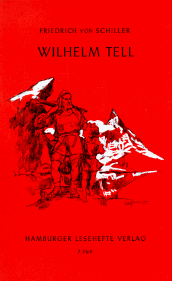

0
стр. з
0
сторінок

завантаження...

Вильгельм Телль
Перевел Андрей Бессонов
Метод чтения Ильи Франка
Сontents
How Gessler and Landenberg Came to Rule in SwitzerlandThe Story of Arnold of MelchthalThe Story of Gessler and StauffacherHow the Cap of Austria Was Set UpThe Meeting of the Three PatriotsThe Gathering on the RütliWilliam Tell and His Great ShotThe Escape of William TellTell’s Second ShotHow Castle Rossberg Was TakenHow Castle Sarnen Was TakenHow the Emperor Albrecht Met His DeathThe Battle of Morgarten
HOW GESSLER AND LANDENBERG CAME TO RULE IN SWITZERLAND
(Как Геслер и Ланденберг пришли править в Швейцарию).
Far away in the heart of Europe (далеко, в сердце Европы) there lies a little country called Switzerland (лежит маленькая страна, называемая Швейцарией; to call — звать, называть). Instead of being surrounded by the blue sea as our island is (вместо того чтобы быть окруженной синим морем, как наш остров), it is surrounded and shut in on all sides by other lands (она окружена и заперта со всех сторон другими странами; to shut in). It seems wonderful that in the fierce old days (кажется чудесным, что в жестокие старые дни), when might was right (когда мощь была правом = кто сильный, тот и прав), and when great and powerful Kings and Princes swept over the world, fighting and conquering (и когда великие и могучие короли и князья шествовали по миру, сражаясь и завоевывая; to sweep — мести, сметать; величаво ходить; одержать полную победу), that little Switzerland should not have been conquered and swallowed up (что маленькая Швейцария не была завоевана и поглощена; to swallow — глотать; to swallow up — поглотить) by one or other of the great countries (одной или другой = какой-либо из больших стран) which lay around (которые простирались вокруг; to lie — лежать; находиться). But the Swiss have always been a brave and fearless people (но швейцарцы всегда были отважным и бесстрашным народом; Swiss — швейцарский; the Swiss — швейцарцы); in the very heart of Europe their country has lain for hundreds of years (в самом сердце Европы их страна находилась сотни лет; to lie) as safe and free as our island on the ocean waves (такая же благополучная и свободная, как наш остров в океанских волнах; safe — невредимый, неповрежденный; защищенный от опасности; в безопасности).
heart [hRt], Europe ['jVqrqp], country ['kAntri], Switzerland ['swIts(q)lqnd], surround [sq'raVnd], powerful ['paVqf(q)l], prince [prIns], island ['aIlqnd]
Far away in the heart of Europe there lies a little country called Switzerland. Instead of being surrounded by the blue sea as our island is, it is surrounded and shut in on all sides by other lands. It seems wonderful that in the fierce old days, when might was right, and when great and powerful Kings and Princes swept over the world, fighting and conquering, that little Switzerland should not have been conquered and swallowed up by one or other of the great countries which lay around. But the Swiss have always been a brave and fearless people; in the very heart of Europe their country has lain for hundreds of years as safe and free as our island on the ocean waves.
Many many years ago, however (много-много лет назад, однако), one of the great Princes of Europe did try to conquer Switzerland (один из великих князей Европы все-таки попытался завоевать Швейцарию: «сделал попытаться»; to do) and take away the freedom of its people (и отнять свободу ее народа; to take — брать; away — прочь). But the people fought so bravely (но эти люди сражались так отважно; to fight), that instead of being conquered (что вместо того чтобы быть покоренными), they conquered the tyrants and drove them away (они покорили угнетателей и прогнали их прочь; to drive away).
year [jIq], ago [q'gqV], conquer ['kPNkq]
Many many years ago, however, one of the great Princes of Europe did try to conquer Switzerland and take away the freedom of its people. But the people fought so bravely, that instead of being conquered, they conquered the tyrants and drove them away.
In those far-off times the countries of Europe were divided (в те отдаленные времена страны Европы были разделены) quite differently from now (совершенно иначе, чем сейчас: «совершенно отлично от сейчас»). The greatest ruler in Europe was the Emperor (величайший правитель в Европе был император), and his empire was called the Holy Roman Empire (и его империя называлась Священной Римской Империей). This Empire was divided into many states (эта империя была разделена на многие государства), over each of which ruled a Prince or King (над каждым из которых правил князь или король) who owned the Emperor as "overlord" (который признавал императора как «верховного владыку»). When an Emperor died, his son did not succeed to the throne (когда император умирал, его сын не наследовал трон), but the Kings and Princes met together (но короли и князья собирались вместе; to meet — встречаться, собираться; знакомиться) and chose another Emperor from among their number (и выбирали другого императора из своего числа; to choose).
great [greIt], ruler ['rHlq], emperor ['emp(q)rq], empire ['empaIq], own [qVn], succeed [sqk'sJd], among [q'mAN]
In those far-off times the countries of Europe were divided quite differently from now. The greatest ruler in Europe was the Emperor, and his empire was called the Holy Roman Empire. This Empire was divided into many states, over each of which ruled a Prince or King who owned the Emperor as "overlord." When an Emperor died, his son did not succeed to the throne, but the Kings and Princes met together and chose another Emperor from among their number.
Switzerland was one of the countries which owned the Emperor as overlord (Швейцария была одной из стран, которые признавали императора верховным правителем). But the Swiss were a free people (но швейцарцы были свободным народом). They had no King or Prince over them (они не имели никакого короля или князя над собой), but a Governor only (но только наместника), who was appointed by the Emperor (который назначался императором).
governor ['gAv(q)nq], appoint [q'pOInt]
Switzerland was one of the countries which owned the Emperor as overlord. But the Swiss were a free people. They had no King or Prince over them, but a Governor only, who was appointed by the Emperor.
Austria was another of the states of the great empire (Австрия была еще одним из государств великой империи), and at one time a Duke of Austria was made ruler of Switzerland (и один раз австрийский герцог был сделан правителем Швейцарии; to make). Switzerland is a beautiful country (Швейцария — красивая страна), full of mountains, lakes, and valleys (полная гор, озер и долин), and this Duke cast greedy eyes upon it (и этот герцог бросал жадные взгляды: «глаза» на нее; to cast), and longed to possess it for his very own (и страстно желал иметь ее в собственности: «владеть ей в качестве своей собственной»; to long — страстно желать).
Austria ['PstrIq], duke [djHk], beautiful ['bjHtIf(q)l], mountain ['maVntIn], eye [aI], possess [pq'zes]
Austria was another of the states of the great empire, and at one time a Duke of Austria was made ruler of Switzerland. Switzerland is a beautiful country, full of mountains, lakes, and valleys, and this Duke cast greedy eyes upon it, and longed to possess it for his very own.
But the Swiss would not give up their freedom (но швейцарцы не желали отдавать свою свободу); and three cantons (и три кантона), as the states into which Switzerland is divided are called (— как называются штаты, на которые разделена Швейцария —), joined together (объединились вместе), and swore to stand by each other (и поклялись поддерживать друг друга; to swear; to stand by — быть наготове; поддерживать), and never to submit to Austria (и никогда не подчиняться Австрии).
call [kLl], swear [sweq], swore [swL], submit [sqb'mIt]
But the Swiss would not give up their freedom; and three cantons, as the states into which Switzerland is divided are called, joined together, and swore to stand by each other, and never to submit to Austria.
Uri, Schwytz, and Unterwalden were the names of these three cantons (Ури, Швиц и Унтервальден были названия этих трех кантонов). They were called the Forest Cantons (они назывались Лесными Кантонами) because of the beautiful woods (из-за прекрасных лесов) with which the mountainsides were covered (которыми склоны гор были покрыты). A little later another canton joined the three (немного позже еще один кантон присоединился к этим трем). These four cantons lie round a lake (эти четыре кантона лежат вокруг озера) which, from that, is called the Lake of the Four Forest Cantons (которое от этого = по этой причине называется Озером четырех лесных кантонов).
cover ['kAvq]
Uri, Schwytz, and Unterwalden were the names of these three cantons. They were called the Forest Cantons because of the beautiful woods with which the mountainsides were covered. A little later another canton joined the three. These four cantons lie round a lake which, from that, is called the Lake of the Four Forest Cantons.
At last it happened that Albrecht, Duke of Austria (наконец случилось /так/, что Альбрехт, герцог Австрийский), was chosen to be Emperor (был избран императором: «избран быть»; to choose). He was the son of that Duke who had already been ruler of Switzerland (он был сыном того герцога, который уже был правителем Швейцарии), and he was greatly rejoiced (и он был сильно обрадован), for he said to himself that now truly he would be lord and master of Switzerland (ибо он сказал себе, что теперь поистине он будет господином и хозяином Швейцарии; to say). For although the Swiss had resisted the Duke of Austria (ибо хотя швейцарцы противились герцогу Австрии), they would not dare to resist the Emperor, he thought (они не посмели бы сопротивляться императору, думал он; to think). So he sent two nobles to the Swiss to talk to them (так что он послал двух дворян к швейцарцам, чтобы поговорить с ними; to send), and persuade them to own him as their King (и убедить их признать его своим королем).
choose [CHz], chosen ['CqVz(q)n], son [sAn], truly ['trHli], although [Ll'DqV], resist [rI'zIst], thought [TLt], persuade [pq'sweId]
At last it happened that Albrecht, Duke of Austria, was chosen to be Emperor. He was the son of that Duke who had already been ruler of Switzerland, and he was greatly rejoiced, for he said to himself that now truly he would be lord and master of Switzerland. For although the Swiss had resisted the Duke of Austria, they would not dare to resist the Emperor, he thought. So he sent two nobles to the Swiss to talk to them, and persuade them to own him as their King.
"Promise that your country shall belong to the Duke for ever," said these nobles (обещайте, что ваша страна будет принадлежать герцогу навсегда, — сказали эти дворяне), "and he will care for you (и он будет заботиться о вас) and love you as his children (и любить вас, как своих детей). You are not strong enough to stand against a great enemy (вы недостаточно сильны, чтобы выстоять против большого врага; enough — достаточно), but he will protect you (но он будет защищать вас). He does not ask this of you because he wants to take your flocks and herds (он не просит этого у вас потому, что хочет забрать ваши стада; flock — стадо /овец, коз/; herd — стадо; гурт), but because he has heard from his father and has read in old histories (но потому, что он слышал от своего отца и читал в старых историях = книгах; to hear; to read) what a brave people you are (какой вы отважный народ). Duke Albrecht loves brave men (герцог Альбрехт любит отважных людей). He will lead you to battle and victory (он поведет вас в битву и к победе), and make you rich with spoil (и сделает вас богатыми трофеями), and will give you great rewards (и даст вам великие награды), and when you do brave deeds, he will make you knights (а когда вы будете совершать отважные подвиги, он будет посвящать вас в рыцари; to do — делать, совершать; to make — сделать)."
promise ['prPmIs], noble [nqVbl], enough [I'nAf], enemy ['enqmI], protect [prq'tekt], hear [hIq], heard [hWd], knight [naIt]
"Promise that your country shall belong to the Duke for ever," said these nobles, "and he will care for you and love you as his children. You are not strong enough to stand against a great enemy, but he will protect you. He does not ask this of you because he wants to take your flocks and herds, but because he has heard from his father and has read in old histories what a brave people you are. Duke Albrecht loves brave men. He will lead you to battle and victory, and make you rich with spoil, and will give you great rewards, and when you do brave deeds, he will make you knights."
Some of the people of Switzerland were persuaded to belong to Austria (некоторые из людей Швейцарии были убеждены, /что они должны/ принадлежать Австрии = их убедили эти слова), but the freemen and nobles (но свободные граждане и рыцари; freeman; noble — дворянин, рыцарь от noble — благородный), and all the people of the three cantons replied (и все люди трех кантонов ответили), "Say to your master, as Duke (скажите вашему господину, как герцогу), that we will never forget what a brave leader and good Governor his father was (что мы никогда не забудем, каким отважным вождем и добрым наместником был его отец), and we will love and respect his house for ever (и мы будем любить и уважать его дом = род навеки), but we wish to remain free (но мы желаем оставаться свободными). Say to him, as Emperor (скажите ему, как императору), that we will be true to the Empire (что мы будем верны Империи) as we have ever been (как мы всегда были). As Emperor he must content himself with that (как император он должен удовольствоваться этим)."
reply [rI'plaI], respect [rI'spekt], true [trH], content (удовольствоваться) [kqn'tent]
Some of the people of Switzerland were persuaded to belong to Austria, but the freemen and nobles, and all the people of the three cantons replied, "Say to your master, as Duke, that we will never forget what a brave leader and good Governor his father was, and we will love and respect his house for ever, but we wish to remain free. Say to him, as Emperor, that we will be true to the Empire as we have ever been. As Emperor he must content himself with that."
So the messengers went back to Albrecht (итак, послы ушли назад к Альбрехту; to go — идти; уйти) and told him what the people said (и рассказали ему, что сказали люди; to tell; to say). When he heard the message (когда он услышал это донесение; to hear) he was very angry (он очень рассердился: «был очень сердит»). He looked darkly at the nobles (он смотрел мрачно на этих рыцарей), biting his fingers and grinding his heel into the ground as he listened (кусая пальцы и втаптывая каблук в землю, пока слушал; to grind — перемалывать; вдалбливать). "The proud peasants," he cried at last (гордые крестьяне, — вскричал он наконец), "they will not yield (они не уступят = не желают уступать). Then I will bend and break them (тогда я согну и сломлю их). They will be soft and yielding enough (они будут достаточно мягкими и уступчивыми; enough — достаточно) when I have done with them (когда я покончу с ними; to do — делать, сделать, покончить, убить)."
messenger ['mesInGq], told [tqVld], grind [graInd], proud [praVd], yield [jJld], break [breIk]
So the messengers went back to Albrecht and told him what the people said. When he heard the message he was very angry. He looked darkly at the nobles, biting his fingers and grinding his heel into the ground as he listened. "The proud peasants," he cried at last, "they will not yield. Then I will bend and break them. They will be soft and yielding enough when I have done with them."
But Albrecht was already quarrelling with the Princes of his Empire (но Альбрехт уже ссорился = был в раздоре с князьями своей империи), who, although they had chosen him to be Emperor (которые, хоть они выбрали его императором; to choose), now hated and despised him (теперь ненавидели и презирали его). So for some time Albrecht had little thought to spare for Switzerland (поэтому некоторое время Альбрехту было не до Швейцарии: «он имел мало мысли, чтобы уделить Швейцарии»; thought — мысль; to spare — сэкономить; пощадить; обойтись без чего-либо; уделить), but he did not forgive the people (но он не простил этот народ), and from time to time he still tried (и время от времени он все еще пытался) to make them own him as their King (заставить их признать его как своего короля; to make — сделать; заставить, вынудить).
quarrel ['kwPr(q)l], spare [speq], forgive [fq'gIv]
But Albrecht was already quarrelling with the Princes of his Empire, who, although they had chosen him to be Emperor, now hated and despised him. So for some time Albrecht had little thought to spare for Switzerland, but he did not forgive the people, and from time to time he still tried to make them own him as their King.
Months went past (месяцы проходили: «проходили мимо»; to go) and the Emperor appointed no ruler over Switzerland (и император не назначал никакого правителя над Швейцарией). At last the people, feeling that they must have a Governor (наконец люди, чувствуя, что они должны иметь наместника), sent messengers to the Emperor, begging him to appoint a ruler (отправили послов к императору, прося его назначить правителя; to send), as all the Emperors before him had done (как все императоры перед ним поступали; to do).
month [mAnT], before [bI'fL]
Months went past and the Emperor appointed no ruler over Switzerland. At last the people, feeling that they must have a Governor, sent messengers to the Emperor, begging him to appoint a ruler, as all the Emperors before him had done.
"You desire a Governor," growled Albrecht (вы желаете наместника, — прорычал Альбрехт), as the messengers stood respectfully before him (пока послы стояли уважительно перед ним; to stand). "A Governor you shall have (наместника вы получите). Go home and await his coming (ступайте домой и ожидайте его прихода). Whom I send to you (кого я пошлю вам), him you must obey in all things (его = того вы должны слушаться во всех вещах)."
desire [dI'zaIq], obey [q'beI]
"You desire a Governor," growled Albrecht, as the messengers stood respectfully before him. "A Governor you shall have. Go home and await his coming. Whom I send to you, him you must obey in all things."
"We have ever been a law-abiding people, your Majesty," said the messengers (мы всегда были законопослушным народом, ваше величество, — сказали послы).
"Do you think so?" said Albrecht sternly (вы так думаете? — сказал Альбрехт сурово), "see to it that you are (смотрите, чтобы вы были /такими/; to see to — присмотреть, проследить за чем-либо), or you shall pay for it with your lives and your goods (или вы заплатите за это своими жизнями и добром), and your freedom will I utterly destroy (и вашу свободу я совершенно уничтожу)."
Then, very sad at heart, the messengers turned home again (затем, очень грустные сердцем, послы повернули обратно домой; again — снова, зд.: обратно).
law [lL], stern [stWn], destroy [dI'strOI]
"We have ever been a law-abiding people, your Majesty," said the messengers.
"Do you think so?" said Albrecht sternly, "see to it that you are, or you shall pay for it with your lives and your goods, and your freedom will I utterly destroy."
Then, very sad at heart, the messengers turned home again.
When they had gone (когда они ушли; to go), Albrecht smiled grimly to himself (Альбрехт улыбнулся мрачно сам себе). "They will not yield," he said (они не желают уступать, — сказал он), "but I will oppress them (но я буду угнетать их) and ill-treat them (и держать их в черном теле: «плохо обращаться») until I force them to rebel (пока не заставлю их взбунтоваться). Then I will fight against them and conquer them (тогда я буду сражаться против них и завоюю их), and at last Switzerland will be mine (и наконец Швейцария будет моей)."
go [gqV], gone [gPn], oppress [q'pres], rebel (взбунтоваться) [rI'bel], fight [faIt]
When they had gone, Albrecht smiled grimly to himself. "They will not yield," he said, "but I will oppress them and ill-treat them until I force them to rebel. Then I will fight against them and conquer them, and at last Switzerland will be mine."
A few days later Albrecht sent for two of his friends (несколько дней спустя Альбрехт послал за двумя из своих друзей; to send). These friends were called Hermann Gessler and Beringer of Landenberg (этих друзей звали Герман Геслер и Берингер из Ланденберга).
Now the Emperor Albrecht knew (а император Альбрехт знал; to know) that these men were grim, rough, and pitiless (что эти люди были жестокими, грубыми и безжалостными; pity — жалость), and therefore he chose them as rulers of Switzerland (и поэтому он выбрал их правителями Швейцарии; therefore — следовательно; to choose). He chose them, too, because they were Austrians (он выбрал их также потому, что они были австрийцами), and he knew they would be hated by the Swiss (и он знал, что их будут ненавидеть швейцарцы: «что они будут ненавидимы»).
friend [frend], know [nqV], knew [njH], rough [rAf], pitiless ['pItIlqs], therefore ['DeqfL]
A few days later Albrecht sent for two of his friends. These friends were called Hermann Gessler and Beringer of Landenberg.
Now the Emperor Albrecht knew that these men were grim, rough, and pitiless, and therefore he chose them as rulers of Switzerland. He chose them, too, because they were Austrians, and he knew they would be hated by the Swiss.
"My lords," he said when they came (милорды, — сказал он, когда они пришли; to come), "I have long watched you (я долго наблюдал за вами) and have marked the zeal (и отметил усердие) and love which you have for my throne and person (и любовь, которую вы питаете: «имеете» к моему престолу и личности = и ко мне). I am resolved to reward you (я решился вознаградить вас; resolved — решившийся, полный решимости). You, Hermann Gessler, I make ruler over the Forest Cantons of Uri and Schwytz (тебя, Герман Геслер, я делаю правителем над Лесными кантонами Ури и Швицем), and you, Beringer of Landenberg, I make ruler over Unterwalden (а тебя, Берингер из Ланденберга, я делаю правителем над Унтервальденом).
watch [wPC], love [lAv], throne [TrqVn], person ['pWs(q)n], resolved [rI'zPlvd], reward [rI'wLd]
"My lords," he said when they came, "I have long watched you and have marked the zeal and love which you have for my throne and person. I am resolved to reward you. You, Hermann Gessler, I make ruler over the Forest Cantons of Uri and Schwytz, and you, Beringer of Landenberg, I make ruler over Unterwalden.
"I have no words wherewith to thank your Majesty (у меня нет слов, которыми отблагодарить ваше величество)," said Gessler, bowing low (сказал Геслер, низко поклонившись).
"Your Majesty honours me too much (ваше величество оказывает мне слишком большую честь: «удостаивает меня слишком много»)," said Landenberg, bowing still lower (сказал Ланденберг, поклонившись еще ниже).
word [wWd], wherewith [weq'wIT], thank [TxNk], majesty ['mxGqstI], honour ['Pnq], bow (кланяться) [baV], low [lqV]
"I have no words wherewith to thank your Majesty," said Gessler, bowing low.
"Your Majesty honours me too much," said Landenberg, bowing still lower.
"They are a wild and rebellious people to whom I send you (они — дикий и мятежный народ, к кому я посылаю вас)," went on the Emperor (продолжил император; to go on), "they are so fierce and unruly (они столь свирепы и непокорны) that you must take soldiers with you (что вы должны взять солдат с собой) to help you to enforce the laws (чтобы помочь = чтобы они помогли вам навязать законы). You will tax the people in order to pay for these soldiers (вы обложите налогом народ, чтобы платить за этих солдат; in order to — с тем чтобы). You will punish all wrongdoers severely (вы будете наказывать всех правонарушителей сурово; wrongdoer — обидчик, оскорбитель; преступник; правонарушитель: «делатель неправды»; to do wrong — творить неправду; wrong — зло, несправедливость, нечестность, обман). I will endure no rebels within my empire (я не потерплю никаких бунтовщиков в моей империи)."
wild [waIld], rebellious [rI'belIqs], whom [hHm], unruly [An'rHlI], soldier ['sqVlGq], enforce [In'fLs], punish ['pAnIS], severely [sI'vIqli], endure [In'djVq], rebel (бунтовщик) ['reb(q)l], within [wI'DIn]
"They are a wild and rebellious people to whom I send you," went on the Emperor, "they are so fierce and unruly that you must take soldiers with you to help you to enforce the laws. You will tax the people in order to pay for these soldiers. You will punish all wrongdoers severely. I will endure no rebels within my empire."
"We understand, your Majesty," said Gessler (мы понимаем, ваше величество, — сказал Геслер).
"Your Majesty shall be obeyed," said Landenberg (вашему величеству будут подчиняться, — сказал Ланденберг = будет исполнено; to obey — слушаться, подчиняться). And once more bowing low (и, снова низко поклонившись), they took leave of the Emperor (они покинули императора; to take leave — уходить, раскланиваться, прощаться) and, gathering together their men and horses, set out for Switzerland (и, собрав «вместе» своих людей и коней, отправились в Швейцарию; to set out).
"We understand, your Majesty," said Gessler.
"Your Majesty shall be obeyed," said Landenberg. And once more bowing low, they took leave of the Emperor and, gathering together their men and horses, set out for Switzerland.
Hard and bitter days began (тяжелые и горькие дни начались; to begin) when Gessler and Landenberg settled there (когда Геслер и Ланденберг обосновались там). They delighted in oppressing the people (они наслаждались угнетением людей). They loaded them with taxes (они нагружали = обременяли их налогами); nothing could be either bought or sold, but the Governors claimed a great part of the money (ничто не могло быть ни куплено, ни продано, чтобы наместники не требовали большую часть денег: «кроме как наместники требовали…»; to buy; to sell; but — но; кроме); the slightest fault was punished with long imprisonment and heavy fines (незначительнейший проступок карался долгим заключением и тяжким штрафом; fault — ошибка; вина; недостаток; проступок; to imprison — заключать в тюрьму; prison — тюрьма). The people became sad and downcast (люди становились грустными и удрученными; to become), but still they would not yield to Austria (но все еще они не сдавались Австрии).
delight [dI'laIt], load [lqVd], either ['aIDq] или ['JDq], fault [fLlt], imprisonment [Im'prIz(q)nmqnt], heavy ['hevI]
Hard and bitter days began when Gessler and Landenberg settled there. They delighted in oppressing the people. They loaded them with taxes; nothing could be either bought or sold, but the Governors claimed a great part of the money; the slightest fault was punished with long imprisonment and heavy fines. The people became sad and downcast, but still they would not yield to Austria.
"God gave us the Emperor to stand between us and our enemies," they said (Бог дал нам императора, чтобы стоять = чтобы он стоял между нами и нашими врагами, — говорили они). "Now the Emperor has become our greatest enemy (теперь император стал нашим самым большим врагом; to become). But if we keep true to the Empire (но если мы останемся верными империи; to keep — держать, хранить; оставаться), this Emperor may die (этот император может умереть), and another, who will be kinder to us, may be chosen (и другой, который будет добрее к нам, может быть избран; to choose). If we yield to Austria (если мы сдадимся Австрии), our freedom is lost for ever (наша свобода потеряна навсегда; to lose — терять). Let us pray God for patience (давайте молить Бога о терпении; to let — позволять, давать; let us = let’s — давай/те/). The Emperor may soon die (император может скоро умереть). Then, with a new Emperor, Austria will have no power over us (тогда, с новым императором, Австрия не будет иметь никакой власти над нами)."
between [bI'twJn], die [daI], another [q'nADq], kind [kaInd], patience ['peIS(q)ns], power [paVq]
"God gave us the Emperor to stand between us and our enemies," they said. "Now the Emperor has become our greatest enemy. But if we keep true to the Empire, this Emperor may die, and another, who will be kinder to us, may be chosen. If we yield to Austria, our freedom is lost for ever. Let us pray God for patience. The Emperor may soon die. Then, with a new Emperor, Austria will have no power over us."
THE STORY OF ARNOLD OF MELCHTHAL
(История Арнольда из Мельхталя).
In Unterwalden there lived a good old man (в Унтервальдене жил хороший старик: «старый человек»), called Henri of Melchthal (по имени Хенри из Мельхталя). He was known and loved by all around (его знали и любили все вокруг: «он был знаем и любим…»; to know), and he lived happily with his son in their little farmhouse (и он жил счастливо со своим сыном в их маленьком фермерском домике). Henri of Melchthal was rich (Хенри из Мельхталя был богат). Flocks of sheep and goats fed upon the hillside above the farm (стада овец и коз паслись на склоне холма над фермой; to feed — кормить, питать; кормиться, питаться; пастись); herds of cattle browsed upon the meadowland (стада коров щипали траву на луговых угодьях; cattle — крупный рогатый скот, коровы и быки) which sloped from the door of the house (которые поднимались от двери дома); in the farm-yard, among the stacks of corn (на дворе фермы, среди стогов кукурузы), were cocks and hens and geese and ducks (были петухи, куры, гуси и утки; goose — гусь; geese — гуси).
known [nqVn], live [lIv], browse [braVz], geese [gJs]
In Unterwalden there lived a good old man, called Henri of Melchthal. He was known and loved by all around, and he lived happily with his son in their little farmhouse. Henri of Melchthal was rich. Flocks of sheep and goats fed upon the hillside above the farm; herds of cattle browsed upon the meadowland which sloped from the door of the house; in the farm-yard, among the stacks of corn, were cocks and hens and geese and ducks.
Henri was old and grave (Хенри был старый и серьезный) and his son Arnold was young and gay (а его сын Арнольд был молодой и веселый), but they loved each other dearly (но они любили друг друга нежно) and were always together (и были всегда вместе). All day long Arnold worked hard on the farm (целый день Арнольд усердно работал на ферме), feeding the cattle (кормя скот), ploughing and reaping (вспахивая /почву/ и убирая урожай). In the evening, when work was over (вечером, когда работа была закончена; over — зд.: законченный), the two would sit together by the fire (эти двое = они двое сиживали вместе у огня), while Henri told stories of bygone days (пока Хенри рассказывал истории минувших дней; to tell), or Arnold played wild mountain tunes upon his bagpipes (или Арнольд играл мелодии диких гор на своей волынке).
young [jAN], always ['LlweIz], plough [plaV], evening ['JvnIN], bygone ['baIgPn], tune [tjHn]
Henri was old and grave and his son Arnold was young and gay, but they loved each other dearly and were always together. All day long Arnold worked hard on the farm, feeding the cattle, ploughing and reaping. In the evening, when work was over, the two would sit together by the fire, while Henri told stories of bygone days, or Arnold played wild mountain tunes upon his bagpipes.
When Landenberg came to rule over Unterwalden (когда Ланденберг пришел править Унтервальденом: «над»; to come), he noticed the neat farmhouse (он заметил опрятный фермерский дом), and he envied the flocks and herds (и позавидовал стадам). He soon found out that Henri was a rich man (он скоро разузнал, что Хенри — богатый человек; to find out), and he made up his mind to take his riches from him (и решился отобрать его богатства у него; to make up one’s mind — принять решение: «составить мысли»). But Henri was so quiet and orderly (но Хенри был такой спокойный и благонравный: «аккуратный») that even Landenberg found it difficult to find any cause (что даже Ланденберг нашел сложным найти какой-либо повод; to find) for which he might be punished (за который он мог быть наказан; cause — причина, повод).
notice ['nqVtIs], envy ['envI], find [faInd], found [faVnd], quiet [kwaIqt], cause [kLz]
When Landenberg came to rule over Unterwalden, he noticed the neat farmhouse, and he envied the flocks and herds. He soon found out that Henri was a rich man, and he made up his mind to take his riches from him. But Henri was so quiet and orderly that even Landenberg found it difficult to find any cause for which he might be punished.
Arnold, however, was young and careless (Арнольд, однако, был молод и беспечен). He hated the Austrian ruler (он терпеть не мог австрийского правителя), and he took no pains to hide his hatred (и не давал себе труда скрывать свою ненависть: «не брал никаких усилий»; to take pains — прилагать усилия: «брать»). At last one day Landenberg, hearing of some boyish nickname (наконец однажды Ланденберг, услышав о каком-то ребяческом прозвище) Arnold had used in speaking of him (/которое/ Арнольд использовал, говоря о нем), resolved to punish him (решился наказать его).
careless ['keqlqs], hatred ['heItrId]
Arnold, however, was young and careless. He hated the Austrian ruler, and he took no pains to hide his hatred. At last one day Landenberg, hearing of some boyish nickname Arnold had used in speaking of him, resolved to punish him.
Landenberg knew that Henri of Melchthal possessed the best yoke of oxen in all the countryside (Ланденберг знал, что Хенри из Мельхталя владел лучшей парой волов во всей округе; ox — вол; oxen — волы; countryside — сельская местность). He had long envied them (он долго завидовал им), and now he meant to have them (и теперь он собирался заполучить их; to mean — иметь в виду, означать, значить; намереваться; to have — иметь; получить). So, calling his servant Rudolph (итак, призвав своего слугу Рудольфа), he ordered him to go to Henri of Melchthal’s house (он приказал ему пойти к дому Хенри из Мельхталя) and bring away the oxen (и увести прочь волов).
knew [njH], possess [pq'zes], mean [mJn], meant [ment], servant ['sWvqnt], order ['Ldq]
Landenberg knew that Henri of Melchthal possessed the best yoke of oxen in all the countryside. He had long envied them, and now he meant to have them. So, calling his servant Rudolph, he ordered him to go to Henri of Melchthal’s house and bring away the oxen.
Rudolph, taking some soldiers with him (Рудольф, взяв нескольких солдат с собой), set out for the farm (направился на ферму; to set out). When he arrived there (когда он пришел туда) he found Arnold in the field ploughing (он нашел Арнольда в поле, пашущего; to find). In Switzerland, at this time (в Швейцарии в это время), oxen were used to draw the ploughs instead of horses (волы использовались, чтобы тащить плуги вместо лошадей). Rudolph saw that Arnold was using the very oxen (Рудольф увидел, что Арнольд использовал тех самых волов; to see) which he had been sent to take (которые он был послан взять = за которыми он был послан; to send), so he and the soldiers rode across the field (так что он и солдаты поехали через поле; to ride — ехать верхом) to where Arnold was (туда, где был Арнольд).
arrive [q'raIv], field [fJld], use (использовать) [jHz], draw [drL]
Rudolph, taking some soldiers with him, set out for the farm. When he arrived there he found Arnold in the field ploughing. In Switzerland, at this time, oxen were used to draw the ploughs instead of horses. Rudolph saw that Arnold was using the very oxen which he had been sent to take, so he and the soldiers rode across the field to where Arnold was.
Arnold checked his oxen (Арнольд остановил своих волов; to check — останавливать, сдерживать; обуздывать) and looked up in astonishment as they came (и поднял глаза: «взглянул наверх» в изумлении, пока они приближались; to astonish — изумлять, поражать; to come — приходить; приближаться). What could they want? he asked himself (чего могли бы они хотеть? — спрашивал он себя). It made him angry (это делало его сердитым = его сердило) to see the fresh-turned furrows being trampled by horses’ hooves (видеть, как свежевспаханные борозды топчут копыта лошадей: «топчутся копытами»; to turn — поворачивать/ся/; пахать; hoof — копыто). "The Austrian peacocks," he growled to himself (австрийские павлины, — проворчал он про себя; to growl — рычать; ворчать; жаловаться), "could they not keep to the road (не могли они держаться дороги)?"
furrow ['fArqV], growl [graVl]
Arnold checked his oxen and looked up in astonishment as they came. What could they want? he asked himself. It made him angry to see the fresh-turned furrows being trampled by horses’ hooves. "The Austrian peacocks," he growled to himself, "could they not keep to the road?"
"Men," said Rudolph, when he was quite near to Arnold (солдаты: «люди», — сказал Рудольф, когда он был совсем близко к Арнольду; man — человек; мужчина; солдат, рядовой; матрос), "unyoke these oxen (выпрягайте из ярма этих волов; yoke — ярмо; хомут; to yoke — надевать ярмо, впрягать в ярмо)."
Arnold sprang forward (Арнольд ринулся вперед; to spring — прыгнуть, ринуться). "Do not dare," he said (не смейте, — сказал он), "do not dare to lay a finger upon them (не смейте пальцем их трогать: «наложить палец на них»). They are mine (они мои)."
"Yours!" said Rudolph, "yours (твои! — сказал Рудольф, — твои!)! Nay, they belong to my lord of Landenberg (нет, они принадлежат милорду Ланденбергу). You will perhaps think twice in the future (ты, возможно, дважды подумаешь в будущем) before you call my lord an "Austrian peacock." (прежде чем назовешь моего господина «австрийским павлином»).
quite [kwaIt], dare [deq], yours [jLz], future ['fjHCq]
"Men," said Rudolph, when he was quite near to Arnold, "unyoke these oxen."
Arnold sprang forward. "Do not dare," he said, "do not dare to lay a finger upon them. They are mine."
"Yours!" said Rudolph, "yours! Nay, they belong to my lord of Landenberg. You will perhaps think twice in the future before you call my lord an "Austrian peacock."
"Master Rudolph," said Arnold, trying to keep down his anger and to speak calmly (мастер Рудольф, — сказал Арнольд, стараясь сдерживать свой гнев и говорить спокойно; master — хозяин; мастер, господин /в обращении к юноше; ставится перед именем или перед фамилией старшего сына, напр.: Master John, Master Jones/; to keep down — сдерживать, подавлять: «держать вниз»), "I may have been foolish (я мог быть глуп), but I meant no ill (но я не имел в виду никакого зла = ничего дурного; to mean), and surely a yoke of oxen is too great a fine (и, конечно, пара волов — слишком большой штраф) to pay for a few idle words (чтобы платить за несколько праздных слов)."
"Who made you a judge?" asked Rudolph (кто сделал тебя судьей? — спросил Рудольф). "How shall an ignorant peasant say (как это невежественный крестьянин будет говорить) what punishments are just (какие наказания справедливы; to punish — наказывать)?"
try [traI], calmly ['kRmlI], surely ['SVqlI], idle [aIdl], judge [GAG], peasant ['pez(q)nt]
"Master Rudolph," said Arnold, trying to keep down his anger and to speak calmly, "I may have been foolish, but I meant no ill, and surely a yoke of oxen is too great a fine to pay for a few idle words."
"Who made you a judge?" asked Rudolph. "How shall an ignorant peasant say what punishments are just?"
"Nay," said Arnold, "I do not make myself a judge (нет, — сказал Арнольд, — я не делаю себя судьей). I do but ask justice (я лишь прошу справедливости; but — но; лишь, только; кроме). If I have done wrong (если я совершил проступок: «сделал неправильно») let me be taken before the court (пусть меня отведут в суд: «пусть я буду взят перед судом»; to let — давать, позволять; let — пусть; to take — брать; отводить), and I will cheerfully pay what fine is lawful (и я с радостью заплачу тот штраф, который будет законным) — but to take my oxen (но забирать моих волов) — ah, good Master Rudolph, how can I plough if you take my oxen (ах, добрый мастер Рудольф, как могу я пахать, если вы заберете моих волов)?"
ask [Rsk], justice ['GAstIs], wrong [rPN], court [kLt]
"Nay," said Arnold, "I do not make myself a judge. I do but ask justice. If I have done wrong let me be taken before the court, and I will cheerfully pay what fine is lawful — but to take my oxen — ah, good Master Rudolph, how can I plough if you take my oxen?"
"I do not care how you plough," said Rudolph (я не забочусь = меня не заботит, как ты пашешь, — сказал Рудольф). "I have been sent to take your oxen (меня послали: «я был послан» забрать твоих волов; to send) and take them I shall (и взять их я возьму; shall — буду, стану). If peasants will plough (если крестьяне желают пахать), let them yoke themselves to the shafts (пусть привязывают себя к дышлу; to yoke — впрягать; shaft — древко; дышло). It is all they are fit for (это все, для чего они годятся; fit — подходящий, годящийся). Come, men," he added (идем, солдаты, — добавил он), laying his hand upon the wooden collar to which the oxen were yoked (положив руку на деревянный хомут, к которому волы были привязаны: «впряжены»; collar — ворот, воротник; хомут; ошейник), "unbind the beasts (отвязывайте животных; to bind — связывать, привязывать)."
care [keq], collar ['kPlq], unbind [An'baInd]
"I do not care how you plough," said Rudolph. "I have been sent to take your oxen and take them I shall. If peasants will plough, let them yoke themselves to the shafts. It is all they are fit for. Come, men," he added, laying his hand upon the wooden collar to which the oxen were yoked, "unbind the beasts."
Then Arnold’s rage burst out (тогда ярость Арнольда вырвалась наружу; to burst out; to burst — лопаться; разрываться). "Hands off!" he cried (руки прочь! — крикнул он), and with the stick which he carried (и палкой, которую он нес) he aimed a blow at Rudolph’s hand (он нацелил = нанес удар по руке Рудольфа), as it lay upon the wooden collar (пока она лежала на деревянном хомуте; to lie).
Rudolph uttered a howl of pain and anger (Рудольф издал вопль боли и гнева). Two of his fingers were broken (два его пальца были сломаны; to break). "At him, men, and seize him," he cried (на него, солдаты, и хватайте его, — крикнул он). "He shall smart for this (он пострадает за это; to smart — испытывать резкую боль; страдать; болеть)."
burst [bWst], blow [blqV], howl [haVl], anger ['xNgq], seize [sJz]
Then Arnold’s rage burst out. "Hands off!" he cried, and with the stick which he carried he aimed a blow at Rudolph’s hand, as it lay upon the wooden collar.
Rudolph uttered a howl of pain and anger. Two of his fingers were broken. "At him, men, and seize him," he cried. "He shall smart for this."
The men sprang forward (солдаты ринулись вперед; to spring), but Arnold was too quick for them (но Арнольд был слишком быстрым для них). He turned and fled away over the field (он повернулся и побежал прочь через поле; to flee — убегать, спасаться бегством), for he had no weapon except his stick (так как он не имел никакого оружия, кроме своей палки).
Arnold was one of the fastest runners in the country (Арнольд был одним из быстрейших бегунов в стране), and the soldiers were weighted with their heavy armour (а солдаты были нагружены своими тяжелыми доспехами). They could not run fast (они не могли бежать быстро), and they stumbled and fell in the newly-ploughed field (и они оступились и рухнули на свежевспаханном поле; to fall). So Arnold got safely away (так что Арнольд благополучно убежал; to get away — убежать: «деваться прочь») to the shelter of the pine forest on the mountain beyond (в укрытие соснового леса на горе за /полем/; pine — сосна).
quick [kwIk], weapon ['wep(q)n], weight [weIt], armour ['Rmq], beyond [bi'Pnd]
The men sprang forward, but Arnold was too quick for them. He turned and fled away over the field, for he had no weapon except his stick.
Arnold was one of the fastest runners in the country, and the soldiers were weighted with their heavy armour. They could not run fast, and they stumbled and fell in the newly-ploughed field. So Arnold got safely away to the shelter of the pine forest on the mountain beyond.
"Fools and idiots," yelled Rudolph, as the soldiers returned (дураки и идиоты, — заорал Рудольф, когда солдаты вернулись). "Why could you not catch him (почему вы не смогли поймать его)? Fools, unyoke the oxen (дураки, распрягайте волов) and let us be going (и пойдем отсюда: «давайте будем уходить»)."
The men did as they were told (солдаты сделали, как им было велено; to tell — сказать; велеть), and the gentle, patient beasts, which had stood quietly all the time (и кроткие, терпеливые животные, которые стояли спокойно все это время; to stand), now lowed piteously (теперь жалобно замычали; pity — жалость), as if they knew that they were leaving their kind master for ever (словно они знали, что покидают своего доброго хозяина навсегда; to know).
idiot ['IdIqt], return [rI'tWn], gentle [Gentl], patient ['peIS(q)nt], piteously ['pItIqslI]
"Fools and idiots," yelled Rudolph, as the soldiers returned. "Why could you not catch him? Fools, unyoke the oxen and let us be going."
The men did as they were told, and the gentle, patient beasts, which had stood quietly all the time, now lowed piteously, as if they knew that they were leaving their kind master for ever.
That night it was known far and wide (той ночью стало известно повсюду: «далеко и широко»; to know) that Arnold of Melchthal had struck the Governor's servant (что Арнольд из Мельхталя ударил слугу наместника; to strike) and that he had fled away (и что он сбежал прочь; to flee). And Henri sat alone by his fireside (и Хенри сидел один у своего камина; to sit), sadly wondering what would happen (грустно размышляя /о том/, что случится; to wonder — дивиться; желать знать, интересоваться), and if he would ever again see his dear son (и увидит ли он когда-либо снова своего дорогого сына).
fireside ['faIqsaId], would [wud], again [q'gen]
That night it was known far and wide that Arnold of Melchthal had struck the Governor’s servant and that he had fled away. And Henri sat alone by his fireside, sadly wondering what would happen, and if he would ever again see his dear son.
Rudolph went straight to the Governor (Рудольф пошел прямо к наместнику) and told him all that had happened (и рассказал ему все, что произошло). Landenberg was furiously angry (Ланденберг был неистово сердит; fury — неистовство; бешенство, ярость), and he sent soldiers through all the country to search for Arnold (и послал солдат по всей стране, чтобы искать Арнольда; to send). But no trace of him could be found (но никакой след его не мог быть найден; to find), for Arnold was already far away (так как Арнольд был уже далеко), and was safely hidden by his friends (и был надежно спрятан своими друзьями; to hide).
straight [streIt], furiously ['fjVqrIqslI], search [sWC], hidden ['hId(q)n]
Rudolph went straight to the Governor and told him all that had happened. Landenberg was furiously angry, and he sent soldiers through all the country to search for Arnold. But no trace of him could be found, for Arnold was already far away, and was safely hidden by his friends.
"Bring the father here to me," said Landenberg at last (приведите отца сюда ко мне, — сказал Ланденберг наконец). "He must know where his son is hiding (он должен знать, где прячется его сын)."
So the soldiers went to the pretty farmhouse (и солдаты пошли в милый фермерский домик), where Henri now lived all by himself (где Хенри теперь жил совсем один: «весь у себя»), and, seizing him, brought him before the Governor (и, схватив его, привели его пред /лицо/ наместника; to bring).
pretty ['prItI], brought [brLt]
"Bring the father here to me," said Landenberg at last. "He must know where his son is hiding."
So the soldiers went to the pretty farmhouse, where Henri now lived all by himself, and, seizing him, brought him before the Governor.
"What is your name?" asked Landenberg (как твое имя? — спросил Ланденберг).
"I am called Henri of Melchthal (меня зовут Хенри из Мельхталя)."
"Ah! then tell me (ага! тогда скажи мне), where is your rebellious son (где твой мятежный сын)?"
"I do not know, my lord (я не знаю, господин)."
"Do not tell me that," said Landenberg fiercely (не говори мне этого, — сказал Ланденберг свирепо). "I do not believe you (я не верю тебе). You must know (ты должен знать). You are in league together (вы в союзе вместе = сообщники). Tell me at once (скажи мне немедленно)."
"I do not know, my lord," said Henri again (я не знаю, господин, — сказал Хенри снова). "My son has not come near the house (мой сын не подходил близко к дому) since the day on which he fled (с того дня, в который он убежал; to flee)."
fiercely ['fIqslI], believe [bI'lJv], league [lJg], since [sIns]
"What is your name?" asked Landenberg.
"I am called Henri of Melchthal."
"Ah! then tell me, where is your rebellious son?"
"I do not know, my lord."
"Do not tell me that," said Landenberg fiercely. "I do not believe you. You must know. You are in league together. Tell me at once."
"I know not, my lord," said Henri again. "My son has not come near the house since the day on which he fled."
"Ah," said Landenberg again, "I do not believe you (ах, — сказал Ланденберг снова, — я не верю тебе). But I will soon make you tell (но я скоро заставлю тебя сказать). Ho! headsman, without there (эй! палач, там, снаружи)."
The headsman entered (палач вошел).
"Take him away," said Landenberg, pointing at Henri (уведите его, — сказал Ланденберг, указывая на Хенри: «возьмите его прочь»), "and if he will not speak (и если он не пожелает говорить), put out his eyes (выколите ему глаза: «его глаза»)."
"My lord, my lord, I don’t know, I don’t know!" cried Henri in agony (господин, господин, я не знаю, я не знаю! — кричал Хенри в исступлении). But the headsman led him away and put out his eyes (но палач увел его и выколол ему глаза; to lead).
headsman ['hedzmqn], put [put], cry [kraI], agony ['xgqnI]
"Ah," said Landenberg again, "I do not believe you. But I will soon make you tell. Ho! headsman, without there."
The headsman entered.
"Take him away," said Landenberg, pointing at Henri, "and if he will not speak, put out his eyes."
"My lord, my lord, I don’t know, I don’t know!" cried Henri in agony. But the headsman led him away and put out his eyes.
"Now," said Landenberg to Rudolph, with a cruel laugh (теперь, — сказал Ланденберг Рудольфу с жестоким смехом), "he has paid with his two eyes for your two fingers (он заплатил своими двумя глазами за твои два пальца; to pay)."
"That makes me no richer," grumbled Rudolph (это не делает меня нисколько богаче, — проворчал Рудольф).
"True," said Landenberg (правда: «правдиво», — сказал Ланденберг), "but there is much money in his house (но в его доме много денег), and he has herds and flocks enough (и у него достаточно стад). You shall have a share of them (ты получишь долю из них), for you serve me well (ибо ты служишь мне хорошо)."
cruel ['krHql], laugh [lRf], share [Seq]
"Now," said Landenberg to Rudolph, with a cruel laugh, "he has paid with his two eyes for your two fingers."
"That makes me no richer," grumbled Rudolph.
"True," said Landenberg, "but there is much money in his house, and he has herds and flocks enough. You shall have a share of them, for you serve me well."
So Landenberg took Henri of Melchthal’s house and lands and cattle (так Ланденберг забрал дом и земли и скот Хенри из Мельхталя; to take), and all that he had (и все, что тот имел). And the old man, who only a few days before had been rich and happy (а старик, который лишь несколько дней до этого был богат и счастлив), was left to wander away alone (был оставлен, чтобы убрести прочь один; to leave), a poor, blind beggar (бедным, слепым попрошайкой).
But kind people had pity on Henri of Melchthal (но добрые люди пожалели Хенри из Мельхталя: «имели жалость на»; pity — жалость). They remembered how good and generous he had been (они помнили, каким добрым и щедрым он был) when he was rich and happy (когда он был богат и счастлив), so, now that he was poor and in trouble (так что теперь, когда он был беден и в беде), they took him to their homes (они принимали его в свои дома; to take — брать) and tried to comfort him (и пытались утешить его) and make him forget all that he had lost (и заставить его забыть все, что он потерял; to lose).
wander ['wPndq], poor [pVq], blind [blaInd], beggar ['begq], pity ['pItI], remember [rI'membq], generous ['Gen(q)rqs], trouble [trAbl], comfort ['kAmfqt], forget [fq'get]
So Landenberg took Henri of Melchthal’s house and lands and cattle, and all that he had. And the old man, who only a few days before had been rich and happy, was left to wander away alone, a poor, blind beggar.
But kind people had pity on Henri of Melchthal. They remembered how good and generous he had been when he was rich and happy, so, now that he was poor and in trouble, they took him to their homes and tried to comfort him and make him forget all that he had lost.
THE STORY OF GESSLER AND STAUFFACHER
(Рассказ о Геслере и Штауффахере).
Meanwhile, in Schwytz and Uri, Hermann Gessler was making himself as much hated (тем временем в Швице и Ури Герман Геслер делал себя столь же ненавистным) as was Beringer of Landenberg in Unterwalden (каким был Берингер из Ланденберга в Унтервальдене).
meanwhile ["mJn'waIl]
Meanwhile, in Schwytz and Uri, Hermann Gessler was making himself as much hated as was Beringer of Landenberg in Unterwalden.
Gessler lived in a great castle at Küssnacht in Schwytz (Геслер жил в большом замке в Кюснахте в Швице). It was a strong and gloomy castle (это был сильный = крепкий и мрачный замок), and in it were dreadful dungeons where he imprisoned the people (а в нем были ужасные темницы, куда он заточал людей) and tortured them according to his own wicked will (и мучил их согласно своей собственной злой воле). But he was not pleased to have only one castle (но он не был рад = удовлетворен иметь только один замок; to please — радовать), and he made up his mind to build another in Uri (и он решил построить еще один в Ури; to make up one’s mind — решиться, принять решение: «составить свое намерение»). So he began to build one near the little town of Altorf (так что он начал строить замок близ маленького городка Альторфа; to begin; one — один, зд. вместо «замок»), which lay at the other end of the Lake of the Four Forest Cantons (который находился на другом конце Озера Четырех лесных кантонов; to lie — лежать; находиться).
castle [kRsl], dreadful ['dredf(q)l], dungeon ['dAnG(q)n], torture ['tLCq], according [q'kLdIN], wicked ['wIkId], build [bIld], town [taVn]
Gessler lived in a great castle at Küssnacht in Schwytz. It was a strong and gloomy castle, and in it were dreadful dungeons where he imprisoned the people and tortured them according to his own wicked will. But he was not pleased to have only one castle, and he made up his mind to build another in Uri. So he began to build one near the little town of Altorf, which lay at the other end of the Lake of the Four Forest Cantons.
Gessler forced the men of Uri to build this castle (Геслер заставлял людей из Ури строить этот замок), and he meant to use it not only as a house for himself (а он намеревался использовать его не только как дом для себя; to mean — иметь в виду, означать, подразумевать; намереваться), but as a prison for the people (но и как тюрьму для людей).
The men of Uri worked unwillingly (люди из Ури работали неохотно). Their hearts sank within them (их сердца опускались внутри них; to sink — опускаться; погружаться, тонуть) as they hewed the stones and laid them one on another (пока они тесали камни и клали их один на другой; to lay), for they knew that they were building a prison for themselves (ибо они знали, что строят тюрьму для самих себя).
prison ['prIz(q)n], hew [hjH], themselves [Dqm'selvz]
Gessler forced the men of Uri to build this castle, and he meant to use it not only as a house for himself, but as a prison for the people.
The men of Uri worked unwillingly. Their hearts sank within them as they hewed the stones and laid them one on another, for they knew that they were building a prison for themselves.
As the walls rose (по мере того как стены поднимались; to rise) and the dark and gloomy prison cells took shape (и темные и мрачные тюремные камеры принимали форму; to take), the men grew more and more sullen (люди становились все более и более хмурыми; to grow — расти; становиться). "Who would be the first," they asked themselves, "to lie (кому первому, — спрашивали они себя, — лежать) in these dark dungeons (в этих темных склепах; dungeon — главная башня /расположенная во внутреннем дворе средневекового замка/; подземная тюрьма, тюремная камера; темница; склеп)?"
Gessler often came to watch the building (Геслер часто приходил наблюдать за строительством) and to jeer and laugh at the unwilling workers (и поглумиться и посмеяться над неохотными = неохотно работающими работниками). "You do not want to build my castle," he said (вы не хотите строить мой замок, — сказал он). "O you fierce lions (о вы, свирепые львы)! O you stiff-necked peasants (о вы, жестоковыйные крестьяне = упрямые; stiff — тугой; чопорный; неуклюжий; окостеневший, одеревенелый; neck — шея)! Wait a little (подождите немного), and I will make you tame and soft enough (и я сделаю вас достаточно кроткими и мягкими; tame — прирученный, одомашненный; укрощенный; enough — достаточно) to wind around my finger (чтобы обмотаться вокруг моего пальца)."
wall [wLl], cell [sel], grow [grqV], grew [grH], first [fWst], often [Pf(q)n], laugh [lRf], wind (обмотаться) [waInd], finger ['fINgq]
As the walls rose and the dark and gloomy prison cells took shape, the men grew more and more sullen. "Who would be the first," they asked themselves, "to lie in these dark dungeons?"
Gessler often came to watch the building and to jeer and laugh at the unwilling workers. "You do not want to build my castle," he said. "O you fierce lions! O you stiff-necked peasants! Wait a little, and I will make you tame and soft enough to wind around my finger."
"What will you call your castle?" asked a friend one day (как: «чем» ты назовешь этот замок? — спросил один друг однажды), as they stood to watch the building (пока они стояли, чтобы понаблюдать за строительством; to stand).
"I will call it the Curb of Uri," said Gessler, with a cruel laugh (я назову его Узда Ури, — сказал Геслер с жестоким смешком; curb — подгубный ремень или цепочка /в сбруе/; to curb — обуздывать; усмирять), "for with it I will curb the proud spirit of these peasants (ибо им я обуздаю гордый дух этих крестьян)"; and the hearts of the men who heard him sank still further (и сердца людей, которые слышали его, опустились еще ниже; to hear; to sink). Were they thus to be bridled (должны ли они быть так обузданы: «были ли они так быть обузданными»; bridle — узда, уздечка; to bridle — обуздывать, сдерживать, укрощать, усмирять) and beaten like beasts of burden (и избиваемы, как вьючные животные; to beat — бить)?
spirit ['spIrIt], further ['fWDq], thus [DAs], bridle [braIdl], burden ['bWd(q)n]
"What will you call your castle?" asked a friend one day, as they stood to watch the building.
"I will call it the Curb of Uri," said Gessler, with a cruel laugh, "for with it I will curb the proud spirit of these peasants"; and the hearts of the men who heard him sank still further. Were they thus to be bridled and beaten like beasts of burden?
After watching the work for some time (посмотрев на работу некоторое время: «после посмотрев…»), Gessler and his friend rode away (Геслер и его друг ускакали прочь; to ride). They were gaily clad (они были ярко одеты), they looked splendid and grand (они выглядели роскошно и величественно), but as they rode along (но когда они ехали вперед; to ride; along — вместе; вперед; дальше; по) they were followed by the silent curses of the men of Uri (за ними следовали молчаливые проклятия людей из Ури).
some [sAm], follow ['fPlqV], silent ['saIlqnt], curse [kWs]
After watching the work for some time, Gessler and his friend rode away. They were gaily clad, they looked splendid and grand, but as they rode along they were followed by the silent curses of the men of Uri.
"My friend," said Gessler, as he rode (мой друг, — сказал Геслер, пока он ехал = по дороге; to ride), "we will go back to Küssnacht by another way (мы вернемся в Кюснахт другим путем; back — назад). I have heard that an insolent peasant called Werner Stauffacher (я слыхал, что один дерзкий крестьянин по имени Вернер Штауффахер) has built himself a new house (выстроил себе новый дом; to build). I wish to see it (я желаю увидеть его). There is no end to the impudence of these peasants (нет конца наглости этих крестьян; impudent — бесстыдный; нахальный, дерзкий)."
impudence ['Impjqd(q)ns]
"My friend," said Gessler, as he rode, "we will go back to Küssnacht by another way. I have heard that an insolent peasant called Werner Stauffacher has built himself a new house. I wish to see it. There is no end to the impudence of these peasants."
"But what will you do?" asked his friend (но что ты будешь делать? — спросил его друг).
"Do," said Gessler, "why, turn him out, to be sure (делать? — сказал Геслер, — ну как же, вышвырну его, конечно; to turn out — вывернуть; выпроводить, выгнать; to turn — вращать, поворачивать; to be sure — конечно: «быть уверенным»). What need have these peasants of great houses (какую нужду имеют эти крестьяне в больших домах)?"
So they rode on, Gessler talking of the great things he would do (так они ехали дальше, /при этом/ Геслер говорил о великих вещах, которые он совершит; to ride), and of how he would grind these "peasant nobles," as he called them, to the earth (и о том, как он втопчет этих «крестьянских дворян», как он называл их, в землю; to grind — молоть; вдавливать, вдалбливать).
do [dH], sure [SVq], talk [tLk], earth [WT]
"But what will you do?" asked his friend.
"Do," said Gessler, "why, turn him out, to be sure. What need have these peasants of great houses?"
So they rode on, Gessler talking of the great things he would do, and of how he would grind these "peasant nobles," as he called them, to the earth.
At last they came to a bridge (наконец они подъехали к мосту) which crossed the little river by which they rode (который пересекал маленькую речку, вдоль которой они ехали; to ride — ехать верхом, скакать), and there, on the hillside opposite (и там, на склоне холма напротив), stood the house which they had come to see (стоял дом, который они приехали посмотреть).
It was far more beautiful than Gessler had expected (он был гораздо: «далеко» прекраснее, чем ожидал Геслер), and he stood still gazing at it in wonder and anger (и он стоял неподвижно, уставившись на него в изумлении и ярости; to gaze — пристально глядеть; вглядываться; уставиться).
bridge [brIG], river ['rIvq], opposite ['PpqzIt], expect [Ik'spekt], wonder ['wAndq]
At last they came to a bridge which crossed the little river by which they rode, and there, on the hillside opposite, stood the house which they had come to see.
It was far more beautiful than Gessler had expected, and he stood still gazing at it in wonder and anger.
The house was long and low, and built of wood (дом был длинный и низкий и построен из дерева; to build). The roof was of red tiles (крыша была из красной черепицы), and the walls were painted white (а стены были выкрашены белым). The many windows glittered in the sunlight (многочисленные окна сверкали в солнечном свете), and round their black frames, as was the custom in those days (и вокруг их черных рам, как был обычай в те дни), names and proverbs were painted in white letters (имена и пословицы были написаны красками белыми буквами; to paint — писать красками).
"This house was built by Werner Stauffacher and Gertrude of Iberg, his wife, in the year of Grace 1307 (этот дом был построен Вернером Штауффахером и Гертрудой из Иберга, его женой, в год от Рождества Христова 1307; to build; Grace — зд.: Благодать; милость; молитва). Who labours well, rests well," read Gessler (кто трудится хорошо, хорошо отдыхает, — прочел Геслер; to read). Pale with rage, he rode across the bridge and stopped before the house (бледный от ярости, он переехал через мост и остановился перед домом). It made him furious (его делало взбешенным = бесило) to think of the money which had been spent upon it (— думать о деньгах, которые были потрачены на него; to spend).
those [DqVz], proverb ['prPvWb], labour ['leIbq], money ['mAnI]
The house was long and low, and built of wood. The roof was of red tiles, and the walls were painted white. The many windows glittered in the sunlight, and round their black frames, as was the custom in those days, names and proverbs were painted in white letters.
"This house was built by Werner Stauffacher and Gertrude of Iberg, his wife, in the year of Grace 1307. Who labours well, rests well," read Gessler. Pale with rage, he rode across the bridge and stopped before the house. It made him furious to think of the money which had been spent upon it.
Beside the door grew a tall lime-tree (около двери росла высокая липа; to grow), and under it, on a wooden bench, sat Werner Stauffacher (и под ней на деревянной скамейке сидел Вернер Штауффахер; to sit).
As Gessler rode up Stauffacher rose (когда Геслер подъехал, Штауффахер встал; to ride up; to rise), and taking off his cap, greeted him politely (и, сняв шапку, приветствовал его вежливо). "Welcome, my lord," he said (добро пожаловать, мой господин, — сказал он).
beside [bI'saId], politely [pq'laItlI], welcome ['welkqm]
Beside the door grew a tall lime-tree, and under it, on a wooden bench, sat Werner Stauffacher.
As Gessler rode up Stauffacher rose, and taking off his cap, greeted him politely. "Welcome, my lord," he said.
Gessler took no notice of Stauffacher’s greeting (Геслер не обратил внимания на приветствие Штауффахера; to take notice — замечать: «брать заметку»). "Whose house is this?" he demanded (чей это дом? — спросил он), although he knew very well to whom it belonged (хотя он знал очень хорошо, кому он принадлежал). He wanted an excuse for robbing Stauffacher (он хотел предлога, чтобы ограбить Штауффахера), and hoped to find it in his answer (и надеялся найти его в его ответе).
But Stauffacher, seeing how angry Gessler was (но Штауффахер, видя, как рассержен Геслер), and being a wise man, answered quietly (и будучи мудрым человеком, ответил спокойно; quietly — тихо; спокойно), "My lord, the house belongs to His Majesty the Emperor (мой господин, этот дом принадлежит его величеству императору), and is yours and mine in fief (и /он/ ваш и мой в феодальном владении) to hold and use for his service (чтобы держать и использовать /его/ на его службе = на службе у императора)."
notice ['nqVtIs], demand [dI'mRnd], excuse (предлог, повод) [Ik'skjHs], answer ['Rnsq], fief [fJf], hold [hqVld], service ['sWvIs]
Gessler took no notice of Stauffacher’s greeting. "Whose house is this?" he demanded, although he knew very well to whom it belonged. He wanted an excuse for robbing Stauffacher, and hoped to find it in his answer.
But Stauffacher, seeing how angry Gessler was, and being a wise man, answered quietly, "My lord, the house belongs to His Majesty the Emperor, and is yours and mine in fief to hold and use for his service."
"I rule this land," said Gessler in a voice shaking with anger (я правлю этой землей, — сказал Геслер голосом, дрожащим от ярости; to shake — трястись, дрожать). "I rule this land in the name of the Emperor (я правлю этой землей во имя императора), and I will not allow peasants to build houses as they please (и я не позволю крестьянам строить дома, как им заблагорассудится) without asking leave (не испросив дозволения; without — без). I will not permit them to live as lords and gentlemen (я не разрешу им жить, как господа и благородные). I will have you understand that (вы у меня это поймете; to have — иметь; получить; добиться)." And turning, he rode from the doorway (и развернувшись, он поскакал от двери = от дома), followed by his gay train of knights and soldiers (в сопровождении своей веселой свиты из рыцарей и солдат; to follow — следовать).
Werner Stauffacher looked long after them (Вернер Штауффахер смотрел долго за ними = им вслед) as they clattered away (пока они с грохотом удалялись: «грохотали прочь»). Then full of sad thoughts he sat down again (затем, полный печальных мыслей, он сел снова; to sit down — сесть: «сесть вниз») on the wooden bench under the tall lime-tree (на деревянную скамью под высокой липой).
rule [rHl], allow [q'laV], permit (разрешать) [pq'mIt], thought [TLt]
"I rule this land," said Gessler in a voice shaking with anger. "I rule this land in the name of the Emperor, and I will not allow peasants to build houses as they please without asking leave. I will not permit them to live as lords and gentlemen. I will have you understand that." And turning, he rode from the doorway, followed by his gay train of knights and soldiers.
Werner Stauffacher looked long after them as they clattered away. Then full of sad thoughts he sat down again on the wooden bench under the tall lime-tree.
As he sat there, leaning his head upon his hand (пока он сидел там, оперев голову на руку), and looking with troubled eyes across the valley (и глядя озабоченными глазами через долину) to the snow-topped mountains beyond (на горы с заснеженными вершинами вдалеке; beyond — вне; вдалеке), Gertrude, his wife, came and sat beside him (Гертруда, его жена, подошла и присела рядом с ним). For some time they sat in silence (некоторое время они сидели в молчании). Then laying her hand on his arm (затем, положив руку на его руку; hand — кисть руки; arm — рука /от плеча/), "Werner," she said softly, "what troubles you (Вернер, — сказала она тихо, — что тревожит тебя)?"
"Dear wife, it is nothing," he said, smiling at her (дорогая жена, ничего, — сказал он, улыбнувшись ей).
trouble [trAbl], silence ['saIlqns], nothing ['nATIN]
As he sat there, leaning his head upon his hand, and looking with troubled eyes across the valley to the snow-topped mountains beyond, Gertrude, his wife, came and sat beside him. For some time they sat in silence. Then laying her hand on his arm, "Werner," she said softly, "what troubles you?"
"Dear wife, it is nothing," he said, smiling at her.
"No, no," replied Gertrude, "do not treat me (нет-нет, — ответила Гертруда, — не обращайся со мной /так/) as if I were a child (словно бы я была ребенком). Tell me what has happened (расскажи мне, что случилось). The Governor has been here, I know (наместник был здесь, я знаю), and that frightens me (и это страшит меня). What has he said or done to you (что он сказал или сделал тебе)?"
"He has done nothing yet," said Werner (он еще ничего не сделал, — сказал Вернер), "but he is very angry that we have built this house (но он очень сердит, что мы построили этот дом; to build). He looked so fierce as he rode away (он выглядел так свирепо, пока уезжал прочь) that I am sure he means to take it from us (что я уверен — он намеревается отнять его у нас). Yes, I am sure of it (да, я уверен в этом). He will take our house (он заберет наш), and our goods and our money as well (и наше имущество и наши деньги тоже). Do you wonder that I am sad (удивляешься ли ты, что я печален)? Yet what can we do (но что мы можем сделать)?"
reply [rI'plaI], child [CaIld], frighten ['fraIt(q)n]
"No, no," replied Gertrude, "do not treat me as if I were a child. Tell me what has happened. The Governor has been here, I know, and that frightens me. What has he said or done to you?"
"He has done nothing yet," said Werner, "but he is very angry that we have built this house. He looked so fierce as he rode away that I am sure he means to take it from us. Yes, I am sure of it. He will take our house, and our goods and our money as well. Do you wonder that I am sad? Yet what can we do?"
As Werner spoke Gertrude grew pale (пока Вернер говорил, Гертруда бледнела: «становилась бледной»; to grow — расти; становиться), then her cheeks flushed red (затем ее щеки зарделись: «залились красным») and her eyes sparkled with anger (и ее глаза сверкнули гневом). "Oh," she cried, "it is shameful, shameful (о, — вскричала она, — это постыдно, постыдно)! How long are we to suffer the Austrian tyrants (как долго должны мы терпеть австрийских тиранов)? Oh that I were a man (о, если бы я была мужчиной)!"
tyrant ['taIrqnt]
As Werner spoke Gertrude grew pale, then her cheeks flushed red and her eyes sparkled with anger. "Oh," she cried, "it is shameful, shameful! How long are we to suffer the Austrian tyrants? Oh that I were a man!"
Gertrude rose and walked up and down in front of the house for a few minutes (Гертруда встала и шагала туда-сюда: «вверх и вниз» перед домом несколько минут), thinking deeply (глубоко задумавшись). "Werner," she said at last, stopping before him (Вернер, — сказала она наконец, остановившись перед ним), "listen to me (послушай меня). Every day we hear cries of despair (каждый день мы слышим крики отчаяния) from our friends around us (от наших друзей вокруг нас). Every day we hear some new tale of injustice and wrong (каждый день мы слышим какую-нибудь новую повесть о несправедливости и обиде). We know that the people of Schwytz are weary to death of the Governor’s rule (мы знаем, что люди Швица устали до смерти от правления наместника; weary — утомленный). Can you doubt that in Uri and Unterwalden the people are weary too (можешь ли ты сомневаться, что в Ури и Унтервальдене люди устали тоже)? You know that they must be (ты знаешь, что они должны быть /уставшими от этого/).
walk [wLk], minute ['mInIt], listen ['lIs(q)n], despair [dI'speq], weary ['wIqrI], death [deT], doubt [daVt]
Gertrude rose and walked up and down in front of the house for a few minutes, thinking deeply. "Werner," she said at last, stopping before him, "listen to me. Every day we hear cries of despair from our friends around us. Every day we hear some new tale of injustice and wrong. We know that the people of Schwytz are weary to death of the Governor’s rule. Can you doubt that in Uri and Unterwalden the people are weary too? You know that they must be.
Now listen to me (теперь послушай меня). Go secretly to your friends (иди тайком к своим друзьям), talk to them and discuss with them (поговори с ними и обсуди с ними) how best we can rid ourselves of Austria (как лучше всего мы можем избавить себя от Австрии). Do you know any one in Uri and Unterwalden (знаешь ли ты кого-нибудь в Ури и Унтервальдене) whom you could trust (кому ты мог бы доверять) and who would help you (и кто бы помог тебе)?"
secretly ['sJkrqtlI], ourselves ["aVq'selvz], could [kud]
Now listen to me. Go secretly to your friends, talk to them and discuss with them how best we can rid ourselves of Austria. Do you know any one in Uri and Unterwalden whom you could trust and who would help you?"
"Yes," said Werner, "I know all the chief people (да, — сказал Вернер, — я знаю всех основных людей). Many of them I could trust with my life (многим из них я мог бы доверить свою жизнь). There is Walter Fürst in Uri and Henri of Melchthal in Unterwalden (есть Вальтер Фюрст в Ури и Хенри из Мельхталя в Унтервальдене). They, I am sure, would help us (они, я уверен, помогли бы нам)."
"Then go to them," said Gertrude throwing her head proudly back (тогда иди к ним, — сказала Гертруда, откинув свою голову горделиво назад). "Let us be free (будем свободными), free once more (снова свободными). What matter if we die (какое дело, даже если мы умрем), if we lose our lives fighting for freedom (если мы потеряем наши жизни, сражаясь за свободу)."
chief [CJf], once [wAns]
"Yes," said Werner, "I know all the chief people. Many of them I could trust with my life. There is Walter Fürst in Uri and Henri of Melchthal in Unterwalden. They, I am sure, would help us."
"Then go to them," said Gertrude throwing her head proudly back. "Let us be free, free once more. What matter if we die, if we lose our lives fighting for freedom."
"Gertrude," said Werner rising, "you have put heart into me (Гертруда, — сказал Вернер, вставая, — ты вложила сердце = мужество в меня). I will go this very night (я пойду этой же ночью). God help me if I fail (Бог да поможет мне, если я не справлюсь)."
"We will not fail," said Gertrude, smiling at him bravely (мы не потерпим неудачу, — сказала Гертруда, улыбаясь ему отважно). And now her eyes, which had before sparkled with anger (и теперь ее глаза, которые раньше сверкали от гнева), were wet with tears (были мокрыми от слез).
tear (слеза) [tIq]
"Gertrude," said Werner rising, "you have put heart into me. I will go this very night. God help me if I fail."
"We will not fail," said Gertrude, smiling at him bravely. And now her eyes, which had before sparkled with anger, were wet with tears.
HOW THE CAP OF AUSTRIA WAS SET UP
(Как была водружена шляпа Австрии).
Werner Stauffacher said good-bye to his wife Gertrude (Вернер Штауффахер сказал до свидания своей жене Гертруде), and set out for the Canton of Uri (и отправился в кантон Ури; to set out). There he spent some days going from village to village (там он провел несколько дней, ходя из деревни в деревню; to spend), trying to find out how the peasants and common people felt (пытаясь разузнать, как крестьяне и простолюдины: «обыкновенные люди» чувствовали = какие у них настроения; to feel). Everywhere that he went (всюду, куда он шел) he heard bitter complaints and groans (он слышал горькие жалобы и стенания). Gessler was cruel to every one (Геслер был жесток к каждому), high and low (всякого звания: «высокому и низкому»), and every one was full of hatred against him (и каждый был полон ненависти к нему). One of the things which troubled the people most (одна из вещей, которые беспокоили людей больше всего) was the building of the castle near Altorf (была постройка замка близ Альторфа), which Gessler called the "Curb of Uri." (который Геслер назвал «Узда Ури») The castle was still unfinished (замок был все еще неокончен; to finish — оканчивать), but Gessler already used it as a prison (но Геслер уже использовал его как тюрьму).
village ['vIlIG], complaint [kqm'pleInt], groan [grqVn], against [q'genst], already [Ll'redI]
Werner Stauffacher said good-bye to his wife Gertrude, and set out for the Canton of Uri. There he spent some days going from village to village, trying to find out how the peasants and common people felt. Everywhere that he went he heard bitter complaints and groans. Gessler was cruel to every one, high and low, and every one was full of hatred against him. One of the things which troubled the people most was the building of the castle near Altorf, which Gessler called the "Curb of Uri." The castle was still unfinished, but Gessler already used it as a prison.
Stauffacher was glad when he heard (Штауффахер был рад, когда он услышал) how every one hated Gessler (как всякий ненавидел Геслера), and when he had found out what the common people thought (и когда он вызнал, что думал простой люд; to find out; to think), he resolved to visit his friend Walter Fürst (он решил навестить своего друга Вальтера Фюрста). So he went to Altorf where Walter lived (так что он пошел в Альторф, где жил Вальтер).
resolve [rI'zPlv], visit ['vIzIt]
Stauffacher was glad when he heard how every one hated Gessler, and when he had found out what the common people thought, he resolved to visit his friend Walter Fürst. So he went to Altorf where Walter lived.
As Stauffacher crossed the market-place to go to Walter’s house (когда Штауффахер переходил рыночную площадь, чтобы пойти в дом к Вальтеру), he heard a great noise of shouting and trampling of feet (он услышал великий = большой шум — крики и топанье ног; trample — топанье, топот; to trample — топтать, растаптывать; тяжело ступать). He stopped to see (он остановился посмотреть) what it might mean (что это могло бы означать).
noise [nOIz], shout [SaVt], might [maIt]
As Stauffacher crossed the market-place to go to Walter’s house, he heard a great noise of shouting and trampling of feet. He stopped to see what it might mean.
Down the street a party of Austrian soldiers came marching (вдоль по улице приближался, маршируя, отряд австрийских солдат; down — вниз; вдоль /по улице/). One of them carried a long pole (один из них нес длинный шест), and another a red cap with a peacock’s feather in it (а другой — красную шляпу с павлиньим пером в ней). Behind them followed a crowd of women and children (за ними следовала толпа женщин и детей; woman — женщина; child — ребенок), laughing and shouting (смеясь и крича).
The soldiers marched into the square (солдаты пришли на площадь), which was surrounded by houses and shaded by lime-trees (которая была окружена домами и затенена липами; shade — тень). In the square they stopped and looked around (на площади они остановились и огляделись).
carry ['kxri], feather ['feDq], crowd [kraVd], woman ['wumqn], women ['wImIn], behind [bI'haInd], square [skweq]
Down the street a party of Austrian soldiers came marching. One of them carried a long pole, and another a red cap with a peacock’s feather in it. Behind them followed a crowd of women and children, laughing and shouting.
The soldiers marched into the square, which was surrounded by houses and shaded by lime-trees. In the square they stopped and looked around.
"Where shall we put it?" said one (где мы поставим его? — сказал один).
"Here in the middle (здесь, посередине)."
"No, here at the cross-roads (нет, здесь — на перекрестке)."
"Yes, that is better, the folk must pass that way (да, это лучше, люди, должно быть, проходят тут: «этим путем»; must — быть должным; должно быть)."
road [rqVd], folk [fqVk], pass [pRs]
"Where shall we put it?" said one.
"Here in the middle."
"No, here at the cross-roads."
"Yes, that is better, the folk must pass that way."
The soldiers gathered round (солдаты собрались вокруг), and while some of them kept the people back (и пока некоторые из них сдерживали людей; to keep back — удерживать: «держать сзади»), others dug a hole (другие вырыли ямку; to dig). Then the pole with the red cap on top of it (затем шест с красной шляпой наверху: «на верхушке его») was firmly planted in the ground (был прочно поставлен в землю; to plant — сажать /растение/; сеять; устанавливать; внедрять).
What could this mean, Stauffacher asked himself (что это могло бы значить? — спрашивал Штауффахер себя), as he stood looking on (пока он стоял, наблюдая; to look on).
As soon as the pole was set up (как только столб был установлен; to set up), a gaily-clad herald stepped out from the crowd (ярко одетый глашатай выступил из толпы) and blew his trumpet (и дунул в свою трубу; to blow).
firmly ['fWmli], plant [plRnt], ground [graVnd], herald ['herqld], blow [blqV], blew [blH]
The soldiers gathered round, and while some of them kept the people back, others dug a hole. Then the pole with the red cap on top of it was firmly planted in the ground.
What could this mean, Stauffacher asked himself, as he stood looking on.
As soon as the pole was set up, a gaily-clad herald stepped out from the crowd and blew his trumpet.
"Silence!" he cried (тишина = тихо! — крикнул он). "All listen and attend (все слушайте и внимайте; to attend — посещать; присутствовать; уделять внимание, быть внимательным), in the name of his most sacred Majesty the Emperor (именем его священнейшего величества императора). Do you see this cap here set up (вы видите эту шляпу, здесь установленную)? It is His Majesty’s will and commandment (это воля и приказание его величества) that you all bow the knee (чтобы вы все преклоняли колено) and bend the head (и склоняли голову) as you pass it by (когда вы проходите мимо нее). You shall all do reverence to it (вы все будете оказывать ей почести) as to His Majesty the Emperor himself (как самому его величеству императору). Whoever disobeys (кто ослушается; whoever — кто бы ни; to obey — подчиняться) shall be punished by imprisonment and death (будет наказан заключением и смертью)."
attend [q'tend], most [mqVst], sacred ['seIkrId], bow (преклонять) [baV], knee [nJ], reverence ['rev(q)r(q)ns], whoever [hH'evq], disobey ["dIsq'beI]
"Silence!" he cried. "All listen and attend, in the name of his most sacred Majesty the Emperor. Do you see this cap here set up? It is His Majesty’s will and commandment that you all bow the knee and bend the head as you pass it by. You shall all do reverence to it as to His Majesty the Emperor himself. Whoever disobeys shall be punished by imprisonment and death."
Then, with another flourish of trumpets (затем, с еще одними фанфарами труб; flourish — завитушка; цветистое выражение; шумная реклама; фанфары; туш), the herald and the soldiers marched off (глашатай и солдаты ушли прочь), followed by a loud laugh of scorn from the crowd which had gathered (преследуемые громким насмешливым смехом толпы, которая собралась /к тому моменту/; laugh — смех; scorn — презрение; издевательство, насмешка).
flourish ['flArIS], loud [laVd]
Then, with another flourish of trumpets, the herald and the soldiers marched off, followed by a loud laugh of scorn from the crowd which had gathered.
"What new folly of the Governor’s is this?" they cried (что это за новая причуда наместника? — кричали они; folly — глупость; безумие, безрассудство; каприз, причуда, блажь).
"Who ever heard of such nonsense (кто когда-нибудь слышал о такой белиберде; nonsense — бессмыслица)?"
"Bow to a cap — an empty cap (кланяться шляпе — пустой шляпе)!"
"If it were even the Emperor’s crown! But Gessler’s cap (если это была хотя бы корона императора! Но шляпе Геслера)!"
"Shame on him (позор ему: «на него»)!"
"What freeborn man will so dishonour himself (какой свободнорожденный человек так обесчестит себя; honour — честь)?"
dishonour [dI'sPnq]
"What new folly of the Governor’s is this?" they cried.
"Who ever heard of such nonsense?"
"Bow to a cap — an empty cap!"
"If it were even the Emperor’s crown! But Gessler’s cap!"
"Shame on him!"
"What freeborn man will so dishonour himself?"
This was a new insult to a free people (это было новое оскорбление свободного народа). They had never refused homage to the Emperor (они никогда не отказывали в почтении императору), nor obedience to any of the great nobles (или в послушании — любому из великих дворян = вельмож) who had been sent to rule over them (которых послали править над ними; to send). But to bare the head and bend the knee before a cap (но обнажать голову и преклонять колено перед шляпой)! It was not to be borne (этого нельзя было снести: «это не /должно/ было быть сносимо»; to bear — нести; выносить). But what could they do (но что могли они сделать)? Who was there to help them (кто был, чтобы помочь им = кто бы мог помочь им)?
refuse (отказывать) [rI'fjHz], homage ['hPmIG], obedience [q'bJdIqns], bare [beq]
This was a new insult to a free people. They had never refused homage to the Emperor, nor obedience to any of the great nobles who had been sent to rule over them. But to bare the head and bend the knee before a cap! It was not to be borne. But what could they do? Who was there to help them?
So, with many murmurs and heavy hearts (итак, с ропотом: «со многими ропотами» и с тяжелыми сердцами; murmur — приглушенный шум голосов; ропот; глухой рокот, шелест), the people went slowly away (люди пошли медленно прочь), and the market-place was left empty (и рыночная площадь осталась пустая: «была оставлена пустой»; to leave), except for the hat upon the pole (за исключением шляпы на шесте) and the soldier who watched beside it (и солдата, который наблюдал = нес вахту около нее).
Full of thoughts both sad and angry (полный мыслей и печальных, и гневных; both — оба; both… and — и..., и) Stauffacher went on to the house of Walter Fürst (Штауффахер пошел дальше к дому Вальтера Фюрста; on — на; зд.: дальше).
murmur ['mWmq], except [Ik'sept]
So, with many murmurs and heavy hearts, the people went slowly away, and the market-place was left empty, except for the hat upon the pole and the soldier who watched beside it.
Full of thoughts both sad and angry Stauffacher went on to the house of Walter Fürst.
THE MEETING OF THE THREE PATRIOTS
(Встреча трех патриотов).
When Werner Stauffacher knocked at his friend’s door (когда Вернер Штауффахер постучал в дверь своего друга), Walter Fürst came out to greet him (Вальтер Фюрст вышел встретить его). "Ah, dear friend," he said (ах, дорогой друг, — сказал он), "it is good to see your face in these evil days (хорошо видеть твое лицо в эти злые дни). Many times have I longed to talk with you of late (много раз желал я поговорить с тобой в последнее время)."
"I, too, have longed to talk and ask advice," said Stauffacher (я тоже очень хотел поговорить и спросить совета, — сказал Штауффахер), as he went indoors (когда зашел = заходя внутрь).
knock [nPk], evil ['Jv(q)l]
When Werner Stauffacher knocked at his friend’s door, Walter Fürst came out to greet him. "Ah, dear friend," he said, "it is good to see your face in these evil days. Many times have I longed to talk with you of late."
"I, too, have longed to talk and ask advice," said Stauffacher, as he went indoors.
Soon they were seated together (скоро они сидели вместе: «были усажены»), talking earnestly (говоря серьезно). Werner told how, day by day, he had been saddened (Вернер рассказал, как день ото дня его огорчали: «он был огорчаем»; sad — грустный) by tales of cruelty and injustice (рассказы о жестокости и несправедливости), and how, at last, after Gessler’s visit (и как наконец после посещения Геслера), his wife, Gertrude, had persuaded him (его жена Гертруда убедила его; to persuade) that the time had come (что пришло время) when something must be done (когда что-то должно быть сделано). And so he had set out from home (и вот он вышел из дома; to set out) and had gone among the people (и пошел среди людей = к людям), trying to find out how they felt (стараясь выведать, как они чувствовали = их настроения), and what they would be willing to do (и что бы они хотели делать; willing — желающий).
earnestly ['WnIstlI], persuade [pq'sweId], done [dAn]
Soon they were seated together, talking earnestly. Werner told how, day by day, he had been saddened by tales of cruelty and injustice, and how, at last, after Gessler’s visit, his wife, Gertrude, had persuaded him that the time had come when something must be done. And so he had set out from home and had gone among the people, trying to find out how they felt, and what they would be willing to do.
"Everywhere," he said, "I find hatred of the Governors (повсюду, — сказал он, — я нахожу ненависть к наместникам), hatred of the Austrians (ненависть к австрийцам). We should be doing right (мы делали бы правильно = поступим правильно) to set ourselves against the tyrants (если восстанем/выступим: «установим себя» против этих тиранов). The people are ready to follow us (люди готовы последовать за нами), they need but leaders (им нужны лишь вожди). Let us bind ourselves secretly together (давайте тайно свяжем нас вместе = объединимся), then when we are strong enough (тогда, когда мы станем достаточно сильны) we will rise and drive the Austrians out of the land (мы восстанем и выгоним австрийцев из страны)."
ready ['redI]
"Everywhere," he said, "I find hatred of the Governors, hatred of the Austrians. We should be doing right to set ourselves against the tyrants. The people are ready to follow us, they need but leaders. Let us bind ourselves secretly together, then when we are strong enough we will rise and drive the Austrians out of the land."
"Mistress Gertrude is a wise woman," said Walter (госпожа Гертруда — мудрая женщина, — сказал Вальтер), "she is quite right (она совершенно права). We cannot sit still (мы не можем спокойно сидеть) and be crushed to death by tyrants (и быть сокрушенными тиранами до смерти; to crush — давить, толочь, мять, сокрушить). If we must die (если мы должны умереть), it is better, as she says, to die fighting (лучше, как она говорит, умереть, сражаясь). I will do what I can among the people of Uri (я сделаю, что смогу, среди людей Ури), and you, Werner, go among the people of Schwytz (а ты, Вернер, иди среди людей Швица), and find out who will fight with us (и выведай, кто станет сражаться вместе с нами)."
quite [kwaIt]
"Mistress Gertrude is a wise woman," said Walter, "she is quite right. We cannot sit still and be crushed to death by tyrants. If we must die, it is better, as she says, to die fighting. I will do what I can among the people of Uri, and you, Werner, go among the people of Schwytz, and find out who will fight with us."
"That will I," replied Werner (так я и поступлю, — ответил Вернер), "and Henri of Melchthal, I am sure, will help us in Unterwalden (а Хенри из Мельхталя, я уверен, поможет нам в Унтервальдене). He is a great man (он замечательный человек) —"
"Alas, have you not heard?" said Walter (увы, разве ты не слышал? — сказал Вальтер).
"He is not dead (он не мертв = неужели он мертв)?"
"He is not dead, but he is blind and poor (он не мертв, но слеп и нищ). Landenberg, the Governor, has taken all his money (Ланденберг, наместник, забрал все его деньги) and put out his eyes (и выколол ему глаза)."
heard [hWd], dead [ded]
"That will I," replied Werner, "and Henri of Melchthal, I am sure, will help us in Unterwalden. He is a great man —"
"Alas, have you not heard?" said Walter.
"He is not dead?"
"He is not dead, but he is blind and poor. Landenberg, the Governor, has taken all his money and put out his eyes."
"Walter, Walter," cried Stauffacher (Вальтер, Вальтер, — вскричал Штауффахер), "how can you sit still and calmly tell me this (как ты можешь сидеть тихо и спокойно рассказывать мне это)?"
"I sit still because I must," said Walter (я сижу тихо, потому что должен, — сказал Вальтер), "because there seems no help (потому что, кажется, нет никакой помощи = ничего не поделаешь; to seem — казаться), because Austria is powerful and we are weak (потому что Австрия сильна, а мы слабы). But, oh! I do not sit calmly, Werner (но ах! я не сижу спокойно, Вернер). My blood boils when I think of it (моя кровь кипит, когда я думаю об этом). The good old man, the good old man (добрый старик, добрый старик)!"
because [bI'kPz], blood [blAd]
"Walter, Walter," cried Stauffacher, "how can you sit still and calmly tell me this?"
"I sit still because I must," said Walter, "because there seems no help, because Austria is powerful and we are weak. But, oh! I do not sit calmly, Werner. My blood boils when I think of it. The good old man, the good old man!"
There was silence between them for a few minutes (была тишина между ними несколько минут = они помолчали). Then Walter spoke again and told Werner (затем Вальтер заговорил и рассказал Вернеру) all that had happened to Henri of Melchthal (все, что случилось с Хенри из Мельхталя). "Arnold," he added, "is hiding here (Арнольд, — прибавил он, — скрывается здесь). He often goes secretly to Unterwalden (он часто ходит тайком в Унтервальден) to see his father and his friends (чтобы повидать отца и друзей), but he is now in the house (но сейчас он в этом доме = здесь)."
There was silence between them for a few minutes. Then Walter spoke again and told Werner all that had happened to Henri of Melchthal. "Arnold," he added, "is hiding here. He often goes secretly to Unterwalden to see his father and his friends, but he is now in the house."
"Then he will join us," cried Stauffacher (тогда он присоединится к нам, — вскричал Штауффахер). "He is young, but for his father’s sake he will join us (он молод, но ради своего отца он присоединится к нам), and he has many friends and relatives in Unterwalden (и у него много друзей и родных в Унтервальдене). They will join us too (они тоже присоединятся к нам). Call him in, Walter (позови его /сюда/, Вальтер)."
friend [frend], relative ['relqtIv], call [kLl]
"Then he will join us," cried Stauffacher. "He is young, but for his father’s sake he will join us, and he has many friends and relatives in Unterwalden. They will join us too. Call him in, Walter."
So Arnold was called in (итак, Арнольда позвали), and when he heard what Werner and Walter had to say (и когда он услышал, что имели сказать Вернер и Вальтер), he was very glad (он был очень рад). "You want to fight the tyrants," he cried (вы хотите сражаться с тиранами, — вскричал он), "oh, who would help you more gladly than I (ах, кто бы помог вам радостнее = с бóльшим удовольствием, чем я)? I will do all in my power (я сделаю все в моих силах = что смогу). I will work night and day (я буду работать ночь и день). If only we can drive them from the land (если только мы сможем выгнать их из страны), I shall die happy (я умру счастливым)."
work [wWk]
So Arnold was called in, and when he heard what Werner and Walter had to say, he was very glad. "You want to fight the tyrants," he cried, "oh, who would help you more gladly than I? I will do all in my power. I will work night and day. If only we can drive them from the land, I shall die happy."
Then calling upon God and His Saints to help them (затем, призвав Бога и Его Святых в помощь себе: «чтобы помочь им»), these three men, Walter Fürst from Uri, Werner Stauffacher from Schwytz, and Arnold of Melchthal from Unterwalden, swore a solemn oath together (эти три человека — Вальтер Фюрст из Ури, Вернер Штауффахер из Швица и Арнольд из Мельхталя из Унтервальдена, вместо поклялись торжественной клятвой; to swear). They swore to protect each other (они поклялись защищать друг друга); never to betray each other (никогда не предавать друг друга); to be true even to death (быть верными до самой смерти; even — ровно, прямо; даже). They swore, too, to be true to the Empire (они поклялись также быть верными Империи), for the fight they meant to fight was against Austria only (ибо борьба, которую они намеревались вести, была лишь против Австрии; to mean), not against the Empire (а не против Империи). They had no wish to rob the Emperor (они не имели желания отнимать у императора; to rob — грабить; отнимать) of his just right over them (его справедливое право над ними = править ими). Their one desire was to be free from Austrian tyranny (их единственное желание было — быть свободными от австрийской тирании).
solemn ['sPlqm], oath [qVT], betray [bI'treI], even ['Jv(q)n], desire [dI'zaIq]
Then calling upon God and His Saints to help them, these three men, Walter Fürst from Uri, Werner Stauffacher from Schwytz, and Arnold of Melchthal from Unterwalden, swore a solemn oath together. They swore to protect each other; never to betray each other; to be true even to death. They swore, too, to be true to the Empire, for the fight they meant to fight was against Austria only, not against the Empire. They had no wish to rob the Emperor of his just right over them. Their one desire was to be free from Austrian tyranny.
The three agreed that each should go back to his own land (эти трое договорились, что каждый пойдет обратно в свою землю; to agree — согласиться; договориться), and there secretly speak to the people (и там тайно поговорить с людьми) and persuade them to join in fighting (и убедить их присоединиться к борьбе) for their old freedom (за их старую свободу).
"We must meet again," said Stauffacher (мы должны встретиться снова, — сказал Штауффахер), "but it will not be safe for us to meet in any house (но не будет безопасно нам встречаться в каком-либо доме)."
"That is true," said Walter Fürst (это правда: «правдиво», — сказал Вальтер Фюрст), "but I know of a little meadow called the Rütli (но я знаю о небольшом луге под названием Рютли). It lies just above the lake here (он лежит = находится прямо над озером здесь). It is shut in by trees on every side (он скрыт деревьями с каждой стороны = со всех сторон; to shut in). There we could safely meet at night (там мы могли бы в безопасности встречаться ночью)."
agree [q'grJ], meadow ['medqV]
The three agreed that each should go back to his own land, and there secretly speak to the people and persuade them to join in fighting for their old freedom.
"We must meet again," said Stauffacher, "but it will not be safe for us to meet in any house."
"That is true," said Walter Fürst, "but I know of a little meadow called the Rütli. It lies just above the lake here. It is shut in by trees on every side. There we could safely meet at night."
"I know it," said Arnold (я знаю его, — сказал Арнольд), "it is the very place (это то самое место = то, что надо)."
"I shall find it," said Stauffacher (я найду его, — сказал Штауффахер).
"Cross the lake in your boat," said Arnold (переплыви озеро на своей лодке, — сказал Арнольд; to cross — пересекать, переходить), "and we will meet you on the shore (и мы встретим тебя на берегу) and show you the way (и покажем тебе дорогу)."
"Then let us fix a night on which to meet again," said Stauffacher (тогда давайте назначим ночь, в которую встретиться снова, — сказал Штауффахер; to fix — укреплять, чинить, устанавливать, назначать).
"This is Wednesday," said Fürst (это = сейчас среда, — сказал Фюрст), "in three weeks’ time at midnight (через три недели в полночь: «через время трех недель»); will that do (это подойдет)?"
"Yes," replied Stauffacher, "that is the Wednesday before Martinmas (да, — ответил Штауффахер, — это будет среда перед Мартыновым днем). That will do (это подойдет). In three weeks we have time (в три недели у нас есть время) to find out who will help us (выяснить, кто поможет нам)."
find [faInd]
"I know it," said Arnold, "it is the very place."
"I shall find it," said Stauffacher.
"Cross the lake in your boat," said Arnold, "and we will meet you on the shore and show you the way."
"Then let us fix a night on which to meet again," said Stauffacher.
"This is Wednesday," said Fürst, "in three weeks’ time at midnight; will that do?"
"Yes," replied Stauffacher, "that is the Wednesday before Martinmas. That will do. In three weeks we have time to find out who will help us."
"Farewell, then (прощайте тогда)."
"Farewell till then (прощай до тогда = до встречи)."
"Farewell (прощай)."
Stauffacher and Arnold went quietly out into the dark night (Штауффахер и Арнольд вышли тихо наружу, в темную ночь), and Walter Fürst stood long at the door (а Вальтер Фюрст стоял долго у двери) looking after them (глядя им вслед).
What would the end be (каков будет конец)? he asked himself (спрашивал он себя). What if they should fail (что если они потерпят неудачу)?
farewell ["feq'wel], quietly ['kwaIqtlI]
"Farewell, then."
"Farewell till then."
"Farewell."
Stauffacher and Arnold went quietly out into the dark night, and Walter Fürst stood long at the door looking after them.
What would the end be? he asked himself. What if they should fail?
THE GATHERING ON THE RÜTLI
(Собрание на Рютли).
Three weeks passed (три недели прошли), and the Wednesday before Martinmas arrived (и пришла среда перед Мартыновым днем). The short winter’s day was over (короткий зимний день кончился; over — законченный). The lights in the cottages went out (огни в домиках погасли; to go out). All seemed at rest (все казалось спокойным; rest — отдых, покой; at rest — в состоянии покоя, спокойный, неподвижный).
It was then, in the starlight and the quiet (именно тогда, при свете звезд и в тиши), that Walter, Werner and Arnold crept out from their darkened houses (Вальтер, Вернер и Арнольд выскользнули из своих потемневших домов; to creep — ползти, красться; dark — темный; to darken — темнеть).
Wednesday ['wenzdeI], arrive [q'raIv], cottage ['kPtIG]
Three weeks passed, and the Wednesday before Martinmas arrived. The short winter’s day was over. The lights in the cottages went out. All seemed at rest.
It was then, in the starlight and the quiet, that Walter, Werner and Arnold crept out from their darkened houses.
The air was clear and crisp (воздух был ясный и свежий; crisp — завитой, кудрявый; рассыпчатый, хрустящий; свежий, бодрящий, живительный; морозный: crisp air — бодрящий морозный воздух), and the ground was covered with frost (и земля была покрыта инеем; frost — мороз; иней), although no snow had yet fallen (хотя снег еще не выпал; to fall), as through the dim forest by secret ways (когда через сумрачный лес тайными тропками) the three came silently stealing (эти трое тихо прокрались; to steal — красть; красться).
air [eq], through [TrH]
The air was clear and crisp, and the ground was covered with frost, although no snow had yet fallen, as through the dim forest by secret ways the three came silently stealing.
Each of them had worked well (каждый из них хорошо поработал). But they had worked in fear (но они работали в страхе), for Austrian spies were everywhere (так как австрийские шпионы были повсюду). It was hard to know at times (было тяжело узнать временами) who was friend and who was foe (кто был друг, а кто был враг). Since the night they had talked together in Walter Fürst’s house (с той ночи, когда они говорили вместе = друг с другом в доме Вальтера Фюрста), they had not dared to meet again (они не осмеливались встречаться снова), and each of the three wondered (и каждый из трех желал знать; to wonder — удивляться; интересоваться; задаваться вопросом) how the others had succeeded (как преуспели остальные).
fear [fIq], spy [spaI], foe [fqV], dare [deq]
Each of them had worked well. But they had worked in fear, for Austrian spies were everywhere. It was hard to know at times who was friend and who was foe. Since the night they had talked together in Walter Fürst’s house, they had not dared to meet again, and each of the three wondered how the others had succeeded.
The moon shone brightly (луна светила ярко; to shine), as the dark figures stole silently through the forest (в то время как темные фигуры крались молча через лес; to steal). Arnold came from Unterwalden bringing with him ten men (Арнольд шел из Унтервальдена, ведя с собой десятерых человек). He knew every path and byway in the forest or mountain-side (он знал каждую тропинку и дорожку в лесу на склоне горы; by — мимо; около; way — дорога; byway — уединенная, тихая дорожка; проселочная дорога; боковая, объездная дорога), and hardly a word was spoken (и едва ли одно слово было сказано) till they arrived at the place of meeting (пока они не пришли к месту встречи).
shine [SaIn], shone [SPn], figure ['fIgq], path [pRT]
The moon shone brightly, as the dark figures stole silently through the forest. Arnold came from Unterwalden bringing with him ten men. He knew every path and byway in the forest or mountain-side, and hardly a word was spoken till they arrived at the place of meeting.
"We are the first," said Arnold (мы первые, — сказал Арнольд), as he stepped from the shadow of the trees into the moonlit space (в то время ка он шагнул = шагнув из тени деревьев на залитое луной пространство) and found no one there (и не обнаружил там никого; to find — найти, обнаружить). As he spoke a bell rang out clear and sharp (пока он говорил, колокол прозвенел ясно и резко; to ring out — прозвенеть, прозвучать) across the lake (над озером: «через озеро»). All listened (все прислушались). "It is the great bell of Altorf ringing twelve," said Arnold (это большой Альторфский колокол, бьющий двенадцать, — сказал Арнольд; to ring — звенеть, звонить, бить /о часах, колоколе/); "how well one hears it in the frosty air (как хорошо его слышно в морозном воздухе: «как хорошо человек слышит…»; one — один; человек). The others will not be long (остальные не будут долгими = не замедлят появиться)."
shadow ['SxdqV], other ['Adq]
"We are the first," said Arnold, as he stepped from the shadow of the trees into the moonlit space and found no one there. As he spoke a bell rang out clear and sharp across the lake. All listened. "It is the great bell of Altorf ringing twelve," said Arnold; "how well one hears it in the frosty air. The others will not be long."
As the men stood around waiting (пока люди стояли в ожидании; around — вокруг; to stand around — стоять, особ. в бездействии; to wait — ждать) they talked in low voices (они говорили тихими голосами), and presently the distant splash of oars was heard (а вскоре послышался далекий плеск весел).
"That must be Werner Stauffacher," said Arnold (это, должно быть, Вернер Штауффахер, — сказал Арнольд), looking across the moonlit water (глядя через освещенную луной воду). "I can see his boat (я могу видеть его лодку = мне видно…). Wait here, I will meet him on the shore (подождите здесь, я встречу его на берегу) and bring him to you (и приведу его к вам)."
Arnold disappeared in the bushes (Арнольд исчез в кустах), and the men could hear him scrambling (и /его/ люди могли слышать, как он спускается; to scramble — карабкаться; пробираться) down the rocky pathway to the shore (вниз по каменистой тропинке к берегу; rock — скала).
talk [tLk], presently ['prez(q)ntlI], oar [L], boat [bqVt], disappear ["dIsq'pIq], bush [buS]
As the men stood around waiting they talked in low voices, and presently the distant splash of oars was heard.
"That must be Werner Stauffacher," said Arnold, looking across the moonlit water. "I can see his boat. Wait here, I will meet him on the shore and bring him to you."
Arnold disappeared in the bushes, and the men could hear him scrambling down the rocky pathway to the shore.
Then all was silence again (затем все было тишиной = затихло снова) until the boat was quite near (пока лодка совсем не приблизилась). "Who goes there?" called Arnold sharply (кто идет? — окликнул Арнольд резко; sharp — острый; резкий).
"Friends of Freedom," replied Stauffacher’s voice (друзья Свободы, — ответил голос Штауффахера).
"Welcome," said Arnold as the boat touched the shore (добро пожаловать, — сказал Арнольд, когда лодка коснулась берега), "you do not come alone, I see (ты пришел: «приходишь» не один, как я вижу)."
"No," replied Werner (нет = да, не один, — ответил Вернер), "I have brought ten trusty men with me (я привел с собой десять надежных человек; to bring). And you (а ты)?"
"I too have brought ten men," replied Arnold (я тоже привел десять человек, — ответил Арнольд), as he turned to lead the way upward (повернувшись, чтобы указывать дорогу наверх: «вести путь наверх»).
touch [tAC], brought [brLt], upward ['Apwqd]
Then all was silence again until the boat was quite near. "Who goes there?" called Arnold sharply.
"Friends of Freedom," replied Stauffacher’s voice.
"Welcome," said Arnold as the boat touched the shore, "you do not come alone, I see."
"No," replied Werner, "I have brought ten trusty men with me. And you?"
"I too have brought ten men," replied Arnold, as he turned to lead the way upward.
"And what of Walter Fürst?" said Werner (а что там с Вальтером Фюрстом? — сказал Вернер), as they reached the open space (когда они дошли до открытого места = до луга).
"He cannot now be long," said Arnold (он не может теперь медлить: «быть долгим» = скоро придет, — сказал Арнольд). "Ah, here he comes (а, вот он идет = вот и он)," and as he spoke Walter Fürst came into the ring of moonlight (и, пока он говорил, Вальтер Фюрст вышел в кольцо лунного света). Several men followed him (несколько человек следовало за ним), and beside him walked a young man (а подле него шагал молодой человек). He was straight and tall (он был прям и высок), his eyes were clear and honest (его глаза были ясными и честными). He looked strong and brave (он выглядел сильным и отважным), yet gentle and kind (и при этом мягким и добрым).
several ['sev(q)r(q)l], honest ['PnIst]
"And what of Walter Fürst?" said Werner, as they reached the open space.
"He cannot now be long," said Arnold. "Ah, here he comes," and as he spoke Walter Fürst came into the ring of moonlight. Several men followed him, and beside him walked a young man. He was straight and tall, his eyes were clear and honest. He looked strong and brave, yet gentle and kind.
"William Tell," said Arnold, springing forward (Вильгельм Телль, — сказал Арнольд, кинувшись вперед) and seizing his hand (и хватая его руку; to seize). "God be thanked you are with us (благодарение Богу, что ты с нами: «Бог да будет возблагодарен»)."
"So that is William Tell," said one of the men from Schwytz (так это Вильгельм Телль, — сказал один из людей из Швица). "He is Walter Fürst’s son-in-law, is he not (он зять Вальтера Фюрста, не так ли)? I have often heard of him (я часто слышал о нем). They say he is the best shot in all Switzerland (говорят, он — лучший стрелок во всей Швейцарии; shot — выстрел; стрелок)."
"And so he is," replied another (так и есть: «таков он и есть», — ответил другой). "I have seen him shoot an apple from a tree (я видел, как он сбил яблоко с дерева; to shoot — стрелять) a hundred paces off (/на расстоянии/ в сто шагов; off — прочь; с /чего-либо/; вдалеке)."
Then in the moonlight the men gathered together (затем в лунном свете люди собрались вместе), Walter, Werner, and Arnold in the middle (Вальтер, Вернер и Арнольд — в середине), the others around them (остальные — вокруг них).
forward ['fLwqd], seize [sJz], hundred ['hAndrId]
"William Tell," said Arnold, springing forward and seizing his hand. "God be thanked you are with us."
"So that is William Tell," said one of the men from Schwytz. "He is Walter Fürst’s son-in-law, is he not? I have often heard of him. They say he is the best shot in all Switzerland."
"And so he is," replied another. "I have seen him shoot an apple from a tree a hundred paces off."
Then in the moonlight the men gathered together, Walter, Werner, and Arnold in the middle, the others around them.
"You know well, good friends," said Walter (вы хорошо знаете, добрые друзья, — сказал Вальтер), "why we are here (почему мы здесь). It is our own free country in which we meet (это в нашей собственной свободной стране мы встречаемся), yet we have to creep together at midnight and in fear (но мы вынуждены прокрадываться вместе в полночь и в страхе). Much cruelty and injustice we have patiently borne (много жестокости и несправедливости мы терпеливо вынесли; to bear — нести; выносить), but now we can bear no more (но теперь мы не можем больше терпеть), and we have sworn, we three (и мы поклялись — мы трое; to swear), to free our land from the power of Austria (освободить нашу страну от власти Австрии). Are you willing to join us (желаете ли вы присоединиться к нам; willing — желающий)?"
"That we are," cried every one (да: «такие мы есть», — воскликнул каждый).
injustice [In'GAstIs]
"You know well, good friends," said Walter, "why we are here. It is our own free country in which we meet, yet we have to creep together at midnight and in fear. Much cruelty and injustice we have patiently borne, but now we can bear no more, and we have sworn, we three, to free our land from the power of Austria. Are you willing to join us?"
"That we are," cried every one.
"Then hear the oath which we swear," said Walter (тогда выслушайте клятву, которую мы приносим, — сказал Вальтер). And while the others stood silently around them (и пока остальные стояли молчаливо вокруг них), the three raised their hands to heaven (эти трое подняли руки к небу) and solemnly spoke (и торжественно заговорили). "We hereby promise never to betray or forsake each other (сим мы обещаем никогда не предавать либо бросать друг друга); never to think of ourselves (никогда не думать о себе), but in everything to think only of our country (но во всем думать лишь о нашей стране); we promise not to try to take away from the Austrians any lands (мы обещаем не пытаться отобрать у австрийцев какие-либо земли) which by right belong to them (которые по праву принадлежат им), but only to free our own land from them (но только освободить нашу собственную землю от них). We will keep true to the Emperor (мы останемся верны императору), but the Austrian Governor, his friends, his servants, and his soldiers (но австрийского наместника, его друзей, его слуг и его солдат), we will utterly drive out of the land (мы совершенно = до одного выгоним из страны; utterly — крайне, до последнего).
promise ['prPmIs]
"Then hear the oath which we swear," said Walter. And while the others stood silently around them, the three raised their hands to heaven and solemnly spoke. "We hereby promise never to betray or forsake each other; never to think of ourselves, but in everything to think only of our country; we promise not to try to take away from the Austrians any lands which by right belong to them, but only to free our own land from them. We will keep true to the Emperor, but the Austrian Governor, his friends, his servants, and his soldiers, we will utterly drive out of the land.
If it may be (если это может быть = возможно), we will do this without fighting or shedding of blood (мы будем делать это без сражений и пролития крови; to shed — ронять, терять; to shed blood/tears — проливать кровь/слезы). But if that may not be (но если это не может быть = невозможно), we are ready to die (мы готовы умереть), so that we free our country (чтобы мы освободили нашу страну) and hand on to our sons the freedom (и передали дальше нашим сыновьям свободу) which our fathers left us (которую наши отцы оставили нам; to leave). God and His holy ones helping us (с помощью Бога и Его святых: «Бог и Его святые помогая нам»), in this bond we will live and die (в этом обязательстве мы будем жить и умрем; bond — связь, узы; обязательство). Amen (аминь)."
without [wI'DaVt], blood [blAd], amen ["R'men]
If it may be, we will do this without fighting or shedding of blood. But if that may not be, we are ready to die, so that we free our country and hand on to our sons the freedom which our fathers left us. God and His holy ones helping us, in this bond we will live and die. Amen."
Grandly and solemnly the words rang out on the still night air (величественно и торжественно эти слова прозвучали в тихом ночном воздухе; to ring out). No other sound was heard (ни один другой звук не слышался); above was the deep blue sky glittering with stars (сверху было темно-синее небо, сверкающее звездами; deep — глубокий); around, the dark and silent pine forest (вокруг — темный и безмолвный сосновый лес). These thirty three men seemed alone in all the world (эти тридцать три человека казались одними во всем мире). When the voices of the three ceased (когда голоса этих трех умолкли; to cease — прекратить/ся/), a shout rose from the others (крик поднялся от остальных = остальные загомонили; to rise — подниматься, вставать). "Amen, amen," they cried (аминь, аминь, — вскричали они), "we too would take the oath (мы тоже желали бы принести: «взять» эту клятву)." And each of the thirty (и каждый из этих тридцати), raising his hand to heaven (подняв руку к небу), repeated the solemn words (повторил эти торжественные слова).
word [wWd], above [q'bAv], cease [sJs], repeat [rI'pJt]
Grandly and solemnly the words rang out on the still night air. No other sound was heard; above was the deep blue sky glittering with stars; around, the dark and silent pine forest. These thirty three men seemed alone in all the world. When the voices of the three ceased, a shout rose from the others. "Amen, amen," they cried, "we too would take the oath." And each of the thirty, raising his hand to heaven, repeated the solemn words.
Long they talked (долго они говорили), for what they meant to do (ибо то, что они намеревались сделать; to mean) was difficult and dangerous (было сложно и опасно; danger — опасность), and needed much thought and careful planning (и требовало много раздумий и осторожной подготовки; to need — нуждаться). But at last everything was settled (но наконец все было установлено = определено; to settle — селить/ся/; улаживать/ся/; урегулировать, разрешить /спор и т. п./). The stars began to fade (звезды начали тускнеть), the first light of dawn streaked the sky (первый свет рассвета прочертил небо), and the snow-topped mountains were reddened by the rising sun (и горы со снежными вершинами были окрашены = окрасились в красный цвет поднимающимся солнцем; snow — снег; top — вершина; to redden — делать красным) before these thirty three men parted (прежде чем эти тридцать три человека разошлись). "Look," said Tell, pointing to the glowing hill-tops (смотрите, — сказал Телль, указывая на горящие вершины холмов), "it is the dawn of a new day (это рассвет нового дня)."
difficult ['dIfIk(q)lt], dangerous ['deInG(q)rqs], dawn [dLn]
Long they talked, for what they meant to do was difficult and dangerous, and needed much thought and careful planning. But at last everything was settled. The stars began to fade, the first light of dawn streaked the sky, and the snow-topped mountains were reddened by the rising sun before these three-and-thirty men parted. "Look," said Tell, pointing to the glowing hill-tops, "it is the dawn of a new day."
Then they parted (затем они разошлись), each man going back to his home resolved to be patient but a little longer (каждый человек, идя назад в свой дом, решился быть терпеливым лишь еще немного: «немного дольше»), for on New Year’s Day the Austrian tyranny was to end (ибо в день нового года австрийская тирания /должна/ была кончиться).
tyranny ['tIrqnI]
Then they parted, each man going back to his home resolved to be patient but a little longer, for on New Year’s Day the Austrian tyranny was to end.
WILLIAM TELL AND HIS GREAT SHOT
(Вильгельм Телль и его великий выстрел).
William Tell did not live in Altorf (Вильгельм Телль жил не в Альторфе), but in another village some way off, called Bürglen (но в другой деревне неподалеку: «немного пути прочь», под названием Бюрглен). His wife, who was called Hedwig, was Walter Fürst’s daughter (его жена, которую звали Гедвига, была дочерью Вальтера Фюрста). Tell and Hedwig had two sons, William and Walter (у Телля и Гедвиги было два сына, Вильгельм и Вальтер). Walter, the younger, was about six years old (Вальтеру, младшему, было около шести лет; year — год; old — старый).
William Tell loved his wife and his children very much (Вильгельм Телль очень любил свою жену и детей), and they all lived happily together (и они счастливо жили вместе) in a pretty little cottage at Bürglen (в хорошеньком маленьком домике в Бюрглене).
daughter ['dLtq], love [lAv]
William Tell did not live in Altorf, but in another village some way off, called Bürglen. His wife, who was called Hedwig, was Walter Fürst’s daughter. Tell and Hedwig had two sons, William and Walter. Walter, the younger, was about six years old.
William Tell loved his wife and his children very much, and they all lived happily together in a pretty little cottage at Bürglen.
"Hedwig," said Tell one morning (Гедвига, — сказал Телль в одно утро), some days after the meeting on the Rütli (через несколько дней после встрече на Рютли), "I am going into Altorf to see your father (я иду в Альторф, чтобы повидать твоего отца)."
Hedwig looked troubled (Гедвига выглядела обеспокоенной). "Do be careful, William," she said (будь осторожен, Вильгельм, — сказала она; to do — делать, зд.: для усиления). "Must you really go (должен ли ты в самом деле идти)? You know the Governor is there just now (ты знаешь, что наместник находится там прямо сейчас), and he hates you (а он ненавидит тебя)."
"Oh, I am quite safe," said Tell (о, я в полной безопасности, — сказал Телль; safe — находящийся в безопасности); "I have done nothing for which he could punish me (я не сделал ничего, за что бы он мог наказать меня). But I will keep out of his way (но я буду держаться от него подальше: «вне его пути»)," and he lifted his cross-bow and prepared to go (и он поднял свой самострел и приготовился идти; cross-bow — самострел; арбалет; cross — крест; bow — лук).
cross-bow ['krPsbqV], prepare [prI'peq]
"Hedwig," said Tell one morning, some days after the meeting on the Rütli, "I am going into Altorf to see your father."
Hedwig looked troubled. "Do be careful, William," she said. "Must you really go? You know the Governor is there just now, and he hates you."
"Oh, I am quite safe," said Tell; "I have done nothing for which he could punish me. But I will keep out of his way," and he lifted his cross-bow and prepared to go.
"Do not take your bow," said Hedwig, still feeling uneasy (не бери свой лук, — сказала Гедвига, все еще чувствуя себя тревожно; easy — удобный; легкий, не вызывающий неприятных ощущений). "Leave it here (оставь его здесь)."
"Why, Hedwig, how you trouble yourself for nothing (ах, Гедвига, как же ты беспокоишься из-за ничего)," said Tell, smiling at her (сказал Телль, улыбаясь ей; to smile). "Why should I leave my bow behind (почему я должен оставлять свой лук «сзади»)? I feel lost without it (я чувствую себя потерянным = неловко без него)."
"O father, where are you going?" said Walter (о, отец, куда ты идешь? — сказал Вальтер), running into the room at this minute (вбегая в комнату в эту минуту).
"I am going to Altorf to see grandfather (я иду в Альторф, чтобы повидать дедушку). Would you like to come (хотел бы ты пойти /со мной/)?"
grandfather ['grxn(d)"fRDq]
"Do not take your bow," said Hedwig, still feeling uneasy. "Leave it here."
"Why, Hedwig, how you trouble yourself for nothing," said Tell, smiling at her. "Why should I leave my bow behind? I feel lost without it."
"O father, where are you going?" said Walter, running into the room at this minute.
"I am going to Altorf to see grandfather. Would you like to come?"
"Oh, may I (о, можно мне)? May I, mother (можно мне, мама)?"
"Yes, dear, if you like," said Hedwig (да, дорогой, если хочешь: «если тебе нравится», — сказала Гедвига). "And you will be careful, won’t you?" she added, turning to Tell (а ты будешь осторожен, правда? — добавила она, повернувшись к Теллю).
"Yes, I will," he replied (да, буду, — ответил он), and Walter, throwing his arms around her neck, said (а Вальтер, обвив руками ее шею, сказал: «бросив руки вокруг ее шеи»), "It's all right, mother (все в порядке, мама), I will take care of father (я позабочусь об отце: «возьму заботу»)." Then they set off merrily together (затем они весело отправились в путь вместе; to set off — пуститься в путь).
careful ['keqf(q)l]
"Oh, may I? May I, mother?"
"Yes, dear, if you like," said Hedwig. "And you will be careful, won’t you?" she added, turning to Tell.
"Yes, I will," he replied, and Walter, throwing his arms around her neck, said, "It's all right, mother, I will take care of father." Then they set off merrily together.
It was a great thing to go to Altorf with father (это было здорово: «замечательная вещь» — идти в Альторф вместе с отцом), and Walter was so happy (и Вальтер был так счастлив) that he chattered all the way (что он болтал всю дорогу), asking questions about everything (задавая вопросы обо всем; to ask — спрашивать).
"How far can you shoot, father (как далеко ты можешь выстрелить, отец)?"
"Oh, a good long way (о, очень далеко: «добрый долгий путь»)."
"As high as the sun (до солнца: «так высоко, как солнце»)?" asked Walter, looking up at it (спросил Вальтер, глядя наверх на него).
"Oh dear no, not nearly so high as that (о Боже, нет, и близко не так высоко)."
"Well, how high (ну а как высоко)? As high as the snow mountains (до снежных гор)?"
"Oh no (о, нет)."
question ['kwesCqn], mountain ['maVntIn]
It was a great thing to go to Altorf with father, and Walter was so happy that he chattered all the way, asking questions about everything.
"How far can you shoot, father?"
"Oh, a good long way."
"As high as the sun?" asked Walter, looking up at it.
"Oh dear no, not nearly so high as that."
"Well, how high? As high as the snow mountains?"
"Oh no."
"Why is it always snow on the mountains, father (почему всегда есть снег на горах, отец)?" asked Walter, thinking of something else (спросил Вальтер, подумав /теперь/ о чем-то другом). And so he went on (и так он продолжал; to go on), asking questions about one thing after another (задавая вопросы об одной вещи за другой), until his father was quite tired of answering (пока его отец совершенно не устал отвечать; tired — уставший; to answer — отвечать).
tired [taIqd], answer ['Rnsq]
"Why is it always snow on the mountains, father?" asked Walter, thinking of something else. And so he went on, asking questions about one thing after another, until his father was quite tired of answering.
Walter was chattering so much (Вальтер болтал так много) that Tell forgot all about the hat upon the pole (что Телль забыл все о шляпе на столбе; to forget), and, instead of going round by another way to avoid it (и вместо того, чтобы обойти другим путем, чтобы миновать ее; to go round — обойти: «идти вокруг»), as he had meant to do (как он изначально намеревался сделать; to mean), he went straight through the market-place to reach Walter Fürst’s house (он пошел прямо через рыночную площадь, чтобы дойти до дома Вальтера Фюрста; to reach — протянуть; достичь; добраться).
"Father, look," said Walter (отец, взгляни, — сказал Вальтер), "look, how funny (взгляни, как смешно)! there is a hat stuck up on a pole (там шляпа, надетая сверху на столб; to stick — воткнуть, приклеить, насадить, прицепить). What is it for (для чего она)?"
instead [In'sted], round [raVnd], avoid [q'vOId], market ['mRkIt]
Walter was chattering so much that Tell forgot all about the hat upon the pole, and, instead of going round by another way to avoid it, as he had meant to do, he went straight through the market-place to reach Walter Fürst’s house.
"Father, look," said Walter, "look, how funny! there is a hat stuck up on a pole. What is it for?"
"Don’t look, Walter," said Tell (не смотри, Вальтер, — сказал Телль), "the hat has nothing to do with us (эта шляпа не имеет к нам никакого отношения: «не имеет ничего делать с нами»), don’t look at it (не смотри на нее)." And taking Walter by the hand (и, взяв Вальтера за руку), he led him hurriedly away (он повел его поспешно прочь; to lead — вести; to hurry — спешить).
But it was too late (но было слишком поздно). The soldier, who stood beside the pole to guard it (солдат, который стоял около столба, чтобы охранять его) and see that people bowed in passing (и смотреть, чтобы люди кланялись по пути; in passing — мимоходом, вскользь, походя; по пути; to pass — проходить мимо), pointed his spear at Tell and bade him stop (наставил свое копье на Телля и приказал ему остановиться; to bid). "Stand, in the Emperor’s name," he cried (стой, именем императора, — крикнул он).
hurriedly ['hArIdlI], guard [gRd], spear [spIq]
"Don’t look, Walter," said Tell, "the hat has nothing to do with us, don’t look at it." And taking Walter by the hand, he led him hurriedly away.
But it was too late. The soldier, who stood beside the pole to guard it and see that people bowed in passing, pointed his spear at Tell and bade him stop. "Stand, in the Emperor’s name," he cried.
"Let be, friend," said Tell (оставь меня в покое, друг: «дай быть», — сказал Телль), "let me past (пусти меня мимо = дай пройти)."
"Not until you obey the Emperor’s command (только когда ты подчинишься приказу императора: «не до того как…»). Not till you bow to the hat (только когда ты поклонишься шляпе; till = until — до того как)."
"It is no command of the Emperor," said Tell (это никакой не приказ императора, — сказал Телль). "It is Gessler’s folly and tyranny (это блажь и произвол Геслера). Let me go (дай мне уйти = пусти)."
"Nay, but you must not speak of my lord the Governor in such terms (нет, но ты не должен говорить о моем господине наместнике в таких выражениях). And past you shall not go (и мимо ты не пройдешь) until you bow to the cap (пока не поклонишься шляпе). And, if you don’t bow (а если ты не поклонишься), I will lead you to prison (я сведу тебя в тюрьму). Such is my lord’s command (таков приказ моего господина)."
until [An'tIl], obey [q'beI], term [tWm], prison ['prIz(q)n]
"Let be, friend," said Tell, "let me past."
"Not until you obey the Emperor’s command. Not till you bow to the hat."
"It is no command of the Emperor," said Tell. "It is Gessler’s folly and tyranny. Let me go."
"Nay, but you must not speak of my lord the Governor in such terms. And past you shall not go until you bow to the cap. And, if you don’t bow, I will lead you to prison. Such is my lord’s command."
"Why should I bow to a cap?" said Tell (почему я должен кланяться шляпе? — сказал Телль), his voice shaking with rage (/и/ его голос дрожал от ярости; to shake). "Were the Emperor himself here (будь сам император здесь), then I would bend the knee (тогда я бы преклонил колено) and bow my head to him with all reverence (и склонил голову ему со всем почтением). But to a hat (но шляпе)! Never (никогда)!" and he tried to force his way past Heinz the soldier (и он попытался силой пройти мимо Хайнца, солдата: «взять силой путь…»; to force — заставить; взять силой; пересилить; force — сила). But Heinz would not let him pass (но Хайнц не давал ему пройти), and kept his spear pointed at Tell (и держал свое копье наставленным на Телля; to keep).
should [Sud], past [pRst], pass [pRs]
"Why should I bow to a cap?" said Tell, his voice shaking with rage. "Were the Emperor himself here, then I would bend the knee and bow my head to him with all reverence. But to a hat! Never!" and he tried to force his way past Heinz the soldier. But Heinz would not let him pass, and kept his spear pointed at Tell.
Hearing loud and angry voices (слыша громкие и сердитые голоса), many people gathered to see (многие люди собрались, чтобы посмотреть) what the cause might be (какой могла быть причина /этого/). Soon there was quite a crowd around the two (скоро была = собралась настоящая толпа вокруг них двоих; quite — вполне, совершенно). Every one talked at once (каждый = все заговорили разом), and the noise and confusion were great (и шум и беспорядок были велики; confusion — смущение, замешательство; беспорядок, сумятица). Heinz tried to take Tell prisoner (Хайнц пытался взять Телля под стражу: «взять пленником»), and the people tried to take him away (а люди пытались отобрать его назад). "Help! Help!" shouted Heinz (помогите! помогите! — закричал Хайнц), hoping that some of his fellow-soldiers would hear him (надеясь, что некоторые из его сотоварищей, солдат, услышат его) and come to his aid (и придут ему на помощь),—"Help, help! treason, treason (помогите! помогите! измена, измена)!"
loud [laVd], confusion [kqn'fjHZ(q)n], treason ['trJz(q)n]
Hearing loud and angry voices, many people gathered to see what the cause might be. Soon there was quite a crowd around the two. Every one talked at once, and the noise and confusion were great. Heinz tried to take Tell prisoner, and the people tried to take him away. "Help! Help!" shouted Heinz, hoping that some of his fellow-soldiers would hear him and come to his aid,—"Help, help! treason, treason!"
Then over all the noise of the shouting there sounded the tramp of horses’ hooves (тогда над всем шумом криков раздался топот лошадиных копыт) and the clang and jangle of swords and armour (и лязг и бряцание мечей и доспехов).
"Room for the Governor (место = дорогу наместнику). Room, I say," cried a herald (дорогу, говорю я, — кричал герольд).
The shouting ceased and the crowd silently parted (крики прекратились, и толпа молчаливо расступилась), as Gessler, richly dressed, haughty and gloomy, rode through it (в то время как Геслер, богато одетый, надменный и мрачный, проезжал сквозь нее; gloom — мрак; темнота; мрачность; уныние; подавленный взгляд), followed by a gay company of his friends and soldiers (сопровождаемый веселой компанией своих друзей и солдат). He checked his horse (он остановил своего коня) and, gazing angrily round the crowd (и, оглядывая сердито толпу; to gaze — вглядываться; round — вокруг), "What is this rioting?" he asked (что это за беспорядки? — спросил он).
sword [sLd], armour ['Rmq], haughty ['hLtI], company ['kAmpqnI], riot [raIqt]
Then over all the noise of the shouting there sounded the tramp of horses’ hooves and the clang and jangle of swords and armour.
"Room for the Governor. Room, I say," cried a herald.
The shouting ceased and the crowd silently parted, as Gessler, richly dressed, haughty and gloomy, rode through it, followed by a gay company of his friends and soldiers. He checked his horse and, gazing angrily round the crowd, "What is this rioting?" he asked.
"My lord," said Heinz, stepping forward (милорд, — сказал Хайнц, выступая вперед), "this scoundrel here will not bow to the cap (этот вот прохвост не желает кланяться шляпе; scoundrel — негодяй, мерзавец, подлец), according to your lordship’s command (согласно приказу вашей светлости)."
"Eh, what?" said Gessler (что? — сказал Геслер), his dark face growing more dark and angry still (/и/ его темное = мрачное лицо стало еще более мрачным и сердитым). "Who dares to disobey my orders (кто осмеливается ослушаться моих приказов)?"
"’Tis William Tell of Bürglen, my lord (это Вильгельм Телль из Бюрглена, милорд; ’ tis = it is — устар., литер.)."
scoundrel ['skaVndrql]
"My lord," said Heinz, stepping forward, "this scoundrel here will not bow to the cap, according to your lordship’s command."
"Eh, what?" said Gessler, his dark face growing more dark and angry still. "Who dares to disobey my orders?"
"’Tis William Tell of Bürglen, my lord."
"Tell," said Gessler, turning in his saddle (Телль, — сказал Геслер, повернувшись в своем седле) and looking at Tell as he stood among the people (и глядя на Телля, в то время как тот стоял = стоящего среди людей), holding little Walter by the hand (держа маленького Вальтера за руку).
There was silence for a few minutes (была тишина несколько минут) while Gessler gazed at Tell in anger (пока Геслер пристально смотрел на Телля в гневе).
"I hear you are a great shot, Tell (я слышу = слышал, ты отличный стрелок, Телль)," said Gessler at last, laughing scornfully (сказал Геслер наконец, смеясь презрительно), "they say you never miss (говорят, ты никогда не промахиваешься)."
"That is quite true," said little Walter eagerly (это совершенно верно, — сказал маленький Вальтер с энтузиазмом: «охотно»), for he was very proud of his father’s shooting (так как он был очень горд стрельбой своего отца). "He can hit an apple on a tree a hundred yards off (он может попасть: «ударить» в яблоко на дереве со ста ярдов)."
eagerly ['JgqlI], proud [praVd]
"Tell," said Gessler, turning in his saddle and looking at Tell as he stood among the people, holding little Walter by the hand.
There was silence for a few minutes while Gessler gazed at Tell in anger.
"I hear you are a great shot, Tell," said Gessler at last, laughing scornfully, "they say you never miss."
"That is quite true," said little Walter eagerly, for he was very proud of his father’s shooting. "He can hit an apple on a tree a hundred yards off."
"Is that your boy?" said Gessler (это твой мальчик? — сказал Геслер), looking at him with an ugly smile (глядя на него с гадкой улыбкой; ugly — уродливый, гадкий, дурной).
"Yes, my lord (да, милорд)."
"Do you have other children (есть ли у тебя другие дети)?"
"Another boy, my lord (еще один мальчик, милорд)."
"You are very fond of your children, Tell (ты очень любишь своих детей, Телль; fond — любящий)?"
"Yes, my lord (да, милорд)."
"Which of them do you love best (кого из них ты любишь больше: «лучше всего»)?"
ugly ['AglI]
"Is that your boy?" said Gessler, looking at him with an ugly smile.
"Yes, my lord."
"Do you have other children?"
"Another boy, my lord."
"You are very fond of your children, Tell?"
"Yes, my lord."
"Which of them do you love best?"
Tell hesitated (Телль колебался; to hesitate). He looked down at little Walter (он посмотрел на маленького Вальтера; down — вниз) with his rosy cheeks and curly hair (с его розовыми щечками и кудрявыми волосами; curl — локон; завиток). Then he thought of William at home (затем он подумал о Вильгельме, /который остался/ дома) with his pretty loving ways (с его милыми нежными манерами). "I love them both alike, my lord," he said at last (я люблю их обоих одинаково, милорд, — сказал он наконец).
hesitate ['hezIteIt], rosy ['rqVzI], curly ['kWli], hair [heq]
Tell hesitated. He looked down at little Walter with his rosy cheeks and curly hair. Then he thought of William at home with his pretty loving ways. "I love them both alike, my lord," he said at last.
"Ah," said Gessler, and thought a minute (а, — сказал Геслер и подумал минуту). "Well, Tell," he said after a pause (ну что же, Телль, — сказал он, помолчав: «после паузы»). "I have heard so much of this boast of yours (я слышал столько этого твоего хвастовства) about hitting apples (насчет попадания в яблоки), that I should like to see something of it (что я хотел бы увидеть немного этого = посмотреть на твое мастерство). You shall shoot an apple off your boy’s head (ты собьешь яблоко с головы твоего мальчика) at a hundred yards’ distance (с расстояния ста ярдов). That will be easier than shooting off a tree (это будет легче, чем сбивать: «стрелять» с дерева)."
pause [pLz], boast [bqVst], something ['sAmTIN], distance ['dIst(q)ns]
"Ah," said Gessler, and thought a minute. "Well, Tell," he said after a pause. "I have heard so much of this boast of yours about hitting apples, that I should like to see something of it. You shall shoot an apple off your boy’s head at a hundred yards’ distance. That will be easier than shooting off a tree."
"My lord," said Tell, turning pale (милорд, — сказал Телль, бледнея: «становясь бледным»), "you do not mean that (вы же не серьезно; to mean — иметь в виду; намереваться)? It is horrible (это ужасно). I will do anything rather than that (я сделаю что угодно, скорее чем это)."
"You will shoot an apple off your boy’s head," repeated Gessler (ты собьешь яблоко с головы своего мальчика, — повторил Геслер) in a slow and scornful voice (медленным и насмешливым голосом). "I want to see your wonderful skill (я хочу увидеть твое чудесное умение), and I command you to do it at once (и я приказываю тебе сделать это немедленно). You have your cross-bow there (у тебя тут есть самострел). Do it (сделай это)."
rather ['rRDq], slow [slqV], once [wAns]
"My lord," said Tell, turning pale, "you do not mean that? It is horrible. I will do anything rather than that."
"You will shoot an apple off your boy’s head," repeated Gessler in a slow and scornful voice. "I want to see your wonderful skill, and I command you to do it at once. You have your cross-bow there. Do it."
"I will die first," said Tell (я умру сперва = прежде, чем сделаю это, — сказал Телль).
"Very well," said Gessler (очень хорошо, — сказал Геслер), "but you need not think in that way to save your boy (но ты не должен думать таким образом спасти своего мальчика). He shall die with you (он умрет с тобой). Shoot, or die both of you (стреляй — или умрите вы оба). And, mark you, Tell, see that you aim well (и заметь, Телль, смотри-ка, чтобы ты целился хорошо), for if you miss (так как если ты промахнешься) you will pay for it with your life (ты заплатишь за это своей жизнью)."
die [daI], both [bqVT]
"I will die first," said Tell.
"Very well," said Gessler, "but you need not think in that way to save your boy. He shall die with you. Shoot, or die both of you. And, mark you, Tell, see that you aim well, for if you miss you will pay for it with your life."
Tell turned pale (Телль побледнел: «стал бледным»). His voice trembled as he replied (его голос дрожал, когда он ответил), "My lord, it was but thoughtlessness (милорд, это была лишь опрометчивость; thoughtless — бездумный, опрометчивый; thought — мысль). Forgive me this once (простите мне это один раз), and I will always bow to the cap in future (и я всегда буду кланяться шляпе в будущем)." Proud and brave although he was (хотя он был гордый и храбрый), Tell could not bear the thought (Телль не мог вынести мысли) that he might kill his own child (что он мог убить своего собственного ребенка).
forgive [fq'gIv], child [CaIld]
Tell turned pale. His voice trembled as he replied, "My lord, it was but thoughtlessness. Forgive me this once, and I will always bow to the cap in future." Proud and brave although he was, Tell could not bear the thought that he might kill his own child.
"Have done with this delay," said Gessler (кончай с этим промедлением, — сказал Геслер; to do — делать; заканчивать), growing yet more angry (становясь еще более сердитым; anger — гнев; раздражение). "You break the laws (ты нарушаешь законы), and when, instead of punishing you as you deserve (а когда, вместо того чтобы наказать тебя так, как ты заслуживаешь), I give you a chance of escape (я даю тебе шанс на спасение; escape — бегство, побег; избавление, спасение), you grumble and think yourself hardly used (ты ворчишь и думаешь, что с тобой сурово обошлись). Were peasants ever more unruly and discontented (были ли крестьяне когда-либо более непокорными и недовольными; to rule — управлять, властвовать)? Have done, I say (заканчивай, говорю я). Heinz, bring me an apple (Хайнц, принеси мне яблоко)."
The soldier hurried away (солдат поспешил прочь).
delay [dI'leI], break [breIk], deserve [dI'zWv], chance [CRns]
"Have done with this delay," said Gessler, growing yet more angry. "You break the laws, and when, instead of punishing you as you deserve, I give you a chance of escape, you grumble and think yourself hardly used. Were peasants ever more unruly and discontented? Have done, I say. Heinz, bring me an apple."
The soldier hurried away.
"Bind the boy to that tree," said Gessler (привяжите мальчика к этому дереву, — сказал Геслер), pointing to a tall lime-tree near by (указывая на высокую липу поблизости).
Two soldiers seized Walter (два солдата схватили Вальтера; to seize) and bound him fast to the tree (и привязали его крепко к дереву; to bind). He was not in the least afraid (он ни в малейшей степени не боялся; afraid — боящийся, испуганный), but stood up against the trunk straight and quiet (но стоял я ствола, прямой и спокойный). Then, when the apple was brought (затем, когда яблоко было принесено; to bring), Gessler rode up to him (Геслер подъехал к нему) and, bending from the saddle (и, склонившись с седла), himself placed the apple upon his head (сам поместил яблоко на его голову; to place).
bind [baInd], afraid [q'freId], quiet [kwaIqt]
"Bind the boy to that tree," said Gessler, pointing to a tall lime-tree near by.
Two soldiers seized Walter and bound him fast to the tree. He was not in the least afraid, but stood up against the trunk straight and quiet. Then, when the apple was brought, Gessler rode up to him and, bending from the saddle, himself placed the apple upon his head.
All this time the people crowded round silent and wondering (все это время люди толпились вокруг, молчаливые и дивящиеся), and Tell stood among them as if in a dream (а Телль стоял среди них, словно во сне), watching everything with a look of horror in his eyes (смотря на все со взглядом ужаса в глазах = взгляд его выражал ужас).
"Clear a path there," shouted Gessler (очистите путь там, — крикнул Геслер), and the soldiers charged among the people (и солдаты работали среди людей; to charge — нагружать; атаковать), scattering them right and left (раскидывая их направо-налево).
horror ['hPrq], clear [klIq]
All this time the people crowded round silent and wondering, and Tell stood among them as if in a dream, watching everything with a look of horror in his eyes.
"Clear a path there," shouted Gessler, and the soldiers charged among the people, scattering them right and left.
When a path had been cleared (когда путь был расчищен), two soldiers, starting from the tree to which Walter was bound (два солдата, начиная от дерева, к которому Вальтер был привязан; to bind), marched over the ground measuring one hundred paces, and halted (прошагали по земле, отмеряя сто шагов, и остановились; to measure — мерить). "One hundred paces, my lord," they said, turning to Gessler (сто шагов, милорд, — сказали они, повернувшись к Геслеру).
Gessler rode to the spot, calling out (Геслер подъехал к этому месту, выкрикнув), "Come, Tell, from here you shall shoot (иди, Телль, отсюда ты будешь стрелять)."
measure ['meZq], halt [hLlt]
When a path had been cleared, two soldiers, starting from the tree to which Walter was bound, marched over the ground measuring one hundred paces, and halted. "One hundred paces, my lord," they said, turning to Gessler.
Gessler rode to the spot, calling out, "Come, Tell, from here you shall shoot."
Tell took his place (Телль занял свое место). He drew an arrow from his quiver (он вытащил стрелу из своего колчана; to draw), examined it carefully (осмотрел ее тщательно), and then, instead of fitting it to the bow (а затем, вместо того чтобы приложить ее к луку), he stuck in his belt (он сунул ее за пояс; to stick). Then, still carefully, he chose another arrow (затем, все еще = так же тщательно, он выбрал другую стрелу; to choose) and fitted it to his bow (и приставил ее к своему луку).
A deep silence fell upon every one (глубокое = глухое молчание охватило каждого; to fall upon — охватить: «упасть на») as Tell took one step forward (когда Телль взял = сделал один шаг вперед; to take). He raised his bow (он поднял свой лук). A mist was before his eyes (туман был перед его глазами), his arm trembled (его рука дрожала), his bow dropped from his hand (его лук выпал из его руки; to drop — капать; падать). He could not shoot (он не мог стрелять). The fear that he might kill his boy (страх, что он мог убить своего мальчика) took away all his skill and courage (отнял все его умение и храбрость; to take away — отобрать: «взять прочь»).
arrow ['xrqV], examine [Ig'zxmIn], forward ['fLwqd], courage ['kArIG]
Tell took his place. He drew an arrow from his quiver, examined it carefully, and then, instead of fitting it to the bow, he stuck in his belt. Then, still carefully, he chose another arrow and fitted it to his bow.
A deep silence fell upon every one as Tell took one step forward. He raised his bow. A mist was before his eyes, his arm trembled, his bow dropped from his hand. He could not shoot. The fear that he might kill his boy took away all his skill and courage.
A groan broke from the people as they watched (стон вырвался из людей, пока они смотрели; to break — ломать; рвать; вырваться). Then from far away under the lime-tree (затем издалека, из-под липы) came Walter’s voice (донесся голос Вальтера), "Shoot, father, I am not afraid (стреляй, отец, я не боюсь; afraid — боящийся, испуганный). You cannot miss (ты не можешь промахнуться)."
Once more Tell raised his bow (снова Телль поднял свой лук; once more — еще раз: «один раз еще»). The silence seemed deeper than ever (тишина казалась глубже, чем когда-либо). The people of Altorf knew and loved Tell, and Fürst, and little Walter (люди из Альторфа знали и любили Телля и Фюрста и маленького Вальтера). And so they watched and waited (и поэтому они смотрели и ждали) with heavy hearts and anxious faces (с тяжелыми сердцами и беспокойными лицами).
heavy ['hevI], anxious ['xNkSqs]
A groan broke from the people as they watched. Then from far away under the lime-tree came Walter’s voice, "Shoot, father, I am not afraid. You cannot miss."
Once more Tell raised his bow. The silence seemed deeper than ever. The people of Altorf knew and loved Tell, and Fürst, and little Walter. And so they watched and waited with heavy hearts and anxious faces.
"Ping!" went the bowstring (пинь! — прозвучала тетива; to go — идти; проходить; следовать в определенном порядке; звучать; bow — лук; string — веревка). The arrow seemed to sing through the frosty air (стрела, казалось, пропела через морозный воздух; to seem — казаться; frost — мороз), and, a second later, the silence was broken (и секундой позже тишина была разбита = нарушена; to break) by cheer after cheer (одним радостным возгласом за другим). The apple lay upon the ground (яблоко лежало на земле; to lie) pierced right through the centre (пронзенное прямо сквозь середину).
second ['sek(q)nd], cheer [CIq], pierce [pIqs], centre ['sentq]
"Ping!" went the bowstring. The arrow seemed to sing through the frosty air, and, a second later, the silence was broken by cheer after cheer. The apple lay upon the ground pierced right through the centre.
One man sprang forward and cut the rope (один человек ринулся вперед и перерезал веревку; to spring; to cut) with which Walter was bound to the tree (которой Вальтер был привязан к дереву; to bind); another picked up the apple (другой поднял яблоко) and ran with it to Gessler (и побежал с ним к Геслеру; to run). But Tell stood still (но Телль стоял неподвижно), his bow clutched in his hand (с луком, сжатым в руке), his body bent forward (с телом, склоненным вперед; to bend), his eyes wild and staring (с глазами, дикими и широко раскрытыми; to stare — пристально смотреть, глазеть), as if he were trying to follow the flight of the arrow (как если бы он пытался проследить полет стрелы). Yet he saw nothing, heard nothing (но он не видел ничего, не слышал ничего).
bound [baVnd], staring ['steqrIN]
One man sprang forward and cut the rope with which Walter was bound to the tree; another picked up the apple and ran with it to Gessler. But Tell stood still, his bow clutched in his hand, his body bent forward, his eyes wild and staring, as if he were trying to follow the flight of the arrow. Yet he saw nothing, heard nothing.
"He has really done it (он и впрямь это сделал)!" exclaimed Gessler in astonishment (воскликнул Геслер в изумлении), as he turned the apple round and round in his hand (крутя яблоко в руке: «пока он крутил яблоко вокруг и вокруг в своей руке»). "Who would have thought it (кто бы мог подумать)? Right in the centre, too (и к тому же прямо в середину; too — тоже; к тому же)."
done [dAn], exclaim [Iks'kleIm], astonishment [q'stPnISmqnt]
"He has really done it!" exclaimed Gessler in astonishment, as he turned the apple round and round in his hand. "Who would have thought it? Right in the centre, too."
Little Walter, quite delighted (маленький Вальтер, совершенно обрадованный), came running to his father (подбежал к своему отцу: «пришел бегом»). "Father," he cried, "I knew you could do it (отец, — воскликнул он, — я знал, что ты можешь сделать это; to cry — кричать; плакать; восклицать). I knew you could (я знал, что ты можешь), and I was not a bit afraid (и я ни чуточки не боялся; bit — кусочек). Was it not splendid (разве это было не великолепно)?" and he laughed and pressed his curly head against his father (и он засмеялся и прижал свою кудрявую голову к своему отцу).
Little Walter, quite delighted, came running to his father. "Father," he cried, "I knew you could do it. I knew you could, and I was not a bit afraid. Was it not splendid?" and he laughed and pressed his curly head against his father.
Then suddenly Tell seemed to wake out of his dream (затем внезапно Телль, казалось, очнулся ото сна), and taking Walter in his arms (и, взяв Вальтера на руки) he held him close (он прижал его к себе: «держал его близко»; to hold), kissing him again and again (целуя его снова и снова). "You are safe, my boy. You are safe (ты цел, мой мальчик, ты цел)," was all he said (— было все, что он сказал). But strong man though he was (но сильным человеком он хоть и был) his eyes were full of tears (его глаза были полны слез), and he was saying to himself (и он говорил себе), "I might have killed him (я мог убить его). I might have killed my own boy (я мог убить моего мальчика)."
close (близко, тесно) [klqVs], though [DqV], full [ful]
Then suddenly Tell seemed to wake out of his dream, and taking Walter in his arms he held him close, kissing him again and again. "You are safe, my boy. You are safe," was all he said. But strong man though he was his eyes were full of tears, and he was saying to himself, "I might have killed him. I might have killed my own boy."
Meanwhile Gessler sat upon his horse (тем временем Геслер сидел на своем коне; to sit) watching them with a cruel smile upon his wicked face (смотря на них с жестокой улыбкой на своем злом лице). "Tell," he said at last (Телль, — сказал он наконец), "that was a fine shot (это был прекрасный выстрел), but for what was the other arrow (но для чего была другая стрела)?"
Tell put Walter down (Телль поставил Вальтера вниз = на землю) and, holding his hand, turned to Gessler (и, держа его руку, повернулся к Геслеру), "It is always an archer’s custom, my lord (это = таков всегда обычай лучника, милорд), to have a second arrow ready," he said (— иметь вторую стрелу наготове: «готовой», — сказал он).
archer ['RCq], ready ['redi]
Meanwhile Gessler sat upon his horse watching them with a cruel smile upon his wicked face. "Tell," he said at last, "that was a fine shot, but for what was the other arrow?"
Tell put Walter down and, holding his hand, turned to Gessler, "It is always an archer’s custom, my lord, to have a second arrow ready," he said.
"Nay, nay," said Gessler, "that answer will not do, Tell (нет, нет, — сказал Геслер, — этот ответ не сгодится, Телль; to do — делать; сгодиться). Speak the truth (говори правду)."
Tell was silent (Телль был молчалив = молчал).
"Speak, man," said Gessler (говори, приятель: «человек», — сказал Геслер), "and if you speak the truth (и если ты скажешь правду), whatever it may be (какой бы она ни была: «могла быть»), I promise you your life (я обещаю тебе твою жизнь)."
truth [trHT], whatever [wPt'evq]
"Nay, nay," said Gessler, "that answer will not do, Tell. Speak the truth."
Tell was silent.
"Speak, man," said Gessler, "and if you speak the truth, whatever it may be, I promise you your life."
"Then," said Tell, throwing his shoulders back (тогда, — сказал Телль, откинув плечи назад = расправив плечи) and looking straight at Gessler (и глядя прямо на Геслера), "since you promise me my life (раз ты обещаешь мне мою жизнь), hear the truth (услышь правду). If that first arrow had struck my child (если бы та, первая стрела попала в моего ребенка; to strike — ударить), the second one was meant for you (вторая была предназначена для тебя; to mean — иметь в виду; означать; предназначать; намереваться), and be sure I had not missed my mark a second time (и будь уверен, что я бы не промахнулся по цели второй раз)."
then [Den], throw [TrqV], shoulder ['SqVldq], meant [ment]
"Then," said Tell, throwing his shoulders back and looking straight at Gessler, "since you promise me my life, hear the truth. If that first arrow had struck my child, the second one was meant for you, and be sure I had not missed my mark a second time."
Gessler’s face grew dark with rage (лицо Геслера потемнело от ярости; to grow — расти, становиться; dark — темный). For a moment or two he could not speak (секунду-другую он не мог говорить). When at last he did speak (когда наконец он все-таки заговорил), his voice was low and terrible (его голос был тих и ужасен; low — низкий; /о звуке/ тихий, негромкий), "You dare," he said (ты смеешь, — сказал он), "you dare to tell me this (ты смеешь говорить мне это). I promised you your life indeed (я действительно обещал тебе твою жизнь). Your life you shall have (свою жизнь ты получишь), but you shall pass it in a dark and lonely prison (но ты проведешь ее в темной и унылой тюрьме; lonely — одинокий; уединенный; пустынный; необитаемый; поэт. унылый), where neither sun nor moon shall send the least glimmer of light (куда ни солнце, ни луна не пошлют ни малейшего отблеска света). There you shall lie (там ты будешь находиться; to lie — лежать; находиться), so that I may be safe from you (чтобы я был в безопасности от тебя; safe — безопасный; невредимый). Ah, my fine archer (ах, мой милый стрелок), your bows and arrows will be of little use to you henceforth (твои луки и стрелы будут не нужны тебе отныне: «будут малой пользы»). Seize him, men, and bind him (хватайте его, люди = солдаты, и вяжите его), lest he should do murder even now (чтобы он не совершил убийства прямо сейчас; lest — чтобы не)."
In a moment the soldiers sprang forward (в одну секунду солдаты кинулись вперед; to spring), and Tell was seized and bound (и Телль был схвачен и связан; to bind).
moment ['mqVmqnt], dare [deq], indeed [In'dJd], lonely ['lqVnlI], neither ['naIDq] или ['nJDq], use (польза) [jHs], murder ['mWdq]
Gessler’s face grew dark with rage. For a moment or two he could not speak. When at last he did speak, his voice was low and terrible, "You dare," he said, "you dare to tell me this. I promised you your life indeed. Your life you shall have, but you shall pass it in a dark and lonely prison, where neither sun nor moon shall send the least glimmer of light. There you shall lie, so that I may be safe from you. Ah, my fine archer, your bows and arrows will be of little use to you henceforth. Seize him, men, and bind him, lest he should do murder even now."
In a moment the soldiers sprang forward, and Tell was seized and bound.
As Gessler sat watching them (пока Геслер сидел, смотря на них), he looked round at all the angry faces of the crowd (он глядел вокруг на все рассерженные лица толпы). "Tell has too many friends here," he said to himself (у Телля слишком много друзей здесь, — сказал он себе). "If I imprison him in the Curb of Uri (если я заточу его в Узде Ури), they may find some way to help him to escape (они могут найти какой-либо способ помочь ему сбежать; way — путь; способ). I will take him with me in my boat to Küssnacht (я возьму = отвезу его на своей лодке в Кюснахт). There he can have no friends (там он не может иметь друзей). There he will be quite safe (там он будет вполне сохранен = надежно заточен)." Then aloud he said (затем вслух он сказал), "Follow me, my men (следуйте за мной, мои солдаты: «люди»). Bring him to the boat (ведите его к лодке)."
aloud [q'laVd], follow ['fPlqV]
As Gessler sat watching them, he looked round at all the angry faces of the crowd. "Tell has too many friends here," he said to himself. "If I imprison him in the Curb of Uri, they may find some way to help him to escape. I will take him with me in my boat to Küssnacht. There he can have no friends. There he will be quite safe." Then aloud he said, "Follow me, my men. Bring him to the boat."
As he said these words (когда он говорил эти слова), there was a loud murmur from the crowd (был = раздался громкий ропот толпы). "That is against the law," cried many voices (это против закона, — кричали многие голоса).
"Law, law?" growled Gessler (закон, закон? — прорычал Геслер). "Who makes the law, you or I (кто делает = устанавливает закон, вы или я)?"
law [lL]
As he said these words, there was a loud murmur from the crowd. "That is against the law," cried many voices.
"Law, law?" growled Gessler. "Who makes the law, you or I?"
Walter Fürst had been standing among the crowd silent and anxious (Вальтер Фюрст стоял среди толпы молчаливый и беспокойный). Now he stepped forward and spoke boldly (теперь он выступил вперед и заговорил отважно). "My lord," he said (милорд, — сказал он), "it has always been a law among the Swiss (всегда было законом среди швейцарцев) that no one shall be imprisoned out of his own canton (что никто не должен быть заключен в тюрьму за пределами его собственного кантона). If my son-in-law, William Tell, has done wrong (если мой зять, Вильгельм Телль, сделал неправильно = совершил проступок), let him be tried and imprisoned here, in Uri, in Altorf (пусть он будет привлечен к ответственности: «испытан» и заключен здесь, в Ури, в Альторфе; to try — испытывать; проводить расследование). If you do otherwise (если ты поступишь иначе) you wrong our ancient freedom and rights (ты причиняешь вред нашей древней свободе и правам)."
otherwise ['ADqwaIz], wrong [rPN], ancient ['eInS(q)nt]
Walter Fürst had been standing among the crowd silent and anxious. Now he stepped forward and spoke boldly. "My lord," he said, "it has always been a law among the Swiss that no one shall be imprisoned out of his own canton. If my son-in-law, William Tell, has done wrong, let him be tried and imprisoned here, in Uri, in Altorf. If you do otherwise you wrong our ancient freedom and rights."
"Your freedom! your rights!" said Gessler roughly (вашей свободе! вашим правам! — сказал Геслер грубо). "I tell you, you are here to obey the laws (говорю тебе: вы здесь, чтобы подчиняться законам), not to teach me how I shall rule (а не учить меня, как мне править)." Then turning his horse and calling out, "On, men, to the boat with him (затем, развернув коня и крикнув: «дальше = вперед, солдаты, на лодку его»)," he rode towards the lake (он поскакал к озеру; to ride), where, at a little place called Fluelen (где, в маленьком местечке под названием Флюлен), his boat was waiting for him (его лодка ждала его).
roughly ['rAflI], obey [q'beI], rule [rHl]
"Your freedom! your rights!" said Gessler roughly. "I tell you, you are here to obey the laws, not to teach me how I shall rule." Then turning his horse and calling out, "On, men, to the boat with him," he rode towards the lake, where, at a little place called Fluelen, his boat was waiting for him.
But Walter clung to his father, crying bitterly (но Вальтер прильнул к своему отцу, горько плача; to cling). Tell could not take him in his arms to comfort him (Телль не мог взять его на руки, чтобы утешить его), for his hands were tied (так как его руки были связаны). But he bent over him to kiss him, saying (но он нагнулся над ним, чтобы поцеловать его, сказав; to bend), "Little Walter, little Walter, be brave (крошка Вальтер, крошка Вальтер, будь храбрым). Go with your grandfather and comfort your mother (иди со своим дедушкой и утешь свою мать)."
So Tell was led to Gessler’s boat (итак, Телля отвели к лодке Геслера; to lead), followed by the sorrowing people (в сопровождении горюющих людей; to follow — следовать). Their hearts were full of hot anger against the tyrant (их сердца были полны горячей злости против тирана). Yet what could they do (но что они могли сделать)? He was too strong for them (он был слишком силен для них).
comfort ['kAmfqt], sorrow ['sPrqV]
But Walter clung to his father, crying bitterly. Tell could not take him in his arms to comfort him, for his hands were tied. But he bent over him to kiss him, saying, "Little Walter, little Walter, be brave. Go with your grandfather and comfort your mother."
So Tell was led to Gessler’s boat, followed by the sorrowing people. Their hearts were full of hot anger against the tyrant. Yet what could they do? He was too strong for them.
Tell was roughly pushed into the boat (Телля грубо затолкали на лодку), where he sat closely guarded on either side by soldiers (где он сидел, тесно охраняемый с каждой стороны солдатами; to sit). His bow and arrows which had been taken from him (его лук и стрелы, которые были отобраны у него) were thrown upon a bench beside the steersman (были брошены на скамью рядом с рулевым; to throw; to steer — править рулем; вести судно).
Gessler took his seat (Геслер занял свое место; to take — брать; занимать). The boat started (лодка тронулась: «начала), and was soon out on the blue water of the lake (и вскоре была «снаружи» на синей воде озера). As the people of Altorf watched Tell go (когда люди Альторфа смотрели, как Телль уплывает: «уходит»), their hearts sank (их сердца упали; to sink — погружаться; тонуть; опускаться). They had not known (они не знали), until they saw him bound and a prisoner (пока не увидели его связанным и арестантом), how much they had trusted and loved him (как сильно: «много» они верили /ему/ и любили его).
push [puS], thrown [TrqVn], steersman ['stIqzmqn]
Tell was roughly pushed into the boat, where he sat closely guarded on either side by soldiers. His bow and arrows which had been taken from him were thrown upon a bench beside the steersman.
Gessler took his seat. The boat started, and was soon out on the blue water of the lake. As the people of Altorf watched Tell go, their hearts sank. They had not known, until they saw him bound and a prisoner, how much they had trusted and loved him.
THE ESCAPE OF WILLIAM TELL
(Побег Вильгельма Телля).
On the lakes of Switzerland storms of wind arise very quickly (на озерах Швейцарии ветреные бури поднимаются очень быстро). The Swiss used to dread these storms so much (швейцарцы боялись этих бурь так сильно) that they gave names to the winds (что они давали имена ветрам) as if they were people (словно бы они были людьми). The south wind, which is the fiercest (южный ветер, который самый грозный; fierce — свирепый, яростный), they called the Föhn (они называли фён). There used to be a law that when the Föhn arose (был закон, что когда поднимался фён; to arise), all fires were to be put out (все огни должны были быть потушены; to put out). For the wind whistled (ибо ветер гудел; to whistle — свистеть) and blew down the wide chimneys like great bellows (и задувал в широкие каминные трубы, словно большие кузнечные мехи: to blow — дуть), till the fires flared up so fiercely (пока огонь не вспыхивал так буйно) that the houses, which were built of wood (что дома, которые были построены из дерева; to build), were in danger of being burned to the ground (оказывались в опасности быть сожженными дотла: «до земли»). Now one of these fierce storms arose (и вот одна из этих свирепых бурь поднялась).
dread [dred], wind (ветер) [wInd], south [saVT], whistle [wIsl], chimney ['CImnI], danger ['deInGq]
On the lakes of Switzerland storms of wind arise very quickly. The Swiss used to dread these storms so much that they gave names to the winds as if they were people. The south wind, which is the fiercest, they called the Föhn. There used to be a law that when the Föhn arose, all fires were to be put out. For the wind whistled and blew down the wide chimneys like great bellows, till the fires flared up so fiercely that the houses, which were built of wood, were in danger of being burned to the ground. Now one of these fierce storms arose.
No one noticed when Gessler’s boat pushed off from the shore (никто не заметил, когда лодка Геслера оттолкнулась от берега) how dark the sky had grown (каким темным стало небо; to grow — расти; становиться) nor how keenly the wind was blowing (и как остро = сильно дул ветер). But before the boat had gone very far (но прежде чем лодка ушла очень далеко) the waves began to rise (волны начали подниматься; to begin), and the wind to blow fiercer and fiercer (а ветер — дуть /все/ яростнее и яростнее).
no one ['nqVwAn], sky [skaI], gone [gPn]
No one noticed when Gessler’s boat pushed off from the shore how dark the sky had grown nor how keenly the wind was blowing. But before the boat had gone very far the waves began to rise, and the wind to blow fiercer and fiercer.
Soon the little boat was tossing wildly (скоро маленькая лодка буйно заметалась; to toss — подбрасывать; беспокойно метаться; подниматься /о судне/) on great white-crested waves (на больших волнах с белыми гребнями; crest — гребень /волны, горы, шлема/, гребешок). The rowers bent to the oars (гребцы склонились над веслами; to bend) and rowed with all their might (и гребли со всей силой). But in spite of all they could do (но несмотря на все, что они могли сделать), the waves broke over the boat (волны перехлестывали через лодку; to break — ломать, разбивать; прорываться), filling it with water (наполняя ее водой). They were tossed here and there (их кидало сюда и туда), until it seemed every minute (пока не стало казаться каждую минуту) that they would sink (что они потонут).
water ['wLtq], every ['evrI]
Soon the little boat was tossing wildly on great white-crested waves. The rowers bent to the oars and rowed with all their might. But in spite of all they could do, the waves broke over the boat, filling it with water. They were tossed here and there, until it seemed every minute that they would sink.
Pale with fear (бледный от страха), the captain stood at the helm (капитан стоял у штурвала). He was an Austrian who knew nothing of the Swiss lakes (он был австриец, который не знал ничего о швейцарских озерах), and he had never before been in such a storm (и он никогда прежде не бывал в таких штормах). He was helpless (он был беспомощен), and he knew that very soon the boat would be a wreck (и он знал, что очень скоро лодка будет развалиной = потерпит крушение; wreck — крушение; катастрофа; крах; обломки; остов разбитого судна).
Wrapped in his mantle (закутанный в свой плащ), Gessler sat silent and still, watching the storm (Геслер сидел молчаливый и неподвижный, наблюдая за штормом). He, too, knew the danger (он тоже знал = понимал опасность).
captain ['kxptIn], storm [stLm], wreck [rek], wrap [rxp]
Pale with fear, the captain stood at the helm. He was an Austrian who knew nothing of the Swiss lakes, and he had never before been in such a storm. He was helpless, and he knew that very soon the boat would be a wreck.
Wrapped in his mantle, Gessler sat silent and still, watching the storm. He, too, knew the danger.
As the waves dashed over him (в то время как волны хлестали через него; to dash — бросаться; мчаться; смахивать; плескать), one of Gessler’s servants staggered to his master’s feet (один из слуг Геслера подошел, шатаясь, к ногам своего повелителя). "My lord," he said, "you see our need and danger (милорд, — сказал он, — ты видишь нашу нужду и опасность), yet I think there is one man on board (но я думаю, что есть один человек на борту) who could save us (который мог бы спасти нас)."
"Who is that?" asked Gessler (и кто это? — спросил Геслер).
board [bLd]
As the waves dashed over him, one of Gessler’s servants staggered to his master’s feet. "My lord," he said, "you see our need and danger, yet I think there is one man on board who could save us."
"Who is that?" asked Gessler.
"William Tell, your prisoner," replied the man (Вильгельм Телль, ваш пленник, — ответил человек). "He is known to be one of the best sailors on this lake (он известен = его знают, как одного из лучших моряков на этом озере; sail — парус; to sail — плавать под парусом; ходить на корабле; sailor — моряк; матрос). He knows every inch of it (он знает каждый его дюйм). If any one can save the boat, he can (если кто-либо может спасти лодку, то это он: «он может»)."
"Bring him here," said Gessler (приведите его сюда, — сказал Геслер).
prisoner ['prIz(q)nq], known [nqVn]
"William Tell, your prisoner," replied the man. "He is known to be one of the best sailors on this lake. He knows every inch of it. If any one can save the boat, he can."
"Bring him here," said Gessler.
"It seems you are a sailor as well as an archer, Tell (кажется, ты моряк, так же как и лучник = не только лучник, но и моряк, Телль)," said Gessler, when his prisoner had been brought before him (сказал Геслер, когда его пленника привели к нему: «перед ним»; to bring). "Can you save the boat and bring us to land (ты можешь спасти лодку и довести нас до суши)?"
"Yes," said Tell (да, — сказал Телль).
"Unbind him, then," said Gessler to the soldier (развяжите его тогда, — сказал Геслер солдату), "but mark you, Tell, you do not go free (но заметь-ка, Телль, ты не идешь свободным = не освобожден). Even although you save us (хоть ты и спасешь нас), you are still my prisoner (ты все еще мой пленник). Do not think to have any reward (не думай получить какую-либо награду)."
The rope which bound Tell’s hands was cut (веревка, которая связывала руки Телля, была перерезана; to bind; to cut), and he took his place at the helm (и он занял место за штурвалом; to take — брать).
soldier ['sqVlGq], reward [rI'wLd]
"It seems you are a sailor as well as an archer, Tell," said Gessler, when his prisoner had been brought before him. "Can you save the boat and bring us to land?"
"Yes," said Tell.
"Unbind him, then," said Gessler to the soldier, "but mark you, Tell, you do not go free. Even although you save us, you are still my prisoner. Do not think to have any reward."
The rope which bound Tell’s hands was cut, and he took his place at the helm.
The waves still dashed high (волны все еще вздымались высоко), the wind still howled (ветер все еще ревел), but under Tell’s firm hand (но под твердой рукой Телля) the boat seemed to steady itself (лодка, казалось, пришла в равновесие; to seem — казаться), and the rowers bent to their work with new courage and strength (и гребцы налегли на свою работу с новой отвагой и силой; to bend — гнуть; нагнуться, склониться) in answer to his commanding voice (в ответ на его властный голос).
howl [haVl], firm [fWm], steady ['stedI]
The waves still dashed high, the wind still howled, but under Tell’s firm hand the boat seemed to steady itself, and the rowers bent to their work with new courage and strength in answer to his commanding voice.
Tell, leaning forward (Телль, подавшись вперед; to lean — наклонять/ся/), peered through the darkness and the spray (вглядывался сквозь тьму и брызги). There was one place (было одно место) where he knew it would be possible to land (где, он знал, будет возможно высадиться) — where a bold and desperate man at least might land (где смелый и отчаянный человек, по крайней мере, мог высадиться). He was looking for that place (он искал это место; to look for — искать: «смотреть за»). Nearer and nearer to the shore he steered (/все/ ближе и ближе к берегу он правил). At last he was quite close to it (наконец он был = подошел совсем близко к нему). He glanced quickly round (он быстро огляделся вокруг). His bow and arrows lay beside him (его лук и стрелы лежали подле него; to lie). He bent and seized them (он наклонился и схватил их). Then with one great leap he sprang ashore (затем одним большим прыжком он выскочил на берег; to spring — прыгнуть; ashore — на берег), and as he leaped (и когда он прыгнул) he gave the boat a backward push with his foot (он дал лодке толчок назад ногой = оттолкнул лодку назад), sending it out again into the stormy waters of the lake (отправив ее снова «наружу» в бурные воды озера).
peer [pIq], desperate ['desp(q)rqt], shore [SL], backward ['bxkwqd]
Tell, leaning forward, peered through the darkness and the spray. There was one place where he knew it would be possible to land — where a bold and desperate man at least might land. He was looking for that place. Nearer and nearer to the shore he steered. At last he was quite close to it. He glanced quickly round. His bow and arrows lay beside him. He bent and seized them. Then with one great leap he sprang ashore, and as he leaped he gave the boat a backward push with his foot, sending it out again into the stormy waters of the lake.
There was a wild outcry from the sailors (был = раздался исступленный крик моряков), but Tell was free (но Телль был свободен), for no one dared to follow him (ибо никто не осмелился последовать за ним). Quickly clambering up the mountainside (быстро вскарабкавшись по склону горы), he disappeared among the trees (он исчез среди деревьев).
outcry ['aVtkraI]
There was a wild outcry from the sailors, but Tell was free, for no one dared to follow him. Quickly clambering up the mountainside, he disappeared among the trees.
As Tell vanished (когда Телль исчез), Gessler stood up and shouted in anger (Геслер вскочил и закричал в ярости; to stand up — встать), but the little boat, rocking and tossing on the waves (но маленькая лодка, качаясь и болтаясь на волнах), drifted out into the lake (выплыла в озеро), and the Austrian sailors, to whom the shore was unknown (а австрийские матросы, которым берег был неизвестен), dared not row near to it again (не осмеливались снова подгрести близко к нему), lest they should be dashed to pieces upon the rocks (чтобы их не разбило на кусочки о скалы; to dash — мчаться; швырнуть; разбить). Even as it was (и так: «даже как оно было»), they expected every moment that the boat would sink (они ожидали каждую секунду, что лодка потонет), and that all would be drowned (и что все утонут). But despair seemed to give the sailors fresh strength (но отчаяние, казалось, придало матросам свежую силу), and soon the wind fell and the waves became quieter (а вскоре ветер спал, и волны стали спокойнее; to fall — падать; to become — становиться). A few hours later (несколько часов спустя), wet, weary, but safe (мокрые, усталые, но целые), Gessler and his company landed on the shore of Schwytz (Геслер и его экипаж высадились на берегу Швица).
vanish ['vxnIS], drown [draVn], weary ['wIqrI]
As Tell vanished, Gessler stood up and shouted in anger, but the little boat, rocking and tossing on the waves, drifted out into the lake, and the Austrian sailors, to whom the shore was unknown, dared not row near to it again, lest they should be dashed to pieces upon the rocks. Even as it was, they expected every moment that the boat would sink, and that all would be drowned. But despair seemed to give the sailors fresh strength, and soon the wind fell and the waves became quieter. A few hours later, wet, weary, but safe, Gessler and his company landed on the shore of Schwytz.
TELL’S SECOND SHOT
(Второй выстрел Телля).
As soon as Gessler landed (как только Геслер высадился на берег: «так скоро, как…»), he called for his horse (он потребовал своего коня: «позвал за…»), and silent and gloomy (и, молчаливый и угрюмый), his heart full of bitter hate against Tell and all the Swiss (с сердцем, полным горькой ненависти к Теллю и всем швейцарцам), he mounted (он сел на коня) and rode towards his castle at Küssnacht (и поскакал к своему замку в Кюснахте; to ride).
full [ful], towards [tq'wLdz]
As soon as Gessler landed, he called for his horse, and silent and gloomy, his heart full of bitter hate against Tell and all the Swiss, he mounted and rode towards his castle at Küssnacht.
But Tell’s heart, too, was full of hate and anger (но сердце Телля тоже было полно ненависти и гнева). That morning he had been a gentle, peace-loving man (этим утром он был мягким, любящим мир человеком; peace — мир /не-война/). Now all was changed (теперь все поменялось). Gessler’s cruel jest had made him hard and angry (жестокая шутка Геслера сделала его жестким = ожесточенным и гневным). He could not forget (он не мог забыть) that he might have killed his own boy (что он мог убить своего собственного мальчика). He seemed to see always before him (он, казалось, все время видел перед собой) Walter bound to the tree with the apple on his head (Вальтера, привязанного к дереву с яблоком на голове). Tell made up his mind (Телль решил; to make up one’s mind — решиться: «составить свое намерение») that Gessler should never make any one else suffer so much (что Геслер никогда не должен заставлять никого больше столько страдать). There was only one thing to do (был лишь один путь: «была только одна вещь сделать»). That was to kill Gessler (а именно — убить Геслера), and that Tell meant to do (и это Телль собрался сделать; to mean — иметь в виду; подразумевать; намереваться).
change [CeInG], mind [maInd]
But Tell’s heart, too, was full of hate and anger. That morning he had been a gentle, peace-loving man. Now all was changed. Gessler’s cruel jest had made him hard and angry. He could not forget that he might have killed his own boy. He seemed to see always before him Walter bound to the tree with the apple on his head. Tell made up his mind that Gessler should never make any one else suffer so much. There was only one thing to do. That was to kill Gessler, and that Tell meant to do.
If Gessler escaped from the storm (если Геслер спасся от шторма; to escape — бежать, совершать побег), Tell was sure (Телль был уверен) that he would go straight to his castle at Küssnacht (что он направится прямо в свой замок в Кюснахте). There was only one road which led from the lake to the castle (была лишь одна дорога, которая вела от озера к замку; to lead), and at a place called the Hollow Way it became very narrow (а в месте, называемом Лощинная Тропа, она становилась очень узкой), and the banks rose steep and rugged on either side (и склоны поднимались, крутые и неровные, с каждой стороны; to rise). There Tell made up his mind to wait for Gessler (там Телль решил ждать Геслера; to make up one’s mind — решиться). There he meant to free his country from the cruel tyrant (там он собирался освободить свою страну от жестокого тирана; to mean).
road [rqVd], rugged ['rAgId]
If Gessler escaped from the storm, Tell was sure that he would go straight to his castle at Küssnacht. There was only one road which led from the lake to the castle, and at a place called the Hollow Way it became very narrow, and the banks rose steep and rugged on either side. There Tell made up his mind to wait for Gessler. There he meant to free his country from the cruel tyrant.
Without stopping for food or rest (не останавливаясь для еды или на отдых; without — без), Tell hurried through the woods (Телль спешил через лес) until he came to the Hollow Way (пока не пришел в Лощинную Тропу). There he waited and watched (там он ждал и смотрел). Many people passed along the road (многие люди проходили вдоль дороги). There were herds with their flocks (там были пастухи со своими стадами), and travellers of all kinds (и путники всех видов), among them a poor woman (среди них — бедная женщина) whose husband had been put in prison by Gessler (чей муж был посажен в тюрьму Геслером; to put — класть, ставить), so that now she had no home (так что теперь она не имела дома), and had to wander about with her children begging (и была вынуждена бродить вокруг = по миру со своими детьми, прося милостыню; to beg — просить; попрошайничать).
hurry ['hArI], kind [kaInd]
Without stopping for food or rest, Tell hurried through the woods until he came to the Hollow Way. There he waited and watched. Many people passed along the road. There were herds with their flocks, and travellers of all kinds, among them a poor woman whose husband had been put in prison by Gessler, so that now she had no home, and had to wander about with her children begging.
She stopped and spoke to Tell (она остановилась и заговорила с Теллем), and the story she told of Gessler’s cruelty (и история, которую она рассказала, о жестокости Геслера) made Tell’s heart burn with anger (заставила сердце Телля гореть от гнева), and made him more sure than ever (и сделала его более уверенным, чем когда-либо) that the deed he meant to do was just and right (что дело, которое он намеревался совершить, было справедливым и правильным; to mean).
sure [SVq]
She stopped and spoke to Tell, and the story she told of Gessler’s cruelty made Tell’s heart burn with anger, and made him more sure than ever that the deed he meant to do was just and right.
The day went on (день продолжался; to go on), and still Gessler did not come (и все еще Геслер не приходил), and still Tell waited (и все еще Телль ждал). At last he heard the distant tramp of feet (наконец он услышал отдаленный топот ног) and the sound of voices (и звук голосов). Surely he had come at last (точно он пришел наконец = ну вот он, наконец). But as the sounds came nearer (но когда звуки приблизились: «подошли поближе»), Tell knew that it could not be Gessler (Телль понял, что это не мог быть Геслер; to know — знать; понять), for he heard music and laughter (так как он услышал музыку и смех), and through the Hollow Way came a gaily dressed crowd (и по Лощинной Тропе прошла весело = нарядно одетая толпа).
sound [saVnd], music ['mjHzIk], laughter ['lRftq]
The day went on, and still Gessler did not come, and still Tell waited. At last he heard the distant tramp of feet and the sound of voices. Surely he had come at last. But as the sounds came nearer, Tell knew that it could not be Gessler, for he heard music and laughter, and through the Hollow Way came a gaily dressed crowd.
It was a wedding-party (это была свадьба: «свадебный праздник»). Laughing and merry (смеющиеся и веселые), the bride and bridegroom with their friends passed along (невеста и жених со своими друзьями прошли мимо). When they were out of sight (когда они исчезли из вида) the wind brought back the sound of their merry voices to Tell (ветер донес обратно звук их веселых голосов до Телля), as he waited upon the bank (в то время как он ждал на скате). They, at least, had for a time forgotten Gessler (они, по крайней мере, на время забыли Геслера; to forget).
sight [saIt]
It was a wedding-party. Laughing and merry, the bride and bridegroom with their friends passed along. When they were out of sight the wind brought back the sound of their merry voices to Tell, as he waited upon the bank. They, at least, had for a time forgotten Gessler.
At last, as the sun was setting (наконец, когда солнце садилось), Tell heard the tramp of horses (Телль услышал топот коней), and a herald dashed along the road, shouting (и герольд промчался по дороге, крича), "Room for the Governor (место = дорогу наместнику). Room, I say (дорогу, говорю я)."
heard [hWd], governor ['gAv(q)nq]
At last, as the sun was setting, Tell heard the tramp of horses, and a herald dashed along the road, shouting, "Room for the Governor. Room, I say."
As Gessler came slowly on behind (когда Геслер вышел медленно позади), Tell could hear him talking in a loud and angry voice to a friend (Телль смог услышать, как он говорит громким и гневным голосом другу). "Obedience I will have," he was saying (покорность я получу, — говорил он; obedient — покорный, послушный, готовый подчиняться). "I have been far too mild a ruler over this people (я был чересчур мягким правителем над этим народом). They grow too proud (они становятся слишком гордыми). But I will break their pride (но я сломлю их гордость). Let them prate of freedom, indeed (пусть болтают о свободе, в самом деле; to prate — болтать, трепаться, нести чепуху). I will crush (я сокрушу) —." The sentence was never finished (эта фраза так и не была окончена; never — никогда; так и не). An arrow whizzed through the air (стрела просвистела в воздухе: «сквозь»), and with a groan Gessler fell, dead (и со стоном Геслер упал мертвый).
Tell’s second arrow had found its mark (вторая стрела Телля нашла свою мишень).
obedience [q'bJdIqns], mild [maIld], sentence ['sent(q)ns]
As Gessler came slowly on behind, Tell could hear him talking in a loud and angry voice to a friend. "Obedience I will have," he was saying. "I have been far too mild a ruler over this people. They grow too proud. But I will break their pride. Let them prate of freedom, indeed. I will crush —." The sentence was never finished. An arrow whizzed through the air, and with a groan Gessler fell, dead.
Tell’s second arrow had found its mark.
Immediately everything was in confusion (немедленно все пришло в смятение). Gessler’s soldiers crowded round (солдаты Геслера столпились вокруг), trying to do something for their master (пытаясь сделать что-то для своего властелина). But it was useless (но это было бесполезно). He was dead (он был мертв). Tell’s aim had been true (прицел Телля был точен).
useless ['jHslqs]
Immediately everything was in confusion. Gessler’s soldiers crowded round, trying to do something for their master. But it was useless. He was dead. Tell’s aim had been true.
"Who has done this foul murder (кто совершил это отвратительное убийство)?" cried one of Gessler’s friends, looking round (вскричал один из друзей Геслера, оглядываясь вокруг).
"The shot was mine," answered Tell (выстрел был мой, — ответил Телль), from where he stood on the high bank (оттуда, где он стоял на высоком склоне). "But no murder have I done (но никакого убийства я не совершил). I have but freed an unoffending people (я лишь освободил безобидный народ; to offend — погрешить /against — против чего-л./; обижать) from a base and cowardly tyrant (от подлого и трусливого тирана; base — низкий, подлый; coward — трус). My cause is just (мое дело — правое; cause — причина; мотив; дело), let God be the judge (пусть Бог будет судьей)."
foul [faVl], cowardly ['kaVqdlI], cause [kLz]
"Who has done this foul murder?" cried one of Gessler’s friends, looking round.
"The shot was mine," answered Tell, from where he stood on the high bank. "But no murder have I done. I have but freed an unoffending people from a base and cowardly tyrant. My cause is just, let God be the judge."
At the sound of his voice every one turned to look at Tell (при звуке его голоса каждый повернулся, чтобы посмотреть на Телля), as he stood above them calm and unafraid (пока он стоял над ними, спокойный и небоящийся; afraid — испуганный, напуганный; боящийся).
"Seize him!" cried the man who had already spoken (хватай его! — вскричал человек, который уже говорил = только что говорил), as soon as he recovered from his astonishment (как только он оправился от своего изумления; as soon as — как только: «так скоро, как»). "Seize him, it is Tell the archer (хватай его, это Телль-лучник)."
Five or six men scrambled up the steep bank (пять или шесть человек вскарабкались вверх по крутому склону) as fast as they could (так быстро, как могли). But Tell slipped quietly through the bushes (но Телль скользнул тихо сквозь кусты), and when they reached the top (и когда они достигли вершины) he was nowhere to be found (его было нигде не найти: «он был нигде быть найденным»; to find).
calm [kRm], recover [rI'kAvq], nowhere ['nqVweq]
At the sound of his voice every one turned to look at Tell, as he stood above them calm and unafraid.
"Seize him!" cried the man who had already spoken, as soon as he recovered from his astonishment. "Seize him, it is Tell the archer."
Five or six men scrambled up the steep bank as fast as they could. But Tell slipped quietly through the bushes, and when they reached the top he was nowhere to be found.
The short winter’s day was closing in fast (короткий зимний день быстро заканчивался; to close in — приближаться; наступать; обволакивать; сокращаться /о днях/), and Tell found it easy (и Телль нашел это легким = ему было легко) to escape in the darkness from Gessler’s soldiers (убежать в темноте от солдат Геслера). They soon gave up the chase (они скоро махнули рукой на погоню; to give up — отказаться /от намерения/; сдаться), and, returning to the road (и, вернувшись на дорогу), took up their master’s dead body (подняли мертвое тело их властелина; to take up — поднять, подхватить: «взять вверх») and carried it to his castle at Küssnacht (и отнесли его в его замок в Кюснахте). There was little sorrow for him (было мало скорби по нему), for he had been a hard master (ибо он был жестким хозяином). The Austrian soldiers did not grieve (австрийские солдаты не скорбели), and the Swiss, wherever they heard the news, rejoiced (а швейцарцы, где бы они ни слышали эту новость, радовались; to rejoice).
grieve [grJv], rejoice [rI'GOIs]
The short winter’s day was closing in fast, and Tell found it easy to escape in the darkness from Gessler’s soldiers. They soon gave up the chase, and, returning to the road, took up their master’s dead body and carried it to his castle at Küssnacht. There was little sorrow for him, for he had been a hard master. The Austrian soldiers did not grieve, and the Swiss, wherever they heard the news, rejoiced.
As soon as he was free of the soldiers (как только он освободился от солдат: «стал свободен»), Tell turned and made for Stauffacher’s house (Телль повернулся и направился к дому Штауффахера; to make for — устремиться, направиться). All through the night he walked (всю ночь он шел: «все через ночь…»), until he came to the pretty house (пока не дошел до симпатичного домика) with its red roofs and many windows (с его красными крышами и многими окнами) which had made Gessler so angry (который так рассердил Геслера: «сделал его таким сердитым»).
Now there was no light in any of the windows (сейчас не было света ни в одном из окон), and all was still and quiet (и все было тихо и спокойно). But Tell knew in which of the rooms Stauffacher slept (но Телль знал, в какой из комнат Штауффахер спал; to sleep), and he knocked softly upon the window (и он стучал легонько по окну) until he had aroused his friend (пока не разбудил своего друга).
knock [nPk], arouse [q'raVz]
As soon as he was free of the soldiers, Tell turned and made for Stauffacher’s house. All through the night he walked, until he came to the pretty house with its red roofs and many windows which had made Gessler so angry.
Now there was no light in any of the windows, and all was still and quiet. But Tell knew in which of the rooms Stauffacher slept, and he knocked softly upon the window until he had aroused his friend.
"William Tell!" said Stauffacher in astonishment (Вильгельм Телль! — сказал Штауффахер в изумлении). "I heard from Walter Fürst (я слышал от Вальтера Фюрста) that you were a prisoner (что ты арестован: «заключенный»). Thank Heaven that you are free again (слава Небесам, что ты снова свободен)."
"I am free," said Tell (я свободен, — сказал Телль); "you, too, are free (ты тоже свободен). Gessler is dead (Геслер мертв)."
"William Tell!" said Stauffacher in astonishment. "I heard from Walter Fürst that you were a prisoner. Thank Heaven that you are free again."
"I am free," said Tell; "you, too, are free. Gessler is dead."
"Gessler dead!" exclaimed Stauffacher (Геслер — мертв! — воскликнул Штауффахер). "Now indeed have we cause for thankfulness (вот поистине у нас есть причина для благодарности). Tell me, how did it happen (расскажи мне, как это случилось)?" and he drew William Tell into the house (и он провел Вильгельма Телля в дом; to draw — тащить, тянуть).
Tell soon told all his story (Телль скоро рассказал всю свою историю). Then Stauffacher, seeing how weary he was (тогда Штауффахер, видя, какой тот усталый), gave him food and made him rest (дал ему еды и сделал ему место для отдыха = уложил спать).
draw [drL], drew [drH]
"Gessler dead!" exclaimed Stauffacher. "Now indeed have we cause for thankfulness. Tell me, how did it happen?" and he drew William Tell into the house.
Tell soon told all his story. Then Stauffacher, seeing how weary he was, gave him food and made him rest.
That night Tell slept well (той ночью Телль спал хорошо; to sleep). All next day he remained hidden in Stauffacher’s house (весь следующий день он оставался спрятанным в доме Штауффахера; to hide — прятать/ся/). "You must not go," said his friend (ты не должен уходить, — сказал его друг), "Gessler’s soldiers will be searching for you (солдаты Геслера будут искать тебя)." But when evening came (но когда пришел = настал вечер) Tell crept out into the dark again (Телль снова выбрался в темноту; to creep out — выползать), and kind friends rowed him across the lake (и добрые друзья отвезли его в лодке через озеро; to row — грести; перевозить в лодке) back to Fluelen (назад во Флюлен). There, where a few days before he had been a prisoner (там, где несколько дней назад он был заключенным), he landed, now free (он высадился, теперь свободный).
remain [rI'meIn], search [sWC]
That night Tell slept well. All next day he remained hidden in Stauffacher’s house. "You must not go," said his friend, "Gessler’s soldiers will be searching for you." But when evening came Tell crept out into the dark again, and kind friends rowed him across the lake back to Fluelen. There, where a few days before he had been a prisoner, he landed, now free.
Tell went at once to Walter Fürst’s house (Телль пошел сразу в дом Вальтера Фюрста), and soon messengers were hurrying all through the land (и скоро гонцы заспешили по всей земле) to gather together again the Confederates (чтобы снова собрать: «собрать вместе» конфедератов), as those who had met on the Rütli were called (как те, которые собирались на Рютли, назывались; to meet).
those [DqVz]
Tell went at once to Walter Fürst’s house, and soon messengers were hurrying all through the land to gather together again the Confederates, as those who had met on the Rütli were called.
This time they gathered with less fear and less secrecy (на этот раз они собрались с меньшим страхом и с меньшей таинственностью), for was not the dreaded Governor dead (ибо разве не был мертв наместник, которого боялись; to dread — страшиться, бояться)? Not one but was glad (не один лишь был рад = многие радовались), yet some of the Confederates blamed Tell (но некоторые из конфедератов винили Телля), for they had all promised to wait until the first of January (так как они все пообещали ждать до первого января) before doing anything (прежде чем делать что-либо). "I know," said Tell (я знаю, — сказал Телль), "but he drove me to it (но он довел меня до этого; to drive — гнать; довести)." And every man there who had left a little boy at home (и каждый человек там, который оставил маленького мальчика дома; to leave) felt that he too might have done the same thing (чувствовал, что он тоже мог бы сделать ту же вещь; to feel).
secrecy ['sJkrqsI], first [fWst], January ['Gxnju(q)rI]
This time they gathered with less fear and less secrecy, for was not the dreaded Governor dead? Not one but was glad, yet some of the Confederates blamed Tell, for they had all promised to wait until the first of January before doing anything. "I know," said Tell, "but he drove me to it." And every man there who had left a little boy at home felt that he too might have done the same thing.
Now that Tell had struck the first blow (теперь, когда Телль нанес первый удар; to strike — ударить), some of the Confederates wished to rise at once (некоторые из конфедератов пожелали подняться = восстать сразу). But others said (но остальные сказали), "No, it is only a few weeks now until New Year’s Day (нет, теперь только несколько недель до нового года: «до дня нового года»). Let us wait (давайте подождем; to let — позволять, давать; us — нам; нас; let us — давай/те/)."
confederate [kqn'fed(q)rqt]
Now that Tell had struck the first blow, some of the Confederates wished to rise at once. But others said, "No, it is only a few weeks now until New Year’s Day. Let us wait."
So they waited (так что они ждали), and everything seemed quiet and peaceful in the land (и все казалось тихим и мирным в стране), for the Emperor sent no Governor to take Gessler’s place (так как император не посылал наместника, чтобы занять = чтобы он занял место Геслера; to send), as he was far away in Austria (так как он был далеко-далеко в Австрии), too busy fighting and quarrelling there (слишком занятый сражениями и распрями там: «занят, сражаясь и споря») to think of Switzerland in the meantime (чтобы думать о Швейцарии в то же время). "When I have finished this war," he said (когда я закончу эту войну, — сказал он), "it will be time enough (будет достаточно времени) to crush these Swiss rebels (чтобы сокрушить этих швейцарских мятежников)."
busy ['bIzI], war [wL], enough [I'nAf]
So they waited, and everything seemed quiet and peaceful in the land, for the Emperor sent no Governor to take Gessler’s place, as he was far away in Austria, too busy fighting and quarrelling there to think of Switzerland in the meantime. "When I have finished this war," he said, "it will be time enough to crush these Swiss rebels."
HOW CASTLE ROSSBERG WAS TAKEN
(Как был взят замок Росберг).
Day after day passed (день за днем проходил), and at last New Year’s Eve arrived (и наконец пришел канун Нового года). Everything was arranged (все было устроено), every one was ready (каждый был готов). The Swiss knew that if they were to succeed (швейцарцы знали, что если им /выпадет/ победить), they must get possession of all the castles (они должны захватить все замки: «получить владение всех замков = над всеми замками») which were in the hands of the Austrians (которые были в руках австрийцев). So their first plans were for the taking of these (так что их первые планы были = касались их захвата).
arrange [q'reInG], possession [pq'zeS(q)n], these [DJz]
Day after day passed, and at last New Year’s Eve arrived. Everything was arranged, every one was ready. The Swiss knew that if they were to succeed, they must get possession of all the castles which were in the hands of the Austrians. So their first plans were for the taking of these.
In Unterwalden there was a castle called Rossberg (в Унтервальдене был замок под названием Росберг). The walls were thick and high (стены были толстыми и высокими), the gates heavy and strong (ворота — тяжелыми и крепкими; strong — сильный; крепкий). To take it by force seemed impossible (взять его силой казалось невозможным).
thick [TIk], high [haI]
In Unterwalden there was a castle called Rossberg. The walls were thick and high, the gates heavy and strong. To take it by force seemed impossible.
Among the servants of the castle (среди слуг замка) was a pretty girl called Anneli (была хорошенькая девушка по имени Аннели). She had laughing blue eyes (у нее были смеющиеся синие глаза), and golden hair which fell far below her waist (и золотые волосы, которые ниспадали далеко ниже талии; to fall — падать) in two long plaits (двумя длинными косами). In spite of the sad times (несмотря на грустные времена), she always seemed merry and smiling as a sunbeam (она всегда казалась веселой и улыбающейся, как солнечный луч). Many people loved Anneli (многие люди любили Аннели), but the person she loved best (но человек, которого она любила больше всего: «лучше всего») was a shepherd called Joggeli (был пастух по имени Йоггели), and she had promised to marry him (и она обещала выйти за него замуж; to marry — вступить в брак; выйти замуж; жениться).
waist [weIst], shepherd ['Sepqd]
Among the servants of the castle was a pretty girl called Anneli. She had laughing blue eyes, and golden hair which fell far below her waist in two long plaits. In spite of the sad times, she always seemed merry and smiling as a sunbeam. Many people loved Anneli, but the person she loved best was a shepherd called Joggeli, and she had promised to marry him.
Joggeli was one of those who had met upon the Rütli (Йоггели был один из тех, кто собирался на Рютли; to meet — встречать/ся/) and sworn to free Switzerland from the Austrians (и поклялся освободить Швейцарию от австрийцев; to swear). He often came to see Anneli at the castle (он часто приходил, чтобы увидеться с Аннели в замке; to see — видеть; видеться, встречаться с кем-л.), and because he knew that she too loved her country (и, так как он знал, что она тоже любит свою страну) he often talked to her (он часто говорил с ней) of how they hoped to overthrow the tyrants (о том, как они надеются свергнуть тиранов). Then Anneli’s blue eyes would flash (тогда синие глаза Аннели вспыхивали), and she would say (и она говорила), "Oh, if I were only a man (о, если бы только я была мужчиной), I would fight too (я бы тоже сражалась). Joggeli, you don’t know how I hate them — hate them (Йоггели, ты не знаешь, как я ненавижу их — ненавижу их)!"
castle [kRsl], overthrow (свергнуть) ["qVvq'TrqV]
Joggeli was one of those who had met upon the Rütli and sworn to free Switzerland from the Austrians. He often came to see Anneli at the castle, and because he knew that she too loved her country he often talked to her of how they hoped to overthrow the tyrants. Then Anneli’s blue eyes would flash, and she would say, "Oh, if I were only a man, I would fight too. Joggeli, you don’t know how I hate them — hate them!"
Then one night as they talked together Joggeli said (затем одной ночью = однажды вечером, когда они говорили друг с другом: «вместе», Йоггели сказал), "You can help, Anneli, if you will (ты можешь помочь, Аннели, если хочешь)."
"Oh, how? Tell me how," cried Anneli (о, как? скажи мне, как, — вскричала Аннели), her eyes dancing with delight (и ее глаза затанцевали от радости). Joggeli bent and whispered to her (Йоггели нагнулся и зашептал ей /на ухо/), and as Anneli listened (и пока Аннели слушала) her eyes sparkled and her cheeks grew red (ее глаза сверкали, и ее щеки раскраснелись: «стали красными»; to sparkle — искриться; сверкать; sparkle — искорка; to grow — расти; становиться). "O Joggeli," she cried (о, Йоггели, — вскричала она), "then I can really help (тогда = значит, я могу действительно помочь)?"
dance [dRns], delight [dI'laIt], whisper ['wIspq]
Then one night as they talked together Joggeli said, "You can help, Anneli, if you will."
"Oh, how? Tell me how," cried Anneli, her eyes dancing with delight. Joggeli bent and whispered to her, and as Anneli listened her eyes sparkled and her cheeks grew red. "O Joggeli," she cried, "then I can really help?"
"Yes, you can help very much," he replied (да, ты можешь очень помочь, — ответил он), "in fact, we could not do without you (на самом деле, мы не могли бы обойтись без тебя). You will be brave (ты будешь храброй)? You are not afraid (ты не боишься)?"
"No," said Anneli, "I am not afraid (нет, — сказала Аннели, — я не боюсь). I am very proud that you should trust me (я очень горда, что ты доверяешь мне)."
After that day Anneli’s eyes seemed merrier than ever (после этого дня глаза Аннели казались веселее, чем когда-либо), and she sang all day long (и она пела целый день; to sing), for was she not going to help to free her country (ибо разве не собиралась она помочь освободить свою страну)?
"Yes, you can help very much," he replied, "in fact, we could not do without you. You will be brave? You are not afraid?"
"No," said Anneli, "I am not afraid. I am very proud that you should trust me."
After that day Anneli’s eyes seemed merrier than ever, and she sang all day long, for was she not going to help to free her country?
One evening, when Joggeli came to the castle (однажды вечером: «один вечер», когда Йоггели пришел в замок), he brought a long coil of rope (он принес длинный моток веревки; to bring) hidden under his cloak (спрятанный под плащом; to hide). Anneli took it and hid it away carefully (Аннели взяла его и тщательно спрятала). Again and again Joggeli brought coils of rope (снова и снова Йоггели приносил мотки веревки), and Anneli knotted all the pieces together (а Аннели связывала все куски вместе) and hid them in a safe place (и прятала их в надежном месте; safe — находящийся в безопасности; целый; надежный).
brought [brLt], cloak [klqVk], knot [nPt], piece [pJs]
One evening, when Joggeli came to the castle, he brought a long coil of rope hidden under his cloak. Anneli took it and hid it away carefully. Again and again Joggeli brought coils of rope, and Anneli knotted all the pieces together and hid them in a safe place.
On New Year’s Eve Anneli sat alone (в канун Нового года Аннели сидела одна; to sit) in her little room overlooking the castle wall (в своей маленькой комнате, выходящей на стену замка), waiting and listening (ожидая и прислушиваясь). She had no light (у нее не было света). Everything in the little room was very still and quiet (все в маленькой комнате было очень тихо и спокойно). One by one all the sounds in the castle ceased (один за другим все звуки в замке стихли). Soon every one was fast asleep (скоро каждый крепко спал; fast — зд.: крепко; asleep — спящий). Only Anneli and the sleepy sentinels (только Аннели и сонные часовые) who guarded the great gate (которые охраняли большие ворота) were awake (не спали; awake — бодрствующий). Twelve o’clock struck (пробило двенадцать часов; to strike — ударить).
eve [Jv], awake [q'weIk]
On New Year’s Eve Anneli sat alone in her little room overlooking the castle wall, waiting and listening. She had no light. Everything in the little room was very still and quiet. One by one all the sounds in the castle ceased. Soon every one was fast asleep. Only Anneli and the sleepy sentinels who guarded the great gate were awake. Twelve o’clock struck.
As the last stroke died away (когда последний удар затих; to die — умереть; away — прочь; to die away — замереть, стихнуть) Anneli crept softly across the room (Аннели тихо прокралась через комнату; to creep — ползти; красться) and opened the window (и открыла окно). She brought the heavy rope from its hiding-place (она принесла тяжелую веревку из тайника; hiding-place — тайник: «место для прятанья»), and with her strong little hands (и своими сильными маленькими руками) knotted one end firmly round the iron bar (обвязала один конец прочно вокруг железного прута; knot — узел; to knot — завязать узлом) which divided the window in two (который разделял окно надвое). Then she waited and listened (затем она /стала/ ждать и слушать). At last she heard a faint sound from down below (наконец она услышала слабый звук снизу; down — внизу; below — внизу). "Joggeli," she whispered (Йоггели, — прошептала она).
"Anneli," came back the answer (Аннели, — донесся ответ; back — назад; в ответ). "All is clear (все чисто: «ясно»)."
iron [aIqn], divide [dI'vaId], below [bI'lqV]
As the last stroke died away Anneli crept softly across the room and opened the window. She brought the heavy rope from its hiding-place, and with her strong little hands knotted one end firmly round the iron bar which divided the window in two. Then she waited and listened. At last she heard a faint sound from down below. "Joggeli," she whispered.
"Anneli," came back the answer. "All is clear."
She lifted the rope then (тогда она подняла веревку) and let it drop gently over the castle wall (и дала ей упасть = перекинула ее осторожно через стену замка; to let — позволять, давать; gently — мягко, нежно; осторожно).
Little Anneli was very brave (маленькая Аннели была очень храбрая), but she grew pale and trembled (но она стала бледной и дрожала) as she leaned against the window-sill, waiting (пока она опиралась на подоконник, ожидая). What if the rope broke (что если веревка оборвется; to break — ломать/ся/)? What if the iron bar gave way (что если железный прут не выдержит: «даст путь»)? she was asking herself (спрашивала она себя).
gently ['GentlI], ask [Rsk]
She lifted the rope then and let it drop gently over the castle wall.
Little Anneli was very brave, but she grew pale and trembled as she leaned against the window-sill, waiting. What if the rope broke? What if the iron bar gave way? she was asking herself.
But in a minute or two (но через минуту-другую) Joggeli’s head appeared at the window (голова Йоггели появилась у окна); he put his hands on the ledge (он положил руки на выступ; to put) and leaped into the room (и прыгнул в комнату). "Brave little girl!" he said (храбрая маленькая девочка! — сказал он), feeling in the darkness for Anneli’s hand (нащупывая в темноте руку Аннели; to feel — щупать; чувствовать). Then he turned again to the window (затем он снова повернулся к окну), and in another minute a second man appeared (и еще через минуту: «через другую минуту» появился второй человек), then another and another (затем еще один, и еще один), till twenty men had climbed up the rope (пока двадцать человек не взобрались по веревке) and were standing safely within the castle walls (и не стояли невредимые: «невредимо» в стенах замка).
appear [q'pIq], ledge [leG], climb [klaIm]
But in a minute or two Joggeli’s head appeared at the window; he put his hands on the ledge and leaped into the room. "Brave little girl!" he said, feeling in the darkness for Anneli’s hand. Then he turned again to the window, and in another minute a second man appeared, then another and another, till twenty men had climbed up the rope and were standing safely within the castle walls.
"Are you ready, men?" asked Joggeli in a low voice (вы готовы, друзья: «люди»? — спросил Йоггели тихим голосом).
"Yes," they whispered (да, — прошептали они).
Then, at a sign from Joggeli (тогда, по знаку Йоггели), Anneli opened the door and ran down the long passage (Аннели открыла дверь и побежала по длинному коридору; to run; passage — проход; коридор), followed by the twenty men (а за ней следовали двадцать человек: «сопровождаемая двадцатью мужчинами»). She led them straight to the great door (она привела их прямо к большой двери; to lead) which was guarded within by two sleepy Austrian soldiers (которую охраняли изнутри два сонных австрийских солдата; sleep — сон).
sign [saIn], passage ['pxsIG], door [DL]
"Are you ready, men?" asked Joggeli in a low voice.
"Yes," they whispered.
Then, at a sign from Joggeli, Anneli opened the door and ran down the long passage, followed by the twenty men. She led them straight to the great door which was guarded within by two sleepy Austrian soldiers.
The Swiss threw themselves upon the sentinels (швейцарцы набросились на часовых; to throw — бросать) and bound and gagged them (и связали их и заткнули им рты; to bind; gag — затычка, кляп) before they could utter a word (прежде чем те могли произнести /хоть/ одно слово).
Leaving one or two men to guard the door (оставив одного-двух человек охранять дверь), they next went, guided by Anneli (они затем пошли, ведомые Аннели), to the room where the captain slept (в комнату, где спал капитан; to sleep). Him, too, they seized and bound (его тоже они схватили и связали), and in a very short time (и в очень короткое время), without even having drawn their swords (при том, что они даже не вытащили мечей; to draw — тащить, тянуть; вытащить), the castle was theirs (замок был их = захвачен).
threw [TrH], guide [gaId], theirs [Deqz]
The Swiss threw themselves upon the sentinels and bound and gagged them before they could utter a word.
Leaving one or two men to guard the door, they next went, guided by Anneli, to the room where the captain slept. Him, too, they seized and bound, and in a very short time, without even having drawn their swords, the castle was theirs.
The dark dungeons were unlocked (темные карцеры были отперты; lock — замок; to lock — запирать) and the prisoners set free (и заключенные — выпущены на свободу: «свободными»; to set — сажать; to set free — освобождать). But the dungeons were not long left empty (но тюрьмы недолго оставались пустыми; to leave — оставлять), for they were soon filled with the proud Austrian soldiers (так как они скоро были наполнены гордыми австрийскими солдатами). The Swiss guarded the castle well (швейцарцы охраняли замок хорошо), so that no Austrian, man or woman, could escape (чтобы никакой австриец — ни мужчина, ни женщина — не мог сбежать) and carry the news to their friends (и отнести новость своим друзьям) and bring back help (и привести назад = с собой подмогу). But, upon the topmost tower (но на самой верхней башне), the Swiss lit a beacon fire (швейцарцы зажгли сигнальный огонь; to light; beacon — сигнальный огонь; маяк; бакен; буй; fire — огонь) which, seen far and wide (который, видимый всюду: «далеко и широко»), carried the news to Schwyz and Uri (принес новость в Швиц и Ури) that the castle Rossberg was taken (что замок Росберг взят; to take — брать; захватывать).
dungeon ['dAnG(q)n], tower [taVq]
The dark dungeons were unlocked and the prisoners set free. But the dungeons were not long left empty, for they were soon filled with the proud Austrian soldiers. The Swiss guarded the castle well, so that no Austrian, man or woman, could escape and carry the news to their friends and bring back help. But, upon the topmost tower, the Swiss lit a beacon fire which, seen far and wide, carried the news to Schwyz and Uri that the castle Rossberg was taken.
HOW CASTLE SARNEN WAS TAKEN
(Как был взят замок Зарнен).
Landenberg was living at a castle called Sarnen (Ланденберг жил в замке, называемом Зарнен). On New Year’s morning he left the castle in great state (в утро Нового года он вышел из замка с великой помпой; state — состояние; положение; сословная принадлежность; пышность, великолепие; помпа; парадность), followed by soldiers and servants (сопровождаемый солдатами и слугами), to go to church (чтобы пойти в церковь). As he passed through the gates (когда он проходил через ворота), he was met by a crowd of peasants (его встретила толпа крестьян: «он был встречен…»; to meet) coming in the direction of the castle (идущей в направлении замка). Some were driving goats and sheep before them (некоторые гнали коз и овец перед собой), others carried bundles of corn (другие несли снопы пшеницы; bundle — узел, связка; вязанка; пучок; corn — зерно; зерновые /пшеница, рожь, ячмень, овес, маис и т. п./), or baskets full of butter, cheese, and eggs (или корзины, полные сливочного масла, сыра и яиц).
church [CWC], goat [gqVt]
Landenberg was living at a castle called Sarnen. On New Year’s morning he left the castle in great state, followed by soldiers and servants, to go to church. As he passed through the gates, he was met by a crowd of peasants coming in the direction of the castle. Some were driving goats and sheep before them, others carried bundles of corn, or baskets full of butter, cheese, and eggs.
"What is this crowd?" asked Landenberg (что это за толпа? — спросил Ланденберг), stopping to look at them (останавливаясь, чтобы посмотреть на них).
"It is the people bringing their New Year’s gifts to your lordship (это люди, приносящие свои новогодние дары вашей светлости)," answered a soldier (ответил солдат).
gift [gIft]
"What is this crowd?" asked Landenberg, stopping to look at them.
"It is the people bringing their New Year’s gifts to your lordship," answered a soldier.
Landenberg looked sharply at the peasants (Ланденберг посмотрел внимательно на крестьян; sharp — острый) to see if any of them were armed (чтобы увидеть, не вооружен ли кто-нибудь из них), for it was forbidden for any one (ибо было запрещено кому бы то ни было) to take weapons into the castle (проносить: «брать» оружие в замок). But seeing that they had only stout sticks in their hands (но увидев, что у них были только толстые палки в руках; stout — крепкий, плотный), "Let them carry their gifts to the castle," he said (пусть они отнесут свои дары в замок, — сказал он). Then he passed on to church (затем он проследовал в церковь: «прошел дальше»; on — зд.: дальше).
weapon ['wep(q)n], stout [staVt]
Landenberg looked sharply at the peasants to see if any of them were armed, for it was forbidden for any one to take weapons into the castle. But seeing that they had only stout sticks in their hands, "Let them carry their gifts to the castle," he said. Then he passed on to church.
The peasants were allowed to go into the castle (крестьянам позволили войти в замок), as Landenberg had commanded (как приказал Ланденберг). But no sooner were they well within the gates (но как только они хорошенько зашли: «были» в ворота = зашли подальше; no sooner — как только: «не скорее») than each man drew from under his coat a sharp blade (каждый человек вытащил из-под плаща острый клинок; to draw — тащить, тянуть; вытащить) which he had hidden there (который он спрятал там; to hide), and fixed it upon his stick (и укрепил его на своей палке).
allow [q'laV], command [kq'mRnd]
The peasants were allowed to go into the castle, as Landenberg had commanded. But no sooner were they well within the gates than each man drew from under his coat a sharp blade which he had hidden there, and fixed it upon his stick.
Arnold of Melchthal, who led them (Арнольд из Мельхталя, который вел их; to lead), put his horn to his lips (приставил рог к губам; to put) and blew a loud blast upon it (и выдул громкий звук из него; to blow). At the sound of it (при его звуке) thirty men, who had been hiding near the castle walls (тридцать человек, которые прятались у стен замка), rushed in to join their comrades (ворвались, чтобы присоединиться к своим товарищам). Together they fell upon the Austrian soldiers (вместе они напали на австрийских солдат; to fall — падать; to fall upon — нападать), and a fierce struggle followed (и последовала яростная схватка). But the Swiss soon had the best of it (но швейцарцы скоро одержали верх: «скоро получили лучшее от нее»). All the Austrians were taken prisoner (все австрийцы были взяты в плен; to take prisoner — брать в плен: «пленником») and the castle was set on fire (а замок был подожжен; to set on fire — поджечь: «поставить на огонь»).
blast [blRst], comrade ['kPmreId]
Arnold of Melchthal, who led them, put his horn to his lips and blew a loud blast upon it. At the sound of it thirty men, who had been hiding near the castle walls, rushed in to join their comrades. Together they fell upon the Austrian soldiers, and a fierce struggle followed. But the Swiss soon had the best of it. All the Austrians were taken prisoner and the castle was set on fire.
Down in the valley in the little church (внизу в долине, в маленькой церкви) Landenberg knelt in prayer (Ланденберг преклонил колени в молитве; to kneel). The church was very full of women (церковь была полным-полна женщин) — women who were praying for the success of their fathers and brothers (женщин, которые молились за успех своих отцов и братьев). Suddenly in the quiet church (внезапно в тихой церкви) the sound of a distant horn was heard (послышался звук далекого рожка: «был услышан»). Landenberg stirred uneasily (Ланденберг пошевелился/задвигался беспокойно). The sound troubled him (этот звук беспокоил его), he did not know why (он /сам/ не знал, почему). The priest, too, had heard the horn (священник тоже слышал рог). He paused a moment (он приостановился на секунду), then he went on reading the service (затем продолжил служить: «читать службу»; to go on), but in his calm and steady voice (но в его спокойном и твердом голосе; steady — устойчивый; постоянный; ровный; твердый) there was a ring of triumph (был звон торжества = звенело торжество). He knew why the horn blew (он знал, почему прозвучал рог; to blow — дуть; дудеть; играть на духовом инструменте; звучать /о духовом инструменте/).
prayer [preq], woman ['wumqn], women ['wImIn], success [sqk'ses], stir [stW], service ['sWvIs], triumph ['traIqmf]
Down in the valley in the little church Landenberg knelt in prayer. The church was very full of women — women who were praying for the success of their fathers and brothers. Suddenly in the quiet church the sound of a distant horn was heard. Landenberg stirred uneasily. The sound troubled him, he did not know why. The priest, too, had heard the horn. He paused a moment, then he went on reading the service, but in his calm and steady voice there was a ring of triumph. He knew why the horn blew.
A few minutes later (несколько минут спустя) the door of the church was burst wildly open (дверь церкви была резко: «дико» распахнута; to burst — взорвать/ся/; разломать; open — открытый; to burst open — распахнуть; взломать), and pale, breathless, and bloodstained (и, бледный, запыхавшийся и окровавленный; blood — кровь; stain — пятно; to stain — пятнать, оставлять пятна), an Austrian soldier rushed in (вбежал австрийский солдат; to rush — бросаться, устремляться). "Fly, my lord, fly!" he cried (беги: «лети», милорд, беги! — крикнул он). "The Swiss have taken the castle (швейцарцы захватили замок), and it is in flames (и он в огне; flame — огонь, пламя)."
burst [bWst], breathless ['breTlqs]
A few minutes later the door of the church was burst wildly open, and pale, breathless, and bloodstained, an Austrian soldier rushed in. "Fly, my lord, fly!" he cried. "The Swiss have taken the castle, and it is in flames."
"What nonsense is this?" said Landenberg, rising (что это за чушь? — сказал Ланденберг, поднимаясь), and speaking in an angry tone (и говоря сердитым голосом). "The Swiss do not have the spirit to rebel (у швейцарцев нет отваги: «духа», чтобы бунтовать). Are you drunk, man (ты пьян, приятель), already so early in the morning (уже так рано утром), that you come to me with such a tale (что приходишь ко мне с такой историей)?"
"It is true, my lord," gasped the man (это правда: «правдиво», милорд, — произнес, задыхаясь, человек). "It is true, I swear it (это правда, я клянусь в этом). Listen, you can hear their shouts (послушай, ты можешь услышать их крики)."
early ['WlI]
"What nonsense is this?" said Landenberg, rising, and speaking in an angry tone. "The Swiss do not have the spirit to rebel. Are you drunk, man, already so early in the morning, that you come to me with such a tale?"
"It is true, my lord," gasped the man. "It is true, I swear it. Listen, you can hear their shouts."
As the man spoke (пока человек говорил), silence fell upon the church (тишина опустилась на церковь: «упала»), and in the silence, through the wide open door (и в тишине, через широко открытую дверь), could indeed be heard the roar and crackle of flames (действительно было слышно гудение и треск пламени: «могло быть услышано…»), and the shouts of victory (и победные крики; victory — победа), borne upon the winter wind (приносимые зимним ветром; to bear — нести).
At the sound Landenberg grew pale (при этом звуке Ланденберг побледнел; to grow — расти; становиться). He turned as if he would flee (он повернулся, словно хотел сбежать).
roar [rL], shout [SaVt]
As the man spoke, silence fell upon the church, and in the silence, through the wide open door, could indeed be heard the roar and crackle of flames, and the shouts of victory, borne upon the winter wind.
At the sound Landenberg grew pale. He turned as if he would flee.
"You cannot go back, my lord (ты не можешь вернуться: «пойти назад», милорд)," said the soldier who had brought the news (сказал солдат, который принес весть). "All ways are guarded (все дороги охраняются). It were best to try and escape over the mountains (было бы лучше всего попробовать сбежать через горы). I know of a pass (я знаю об одном перевале: «проходе»). It is difficult (он трудный), but by it we may reach safety (но им мы можем достичь безопасности)."
"Lead, and I follow," said Landenberg (веди, и я последую, — сказал Ланденберг), and he and his servants and soldiers fled from the church (и он и его слуги и солдаты выбежали из церкви; to flee — спасаться бегством) and took the way to the mountains (и направились к горам: «взяли дорогу к горам»).
"You cannot go back, my lord," said the soldier who had brought the news. "All ways are guarded. It were best to try and escape over the mountains. I know of a pass. It is difficult, but by it we may reach safety."
"Lead, and I follow," said Landenberg, and he and his servants and soldiers fled from the church and took the way to the mountains.
But when they came to the pass (но когда они дошли до перевала), the snow was so deep (снег был = оказался столь глубок) that they could not cross that way (что они не могли перейти /горы/ этим путем), and, dangerous though it was (и, как это ни было опасно), they were obliged to turn back (они были вынуждены повернуть назад; to oblige — обязывать; заставлять, принуждать). The proud tyrants of a few days before (гордые тираны нескольких дней раньше = недавние тираны) were now like hunted animals (были теперь, словно загнанные животные). Starving with cold and hunger (умирая от холода и голода; to starve — умирать от голода), they hid by day (они прятались днем; to hide) and crept about fearfully by night (и боязливо прокрадывались ночью; to creep; fear — страх).
dangerous ['deInG(q)rqs], obliged [q'blaIGd], animal ['xnIm(q)l]
But when they came to the pass, the snow was so deep that they could not cross that way, and, dangerous though it was, they were obliged to turn back. The proud tyrants of a few days before were now like hunted animals. Starving with cold and hunger, they hid by day and crept about fearfully by night.
Yet they had really little to fear (но им на самом деле мало было чего страшиться). The Swiss knew very well where Landenberg and his followers were hiding (швейцарцы знали очень хорошо, где прятались Ланденберг и его сторонники). Many times they might have been taken prisoner (много раз они могли быть захвачены в плен: «пленниками») and put to death (и преданы смерти; to put — ставить, класть). But the Swiss did not do so (но швейцарцы не делали этого: «так»). It was not revenge but freedom for which they were fighting (не ради мести, но за свободу они сражались).
death [deT], revenge [rI'venG]
Yet they had really little to fear. The Swiss knew very well where Landenberg and his followers were hiding. Many times they might have been taken prisoner and put to death. But the Swiss did not do so. It was not revenge but freedom for which they were fighting.
But at last Landenberg was taken prisoner (наконец Ланденберг был захвачен в плен: «взят пленником») and led before Henri and Arnold Melchthal (и приведен к Хенри и Арнольду Мельхталям; to lead — вести; before — перед /во времени и — зд. — в пространстве/). Arnold hated Landenberg because of his cruelty to his father (Арнольд ненавидел Ланденберга из-за его жестокости к его отцу).
"You robbed my father of his eyesight," he said (ты лишил моего отца зрения, — сказал он; to rob — ограбить; лишить). "Now you shall pay for it (теперь ты заплатишь за это)."
eyesight ['aIsaIt]
But at last Landenberg was taken prisoner and led before Henri and Arnold Melchthal. Arnold hated Landenberg because of his cruelty to his father.
"You robbed my father of his eyesight," he said. "Now you shall pay for it."
But Landenberg, who was a coward as well as a bully (но Ланденберг, который был трусом, так же как и головорезом; bully — хулиган, громила; задира, забияка; тот, кто издевается), threw himself upon his knees (бросился на колени; to throw — бросать) and begged Arnold to spare him (и умолял Арнольда пощадить его). And Henri, who was a good old man (и Хенри, который был добрым стариком), had pity upon the fallen tyrant (пожалел павшего тирана: «имел жалость») and let him go (и отпустил его: «дал ему уйти»; to let). But first he made him swear to leave Switzerland (но сперва он заставил его поклясться покинуть Швейцарию; to make — делать; заставлять, вынуждать), and never to return (и никогда не возвращаться). This Landenberg promised (это Ланденберг пообещал).
coward [kaVqd], bully ['bulI], knee [nJ], spare [speq], pity ['pItI]
But Landenberg, who was a coward as well as a bully, threw himself upon his knees and begged Arnold to spare him. And Henri, who was a good old man, had pity upon the fallen tyrant and let him go. But first he made him swear to leave Switzerland, and never to return. This Landenberg promised.
Then he and all his company (затем он и вся его шайка: «компания»), guarded by Swiss soldiers (охраняемые швейцарскими солдатами), were led to the borders of Switzerland (были отведены к границам Швейцарии; to lead) and there set free (и там отпущены на свободу; to set — устанавливать; to set free — отпускать на свободу). Glad to escape with their lives (радостные, что они могут уйти, сохранив жизнь: «радостные убежать со своими жизнями»), they fled from the country (они бежали из страны; to flee — спасаться бегством) and went back to their master, Albrecht of Austria (и вернулись назад к своему повелителю Альбрехту Австрийскому; to go back).
Then he and all his company, guarded by Swiss soldiers, were led to the borders of Switzerland and there set free. Glad to escape with their lives, they fled from the country and went back to their master, Albrecht of Austria.
On this New Year’s Day (в этот новогодний день), all the great castles which the Austrians had built (все великие замки, которые построили австрийцы; to build) were taken by the Swiss and laid in ruins (были взяты швейцарцами и разрушены: «положены в развалины»; to lay — положить). Even the Curb of Uri, which had never been quite finished (даже /замок/ Узда Ури, который так и не был вполне закончен; never — никогда; так и не), was destroyed (был разрушен). Whenever a castle was taken (каждый раз, когда какой-нибудь замок был взят), beacon fires were lit (зажигались сигнальные огни; to light), and from Alp to Alp the good news was signalled (и от одной горы до другой хорошая новость передавалась сигналом).
ruin ['rHIn], alp [xlp], signal ['sIgn(q)l]
On this New Year’s Day, all the great castles which the Austrians had built were taken by the Swiss and laid in ruins. Even the Curb of Uri, which had never been quite finished, was destroyed. Whenever a castle was taken, beacon fires were lit, and from Alp to Alp the good news was signalled.
The first great blow for freedom had been struck (первый великий удар за свободу был нанесен; to strike — ударить). But in their joy the Swiss were merciful (но в своей радости швейцарцы были милосердны; mercy — пощада; милосердие). None of the Austrian captains (ни один из австрийских капитанов) and but few soldiers were killed (и лишь немногие солдаты были убиты). They were only made prisoner (их только брали в плен: «они были сделаны пленником») and then sent out of the country (и затем высланы из страны; to send — посылать).
merciful ['mWsIf(q)l], few [fjH]
The first great blow for freedom had been struck. But in their joy the Swiss were merciful. None of the Austrian captains and but few soldiers were killed. They were only made prisoner and then sent out of the country.
A week after the taking of the castles (через неделю после захвата замков) all the Confederates met again on the Rütli (все конфедераты собрались снова на Рютли; to meet). This time there was no need to meet in secret nor at night (на этот раз не было нужды собираться втайне или ночью), for there were no Austrians left in the land (так как не осталось в стране австрийцев) of whom they need be afraid (кого им надо было бы бояться; afraid — боящийся, испуганный). But the Swiss knew that although they had already done great things (но швейцарцы знали, что хотя они уже совершили великие дела), the struggle was not over (борьба не была окончена).
A week after the taking of the castles all the Confederates met again on the Rütli. This time there was no need to meet in secret nor at night, for there were no Austrians left in the land of whom they need be afraid. But the Swiss knew that although they had already done great things, the struggle was not over.
They knew that when the Emperor heard of what had happened (они знали, что когда император услышит о том, что случилось), he would be very angry (он будет очень зол), and would come against them with his soldiers (и пойдет против них со своими солдатами). So they bound themselves together once more by a solemn oath (так что они связали себя вместе снова торжественной клятвой; to bind), promising that for ten years to come (обещая, что в течение десяти следующих лет) they would stand by each other (они будут поддерживать друг друга: «стоять подле друг друга») and fight for each other (и сражаться друг за друга).
solemn ['sPlqm], oath [qVT]
They knew that when the Emperor heard of what had happened, he would be very angry, and would come against them with his soldiers. So they bound themselves together once more by a solemn oath, promising that for ten years to come they would stand by each other and fight for each other.
The Emperor had meant to treat the Swiss so badly (император намеревался обращаться со швейцарцами так плохо; to mean) that they would at last rebel (чтобы они наконец взбунтовались), and then he would have an excuse (и тогда у него был бы предлог) for fighting and conquering them (чтобы сражаться /с ними/ и покорить их). But when the news of what they had really done came to him (но когда весть о том, что они сделали на самом деле, дошла до него), when he learned that they had not only killed one of his friends (когда он узнал, что они не только убили одного из его друзей) but banished all the rest (но и выгнали остальных; to banish — высылать, изгонять, ссылать), he was furiously angry (он был чудовищно разгневан; furious — взбешенный, неистовый, яростный; fury — бешенство). He was still, however, fighting in Austria (он все еще, однако, воевал в Австрии), and he had no soldiers to spare (и у него не было лишних солдат: «не было солдат, чтобы уделить»; to spare — щадить; экономить; уделить) to send to Switzerland (чтобы послать /их/ в Швейцарию).
So the Swiss were left in peace (так что швейцарцы были оставлены в покое: «в мире»; to leave), and had time to prepare for the fight (и у них было время подготовиться к битве) which they knew must come (которая — они знали — должна была прийти).
conquer ['kPNkq], prepare [prI'peq]
The Emperor had meant to treat the Swiss so badly that they would at last rebel, and then he would have an excuse for fighting and conquering them. But when the news of what they had really done came to him, when he learned that they had not only killed one of his friends but banished all the rest, he was furiously angry. He was still, however, fighting in Austria, and he had no soldiers to spare to send to Switzerland.
So the Swiss were left in peace, and had time to prepare for the fight which they knew must come.
HOW THE EMPEROR ALBRECHT MET HIS DEATH
(Как император Альбрехт встретил свою смерть).
The Emperor Albrecht was hated by many people besides the Swiss (императора Альбрехта ненавидели многие люди помимо швейцарцев: «он был ненавидим…»). He was so greedy and so cruel (он был таким жадным и таким жестоким; greed — жадность, скупость) that it would have been strange indeed (что было бы поистине странно) if many had loved him (если бы многие любили его).
strange [streInG]
The Emperor Albrecht was hated by many people besides the Swiss. He was so greedy and so cruel that it would have been strange indeed if many had loved him.
Among those who hated the Emperor (среди тех, кто ненавидел императора) was his nephew, Duke John (был его племянник, герцог Иоганн). Duke John’s father had died (отец герцога Иоганна умер) when he was quite a little boy (когда он был совсем маленьким мальчиком), and his uncle Albrecht had brought him up (и его дядя Альбрехт вырастил его; to bring up) and had taken charge of his money and land (и взял /на себя/ заботу о его деньгах и земле; charge — нагрузка; забота; попечение; обязанность, ответственность). But now Duke John was twenty years old (но теперь герцогу Иоганну было двадцать лет), and he wanted to rule his own land (и он хотел править своей собственной землей) and take care of his own money (и заботиться о своих собственных деньгах; care — забота; to take care — заботиться).
nephew ['nefjH], duke [djHk], uncle [ANkl], charge [CRG]
Among those who hated the Emperor was his nephew, Duke John. Duke John’s father had died when he was quite a little boy, and his uncle Albrecht had brought him up and had taken charge of his money and land. But now Duke John was twenty years old, and he wanted to rule his own land and take care of his own money.
But the Emperor, who was greedy (но император, который был жаден), and hoped to be able to keep Duke John’s possessions (и надеялся суметь сохранить владения герцога Иоганна = оставить у себя…), would not give them up (не хотел их отдавать). Again and again Duke John asked for his land and his money (снова и снова герцог Иоганн просил о своей земле и своих деньгах). Again and again the Emperor refused (снова и снова император отказывал). "You are not old enough yet," he said (ты еще недостаточно взрослый, — говорил он; old — старый; имеющий некий возраст), "you are not old enough (ты недостаточно взрослый)."
refuse [rI'fjHz]
But the Emperor, who was greedy, and hoped to be able to keep Duke John’s possessions, would not give them up. Again and again Duke John asked for his land and his money. Again and again the Emperor refused. "You are not old enough yet," he said, "you are not old enough."
But this answer only made Duke John more angry and more determined (но этот ответ делал герцога Иоганна лишь более разгневанным и более полным решимости), for the Emperor’s own sons, who were no older (ибо собственным сыновьям императора, которые были не старше /его/), were given lands to rule (были даны земли, чтобы они правили ими: «чтобы править») and were treated as great princes (и /с ними/ обращались как с великими суверенами; prince — князь, правитель).
answer ['Rnsq], determined [dI'tWmInd], son [sAn]
But this answer only made Duke John more angry and more determined, for the Emperor’s own sons, who were no older, were given lands to rule and were treated as great princes.
At last the Emperor finished his war in Austria (наконец император закончил свою войну в Австрии) and returned to fight against the three Forest Cantons (и вернулся, чтобы сражаться против трех лесных кантонов). While he was gathering his soldiers together (пока он собирал: «собирал вместе» своих солдат), his friends came to his castle to advise him (его друзья пришли к нему в замок, чтобы посоветовать ему) how best to conquer the Swiss (как лучше всего завоевать швейцарцев). Among them came Duke John (среди них пришел герцог Иоганн).
advise [qd'vaIz]
At last the Emperor finished his war in Austria and returned to fight against the three Forest Cantons. While he was gathering his soldiers together, his friends came to his castle to advise him how best to conquer the Swiss. Among them came Duke John.
On the last day of April (в последний день апреля), Duke John and his uncle rode together through a wood (герцог Иоганн и его дядя ехали вместе через лес; to ride). The sky was blue, the birds were singing (небо было синее, птицы пели), and all the world seemed gay and beautiful (и мир казался веселым и прекрасным). "Let me rule my own Dukedom, uncle," said Duke John (позволь мне править моим собственным герцогством, дядя, — сказал герцог Иоганн). "It is full time (сейчас как раз время; full — полный; полно; как раз) that the crown was set upon my head (чтобы корона была возложена на мою голову; to set — посадить; установить; возложить)."
"You are only a boy," returned his uncle scornfully (ты всего лишь мальчик, — ответил его дядя презрительно; scorn — презрение, пренебрежение), "too young to rule (слишком юный, чтобы править)."
"I am no younger than my cousins," replied John bitterly (я не моложе, чем мои двоюродные братья, — ответил Иоганн резко: «горько»), "and they have crowns and kingdoms given to them (а им даны короны и царства: «у них есть короны и царства, данные им»)."
April ['eIpr(q)l], dukedom ['djHkdqm], crown [kraVn], young [jAN], cousin ['kAz(q)n]
On the last day of April, Duke John and his uncle rode together through a wood. The sky was blue, the birds were singing, and all the world seemed gay and beautiful. "Let me rule my own Dukedom, uncle," said Duke John. "It is full time that the crown was set upon my head."
"You are only a boy," returned his uncle scornfully, "too young to rule."
"I am no younger than my cousins," replied John bitterly, "and they have crowns and kingdoms given to them."
"Oh," said the Emperor, "you must have a crown, must you (о, — сказал император, — у тебя должна быть корона, да)?" He checked his horse (он придержал своего коня), and leaning over, broke a twig from a willow-tree close by (и, наклонившись, отломал прутик от ивы неподалеку; to break — ломать). He twisted the twig quickly into the form of a crown (он согнул прутик быстро в форму = в форме венка). Then with another scornful laugh (затем, с еще одним презрительным смешком) he gave it to his nephew (он дал его своему племяннику). "There," he said, "is a crown good enough for you (вот, — сказал он, — венец, вполне хороший для тебя). Tomorrow is May Day (завтра майский праздник). Go make yourself a May Day king (иди и будь: «сделай себя» майским королем)."
willow ['wIlqV]
"Oh," said the Emperor, "you must have a crown, must you?" He checked his horse, and leaning over, broke a twig from a willow-tree close by. He twisted the twig quickly into the form of a crown. Then with another scornful laugh he gave it to his nephew. "There," he said, "is a crown good enough for you. Tomorrow is May Day. Go make yourself a May Day king."
Duke John dashed the willow crown to the ground (герцог Иоганн швырнул ивовый венок на землю). He was white and trembling with passion (он был бел = бледен и дрожал от гнева; passion — страсть; гнев). "You scorn and scoff at me," he cried (ты презираешь /меня/ и насмехаешься надо мной, — вскричал он). "But you shall do so no longer (но ты не будешь так больше делать). From this day there is hatred and war between you and me (с этого дня между тобой и мной — ненависть и война). I will ask no more for my crown and kingdom (я больше не буду просить о своей короне и царстве). I will take them (я возьму их)." Then he put spurs to his horse and rode away (затем он всадил шпоры в коня и ускакал; to put — класть; ставить; поднести; всадить).
ground [graVnd], passion ['pxS(q)n], spur [spW]
Duke John dashed the willow crown to the ground. He was white and trembling with passion. "You scorn and scoff at me," he cried. "But you shall do so no longer. From this day there is hatred and war between you and me. I will ask no more for my crown and kingdom. I will take them." Then he put spurs to his horse and rode away.
"Silly boy," laughed the Emperor (глупый мальчик, — расхохотался император), "what can he do against me (что он может сделать против меня)?"
That night Duke John talked long with his friends (той ночью герцог Иоганн долго говорил со своими друзьями). There was only one way (был лишь один способ; way — путь; дорога; способ) in which he could win his own land (которым он мог получить свою собственную землю; to win — выиграть; завоевать; заполучить). His uncle would not give it up (его дядя не желал ее отдавать), so his uncle must die (значит, его дядя должен умереть).
"Silly boy," laughed the Emperor, "what can he do against me?"
That night Duke John talked long with his friends. There was only one way in which he could win his own land. His uncle would not give it up, so his uncle must die.
Next day the Emperor rode out (на следующий день император совершал прогулку верхом; to ride — ездить верхом; to ride out — выехать; совершать прогулку верхом), followed by his train of soldiers and servants (сопровождаемый своей свитой из солдат и слуг). It was May Day, and everywhere people were feasting and rejoicing (был майский праздник, и повсюду люди пировали и радовались). The Emperor with one friend rode on alone (император с одним другом ехал дальше один; to ride; on — зд.: дальше), far before his soldiers (далеко впереди своих солдат), who came slowly trotting behind (которые медленно шли рысью позади). They came to a bridge over a river (они дошли до моста через реку), and as they were crossing it (и когда они переходили его) Duke John was seen galloping towards them (показался: «был увиден» герцог Иоганн, скачущий галопом к ним).
gallop ['gxlqp]
Next day the Emperor rode out, followed by his train of soldiers and servants. It was May Day, and everywhere people were feasting and rejoicing. The Emperor with one friend rode on alone, far before his soldiers, who came slowly trotting behind. They came to a bridge over a river, and as they were crossing it Duke John was seen galloping towards them.
In his hand he held a drawn sword (в руке он держал обнаженный меч; to hold; to draw — тащить; вытащить) which flashed in the sunlight (который сверкал в солнечном свете). "Now will I well reward your scorn," he cried (теперь я хорошо отплачу за твое презрение, — крикнул он), as he came dashing along (пока стремительно несся /к ним навстречу/; to come along — продвигаться); "now must you yield up my land to me (теперь ты должен уступить мне мою землю)," and before the Emperor was aware of what Duke John meant to do (и, прежде чем император понял, что собирался сделать герцог Иоганн; aware — сознающий; to be aware — понимать, знать; to mean — намереваться), he had been struck on the breast (он был поражен в грудь; to strike — ударить), so that he reeled in his saddle (так что он пошатнулся в седле).
aware [q'weq], breast [brest], reel [rIql]
In his hand he held a drawn sword which flashed in the sunlight. "Now will I well reward your scorn," he cried, as he came dashing along; "now must you yield up my land to me," and before the Emperor was aware of what Duke John meant to do, he had been struck on the breast, so that he reeled in his saddle.
The Duke’s two friends then rushed upon the Emperor (два друга герцога затем накинулись на императора), one aiming a blow at his head (и один нацелил = нанес удар по его голове), the other thrusting his sword through his body (а другой вонзил меч в его тело; through — сквозь). Albrecht fell to the ground (Альбрехт упал на землю), and the knight who had been with him (а рыцарь, который был с ним) fled away in fear of his life (убежал прочь в страхе за свою жизнь; to flee).
blow [blqV], fear [fIq]
The Duke’s two friends then rushed upon the Emperor, one aiming a blow at his head, the other thrusting his sword through his body. Albrecht fell to the ground, and the knight who had been with him fled away in fear of his life.
Duke John and his friends (герцог Иоганн и его друзья), fearful now of the deed they had done (напуганные теперь поступком, который они совершили), fled too, and the Emperor was left on the bridge alone (убежали тоже, и император был оставлен на мосту один; to flee; to leave). There a poor beggar woman found him lying in great pain (там бедная нищенка нашла его, лежащего в великой боли = страдающего от боли), and having pity on him (и, пожалев его), she did what she could to ease him (она сделала, что смогла, чтобы облегчить его страдания: «облегчить его»). But nothing could save his life (но ничто не могло спасти его жизнь). So this great Emperor died on the lonely roadside (так что этот великий император умер на безлюдной обочине) in the arms of a poor beggar woman (на руках бедной нищенки).
found [faVnd], ease [Jz]
Duke John and his friends, fearful now of the deed they had done, fled too, and the Emperor was left on the bridge alone. There a poor beggar woman found him lying in great pain, and having pity on him, she did what she could to ease him. But nothing could save his life. So this great Emperor died on the lonely roadside in the arms of a poor beggar woman.
When Duke John fled away (когда герцог Иоганн сбежал прочь; to flee), he fled to Switzerland (он бежал в Швейцарию). But the Swiss, when they heard of his deed (но швейцарцы, когда они услышали о его поступке), would not receive him (не пожелали принять его). "We had no quarrel with the Emperor," they said (у нас не было ссоры с императором, — сказали они). "It was against Austria that we fought (это против Австрии мы боролись; to fight)."
receive [rI'sJv], quarrel ['kwPr(q)l], fought [fLt]
When Duke John fled away, he fled to Switzerland. But the Swiss, when they heard of his deed, would not receive him. "We had no quarrel with the Emperor," they said. "It was against Austria that we fought."
So the gates of all the Swiss towns were closed against Duke John (так что ворота всех швейцарских городов были закрыты перед герцогом Иоганном: «против герцога Иоганна»). The gates of one town called Zurich had not been shut for twenty years (ворота одного города под названием Цюрих не закрывались двадцать лет; to shut). Now the hinges were so rusty (теперь петли были такие ржавые; rust — ржавчина) that at first they would not turn (что поначалу они не поворачивались). But the men of Zurich were eager to show (но люди из Цюриха желали показать; eager — жаждущий, стремящийся) that they were true to the Empire (что они верны империи), so they bent their backs to the task (поэтому они налегли на эту работу: «согнули спины»; task — урочная работа; задача; задание; урок). When the great gates moved at last (когда огромные ворота сдвинулись наконец), they seemed to groan and cry aloud as they slowly closed (они, казалось, стенали и громко кричали, пока медленно закрывались; to seem — казаться). Then the bars were drawn against the murderer (затем были задвинуты засовы перед убийцей: «против»; bar — брусок; засов; to draw — тащить, тянуть).
close (закрывать) [klqVz], hinge [hInG], move [mHv], murderer ['mWdqrq]
So the gates of all the Swiss towns were closed against Duke John. The gates of one town called Zurich had not been shut for twenty years. Now the hinges were so rusty that at first they would not turn. But the men of Zurich were eager to show that they were true to the Empire, so they bent their backs to the task. When the great gates moved at last, they seemed to groan and cry aloud as they slowly closed. Then the bars were drawn against the murderer.
But although the Swiss would not shelter Duke John (но хотя швейцарцы не желали приютить герцога Иоганна), neither would they punish him (они также не желали наказывать его; neither — зд.: также нет). "We will not avenge the Emperor (мы не будем мстить за императора), who never did us any good," they said (который никогда не делал нам ничего хорошего, — сказали они). "We will not punish Duke John (мы не будем наказывать герцога Иоганна), who never did us any harm (который никогда не причинял нам вреда). We have no part in his deed (у нас нет части в его поступке = мы не причастны). We only wish peace and freedom (мы желаем лишь мира и свободы)."
although [Ll'DqV], avenge [q'venG], freedom ['frJdqm]
But although the Swiss would not shelter Duke John, neither would they punish him. "We will not avenge the Emperor, who never did us any good," they said. "We will not punish Duke John, who never did us any harm. We have no part in his deed. We only wish peace and freedom."
For two years Duke John wandered about disguised as a monk (два года герцог Иоганн бродил по земле: «вокруг», переодетый в монаха; to disguise — маскировать/ся/; переодевать/ся/), and at last he reached Italy (и наконец он добрался до Италии), where it is said he died in loneliness and misery (где, говорится = говорят, он умер в одиночестве и нищете; lonely — одинокий).
disguise [dIs'gaIz], monk [mANk], loneliness ['lqVnlInqs], misery ['mIz(q)rI]
For two years Duke John wandered about disguised as a monk, and at last he reached Italy, where it is said he died in loneliness and misery.
After the murder of Albrecht (после убийства Альбрехта), the Princes chose another Emperor called Henri (князья выбрали другого императора по имени Хенри; to choose). He was not a Prince of Austria (он не был князем Австрийским), and he was kind to the Swiss (и он был добр к швейцарцам). He gave them letters (он дал им грамоты: «письма») saying that they were free as they had always been (гласившие, что они свободны, какими были всегда), that Austria had no power over them (что Австрия не имеет власти над ними), and that they owed obedience only to the Emperor (и что они обязаны покорностью лишь императору), and not to the Austrian Princes (а не австрийским князьям).
another [q'nADq], owe [qV]
After the murder of Albrecht, the Princes chose another Emperor called Henri. He was not a Prince of Austria, and he was kind to the Swiss. He gave them letters saying that they were free as they had always been, that Austria had no power over them, and that they owed obedience only to the Emperor, and not to the Austrian Princes.
THE BATTLE OF MORGARTEN
(Битва при Моргартене).
For a few years the Swiss had peace (несколько лет у швейцарцев был мир), but when the Emperor Henri died (но когда император Хенри умер) the Duke of Austria, who was now called Leopold (герцог Австрийский, которого теперь звали Леопольд), tried to make the Princes choose him as the next Emperor (попытался заставить князей выбрать его в качестве следующего императора). But Albrecht had been hated so much (но Альбрехта так ненавидели) that the Princes would not choose an Austrian as Emperor (что князья не желали выбрать австрийца императором). That made the Swiss very glad (это очень обрадовало швейцарцев: «сделало их радостными»), for they greatly feared another Austrian ruler (ибо они сильно боялись еще одного австрийского правителя). The new Emperor was called Louis (нового императора звали Луи/Людовик), and he was kind to the Swiss, as Henri had been (и он был добр к швейцарцам, как и Хенри), and gave them new letters (и дал им новые грамоты) saying that they were a free people (гласившие, что они — свободный народ).
choose [CHz], greatly ['greItlI]
For a few years the Swiss had peace, but when the Emperor Henri died the Duke of Austria, who was now called Leopold, tried to make the Princes choose him as the next Emperor. But Albrecht had been hated so much that the Princes would not choose an Austrian as Emperor. That made the Swiss very glad, for they greatly feared another Austrian ruler. The new Emperor was called Louis, and he was kind to the Swiss, as Henri had been, and gave them new letters saying that they were a free people.
Duke Leopold of Austria was very angry (герцог Леопольд Австрийский был очень сердит) that he had not been chosen Emperor (что он не был избран императором; to choose), and his anger made him hate the Swiss more than ever (и его гнев заставил его ненавидеть швейцарцев больше, чем когда-либо). Like Duke Albrecht, he resolved to fight against them and conquer them (как герцог Альбрехт, он решил сражаться против них и завоевать их). "The wretched peasants!" he said (гнусные крестьяне! — говорил он); "I will yet tread them under foot (я еще притесню их: «затопчу под ногой»; to tread — ступать; топтать; попирать)."
chosen ['CqVz(q)n], resolve [rI'zPlv], wretched ['reCId], peasant ['pez(q)nt], tread [tred]
Duke Leopold of Austria was very angry that he had not been chosen Emperor, and his anger made him hate the Swiss more than ever. Like Duke Albrecht, he resolved to fight against them and conquer them. "The wretched peasants!" he said; "I will yet tread them under foot."
Duke Leopold gathered his army and set out for Schwytz (герцог Леопольд собрал свою армию и направился в Швиц; to set out), which he meant to conquer first (который он намеревался завоевать первым; to mean). He was so sure of victory (он был так уверен в победе) that he took with him a cartload of ropes (что он взял с собой /целый/ воз веревок; cart — повозка; подвода; телега; load — груз) with which to bind the prisoners (которыми = чтобы связывать пленников).
But when the Swiss heard that Duke Leopold was coming (но когда швейцарцы услышали, что идет герцог Леопольд), they made ready to fight (они приготовились сражаться: «сделали готовыми»), strengthening their towns as best they could (укрепив свои города, как только могли: «как лучше всего они могли»), and keeping watch for him day and night (и высматривая его днем и ночью: «держа вахту для него»).
victory ['vIkt(q)rI], bind [baInd], town [taVn]
Duke Leopold gathered his army and set out for Schwytz, which he meant to conquer first. He was so sure of victory that he took with him a cartload of ropes with which to bind the prisoners.
But when the Swiss heard that Duke Leopold was coming, they made ready to fight, strengthening their towns as best they could, and keeping watch for him day and night.
Duke Leopold was a fierce and terrible man (герцог Леопольд был свирепым и ужасным человеком), but he was also tall and handsome (но он был также высок и красив). He looked very splendid and knightly (он выглядел очень великолепно и рыцарственно; knight — рыцарь) as, dressed in glittering armour (когда, одетый в блестящие доспехи), he rode at the head of his troops (он ехал во главе своих отрядов). Behind him were the greatest of Austria’s knights and nobles (позади него были величайшие из рыцарей и дворян Австрии), followed by twenty thousand gallant soldiers in shining armour (сопровождаемые = за которыми следовали двадцать тысяч доблестных солдат в блестящих доспехах; to shine — светиться; блестеть, сиять, сверкать).
handsome ['hxnsqm], thousand ['TaVz(q)nd]
Duke Leopold was a fierce and terrible man, but he was also tall and handsome. He looked very splendid and knightly as, dressed in glittering armour, he rode at the head of his troops. Behind him were the greatest of Austria’s knights and nobles, followed by twenty thousand gallant soldiers in shining armour.
And this great host came marching against only six hundred mountain peasants (и эта огромная толпа маршировала против всего лишь шестисот горных крестьян). There seemed no doubt (казалось, не было сомнения: «не казалось никакого сомнения») as to how the fight must end (по поводу того, как должна закончиться битва). But Duke Leopold little knew (но герцог Леопольд мало = не знал) what wonderful deeds these peasants could do (какие чудесные подвиги эти крестьяне могут совершать; wonder — чудо) when fighting for their country and their freedom (сражаясь за свою страну и свободу).
host [hqVst], doubt [daVt], wonderful ['wAndqf(q)l]
And this great host came marching against only six hundred mountain peasants. There seemed no doubt as to how the fight must end. But Duke Leopold little knew what wonderful deeds these peasants could do when fighting for their country and their freedom.
When the men of Schwytz heard that Leopold’s great army was near (когда люди из Швица услышали, что великая армия Леопольда близка), they sent to Uri and Unterwalden for help (они послали в Ури и Унтервальден за помощью; to send). They did not send in vain (они посылали не напрасно; in vain — тщетно), and on the fourteenth of November, as the sun was setting (и четырнадцатого ноября, когда солнце садилось), four hundred men of Uri arrived (пришли четыреста человек из Ури; to arrive — прибывать), led by Tell and Walter Fürst (ведомые Теллем и Вальтером Фюрстом). At midnight, as they sat round the watch-fires (в полночь, когда они сидели вокруг бивачных: «вахтенных» костров), Arnold Melchthal came from Unterwalden bringing with him three hundred more (Арнольд Мельхталь пришел из Унтервальдена, приведя с собой еще триста /человек/). The whole army numbered now thirteen hundred men (вся армия насчитывала теперь тринадцать сотен человек = 1300).
army ['RmI], fourteenth ["fL'tJnT], midnight ['mIdnaIt], whole [hqVl], thirteen [TW'tJn]
When the men of Schwytz heard that Leopold’s great army was near, they sent to Uri and Unterwalden for help. They did not send in vain, and on the fourteenth of November, as the sun was setting, four hundred men of Uri arrived, led by Tell and Walter Fürst. At midnight, as they sat round the watch-fires, Arnold Melchthal came from Unterwalden bringing with him three hundred more. The whole army numbered now thirteen hundred men.
Round the camp fires the leaders held a council of war (вокруг бивачных костров предводители держали военный совет; camp — лагерь; to hold). "Brothers," said Stauffacher, "once more we are gathered (братья, — сказал Штауффахер, — снова мы собрались) to protect our country against Austria (чтобы защищать нашу страну от Австрии: «против Австрии»). With God’s help we will once more succeed (с Божьей помощью мы снова преуспеем). Even among the Austrians we are not without friends (даже среди австрийцев у нас есть друзья: «мы не без друзей»). Yesterday this arrow was shot into our camp (вчера этой стрелой выстрелили в наш лагерь; to shoot)," he went on, holding up the arrow (продолжил он, подняв стрелу; to go on; to hold up — поднять: «держать наверх») so that all might see it (чтобы все могли увидеть ее). "Fastened to the shaft is a piece of parchment (к стреле прикреплен кусок пергамента; shaft — древко), and written upon it the words (а на нем написаны слова; to write), ‘Beware of Morgarten.’ («Берегитесь Моргартена») That is surely meant for a warning (это точно предназначено в качестве предупреждения; to mean)."
council ['kaVns(q)l], fasten ['fRs(q)n], shaft [SRft], beware [bI'weq], warning ['wLnIN]
Round the camp fires the leaders held a council of war. "Brothers," said Stauffacher, "once more we are gathered to protect our country against Austria. With God’s help we will once more succeed. Even among the Austrians we are not without friends. Yesterday this arrow was shot into our camp," he went on, holding up the arrow so that all might see it. "Fastened to the shaft is a piece of parchment, and written upon it the words, ‘Beware of Morgarten.’ That is surely meant for a warning."
"What does it mean?" asked some one (что это значит? — спросил кто-то).
"Are you sure it is a friend and no traitor who sends the message (ты уверен, что это друг, а не предатель посылает = послал это письмо)?"
"I know the writing (я знаю почерк). It certainly comes as a friendly warning (оно = послание точно приходит как дружеское предупреждение)."
"Whose is it (чей он)?"
"It is the writing of the Count Henri of Hunenberg (это почерк графа Хенри из Хуненберга). He is our friend although he is an Austrian (он наш друг, хоть он и австриец)."
"Yes, yes," said every one (да-да, — сказали все: «каждый»), "we may trust him, he is just and good (мы можем доверять ему, он справедливый и добрый)."
whose [hHz], message ['mesIG]
"What does it mean?" asked some one.
"Are you sure it is a friend and no traitor who sends the message?"
"I know the writing. It certainly comes as a friendly warning."
"Whose is it?"
"It is the writing of the Count Henri of Hunenberg. He is our friend although he is an Austrian."
"Yes, yes," said every one, "we may trust him, he is just and good."
Then a very old man rose (затем поднялся очень старый человек; to rise) and seemed about to speak (и подал вид, что собирается говорить: «показался около = быть готовым заговорить = что вот-вот заговорит»), and every one was silent to listen to him (и каждый замолк, чтобы послушать его; silent — безмолвный; молчаливый). He was so weak and crippled that he could not fight (он был так слаб и покалечен, что не мог сражаться), indeed he could hardly walk (— на самом деле он едва мог идти). But still he had come with the army (но он все равно пришел с армией), for although his body was bent and worn with age (ибо, хотя его тело было согнуто и изнурено возрастов; to bend — гнуть/ся/; to wear — носить; износить; worn — изношенный), his mind was bright and keen (его ум был ярок = ясен и остр), and he was very wise (и он был очень мудр). He loved his country (он любил свою страну), and the people were glad to listen to his counsels (и люди были рады послушать его советы).
worn [wLn], age [eIG]
Then a very old man rose and seemed about to speak, and every one was silent to listen to him. He was so weak and crippled that he could not fight, indeed he could hardly walk. But still he had come with the army, for although his body was bent and worn with age, his mind was bright and keen, and he was very wise. He loved his country, and the people were glad to listen to his counsels.
"The letter is the warning of a friend," said this old man (это письмо — предупреждение друга, — сказал этот старик). "It means that you must stay upon the heights of Morgarten (оно значит, что вы должны остаться на высоте Моргартен). Duke Leopold will lead his army through the valley below (герцог Леопольд поведет свою армию по долине внизу: «через долину внизу»). When his knights and horsemen are close packed in the narrow pass between the mountain and the lake (когда его рыцари и всадники будут тесно сбиты: «упакованы» в узком проходе между горой и озером) they will be at our mercy (они будут отданы нам на милость: «будут в нашей милости»). You can then rush down upon them from above (вы сможете затем наброситься на них сверху), and they will not be able to escape (и они не смогут бежать)."
height [haIt], valley ['vxlI], mercy ['mWsI], above [q'bAv], able [eIbl]
"The letter is the warning of a friend," said this old man. "It means that you must stay upon the heights of Morgarten. Duke Leopold will lead his army through the valley below. When his knights and horsemen are close packed in the narrow pass between the mountain and the lake they will be at our mercy. You can then rush down upon them from above, and they will not be able to escape."
The leaders resolved to do as the old man advised (командиры решили поступить, как советовал старик; to advise), and after everything was arranged for the coming battle (и после того как все было подготовлено к предстоящей битве: «приходящей»; to arrange — приводить в порядок, расставлять; подготавливать), they lay down to rest till dawn (они легли, чтобы отдыхать до рассвета; to lie down — лечь). But scarcely had they done so (но едва они сделали это: «так») that the camp was roused again (как лагерь был снова разбужен). In the still night the sound of the tramp of feet could be heard (в ночной тиши слышался звук топота ног).
advise [qd'vaIz], scarcely ['skeqslI]
The leaders resolved to do as the old man advised, and after everything was arranged for the coming battle, they lay down to rest till dawn. But scarcely had they done so that the camp was roused again. In the still night the sound of the tramp of feet could be heard.
"Who goes there?" called the sentinel (кто идет «там»? — окликнул часовой).
"Friends," came the answer (друзья, — донесся ответ), "we would speak with the captains of the army (мы желаем поговорить с командирами армии)."
Dimly through the darkness could be seen (тускло сквозь мглу могли быть увидены = были видны) the forms of a small company of men (очертания небольшой группы людей). They were soon surrounded (они скоро были окружены), and their leaders were brought before Tell and the other captains (и их предводителей привели к Теллю и другим командирам: «перед»; to bring).
sentinel ['sentIn(q)l], small [smLl], surround [sq'raVnd]
"Who goes there?" called the sentinel.
"Friends," came the answer, "we would speak with the captains of the army."
Dimly through the darkness could be seen the forms of a small company of men. They were soon surrounded, and their leaders were brought before Tell and the other captains.
"Who are you, and what do you want?" asked Tell (кто вы и чего вы хотите? — спросил Телль).
"We are outlaws," replied the men (мы — изгои: «вне закона», — ответили эти люди). "For our misdeeds we have been banished from the land (за наши проступки мы были изгнаны из страны). But we are sorry for the evil that we have done (но мы сожалеем о том зле, которое мы совершили; sorry — сожалеющий), and we have come to beg you (и мы пришли просить вас) to give us a chance to win again the place which we have lost (дать нам шанс завоевать снова место, которое мы утратили; to lose — потерять; проиграть; утратить). There are fifty of us (нас пятьдесят). We come to offer our lives for our country (мы пришли, чтобы предложить наши жизни за нашу страну). Let us fight with you against the Austrians (позвольте нам сражаться с вами против австрийцев). We ask nothing better (мы не просим ничего лучше) than to die for our Fatherland (чем умереть за наше отечество)."
outlaw ['aVtlL], evil ['Jv(q)l]
"Who are you, and what do you want?" asked Tell.
"We are outlaws," replied the men. "For our misdeeds we have been banished from the land. But we are sorry for the evil that we have done, and we have come to beg you to give us a chance to win again the place which we have lost. There are fifty of us. We come to offer our lives for our country. Let us fight with you against the Austrians. We ask nothing better than to die for our Fatherland."
"Go away a little," said Tell (отойдите прочь немного, — сказал Телль), "until we talk of this matter (пока мы поговорим об этом деле). What do you think?" he added (что вы думаете? — прибавил он), turning to his fellows as the outlaws moved away (повернувшись к своим товарищам, когда изгнанники отодвинулись прочь).
"They may not fight with us," said the others (они не могут сражаться с нами, — сказали остальные). "We cannot trust them (мы не можем доверять им)." So after a little more talk (так что после того, как они еще поговорили: «после еще немного разговора») the outlaws were told that they could not be allowed (изгнанникам сказали, что им не могут позволить) to fight in the Swiss army (сражаться с швейцарской армии), and that they must go away (и что они должны пойти прочь).
"Go away a little," said Tell, "until we talk of this matter. What do you think?" he added, turning to his fellows as the outlaws moved away.
"They may not fight with us," said the others. "We cannot trust them." So after a little more talk the outlaws were told that they could not be allowed to fight in the Swiss army, and that they must go away.
The fifty men were very sad (эти пятьдесят человек были очень грустны) because the Confederates would not let them help in the fighting (из-за того что конфедераты не позволяли им помочь в сражении). They went sorrowfully from the Swiss camp (они ушли печально из швейцарского лагеря; sorrow — горе, печаль, скорбь), but they did not go far (но они не ушли далеко). A little way off (неподалеку: «небольшой путь прочь») there was a ledge of rock above a steep precipice (был скалистый уступ над крутым обрывом; rock — скала). There they lay down to wait for the enemy (там они легли, чтобы ждать врага; to lie down — лечь), for, although they were not to be allowed to fight in the army (ибо, хотя им не позволили сражаться в армии), they had made up their minds to die for their country (они приняли решение умереть за свою страну; to make up one’s mind — решить/ся/: «составить свое намерение»). They had no arms nor weapons of any kind (у них не было никакого вооружения или оружия: «никакого сорта»; kind — вид, разновидность, сорт), but somehow or other they meant to help (но так или иначе они собирались помочь; to mean).
precipice ['presIpIs], somehow ['sAmhaV]
The fifty men were very sad because the Confederates would not let them help in the fighting. They went sorrowfully from the Swiss camp, but they did not go far. A little way off there was a ledge of rock above a steep precipice. There they lay down to wait for the enemy, for, although they were not to be allowed to fight in the army, they had made up their minds to die for their country. They had no arms nor weapons of any kind, but somehow or other they meant to help.
Soon the first streaks of dawn turned the snow-topped mountains pink (скоро первые полоски восхода сделали заснеженные вершины розовыми; to turn — поворачивать/ся/; вращать/ся/; превращать/ся/). The camp was all astir (лагерь был весь в движении), and in the early morning light (и в свете раннего утра) the Swiss were drawn up in fighting order (швейцарцы выстроились в боевом порядке; to draw up — натянуть; составить; выпрямиться; строить/ся/). They wore little armour (они носили = на них было мало доспехов; to wear — носить /об одежде/), and besides their bows and arrows (и помимо их луков и стрел) their chief weapon was what was called a "Morning Star." (их главным оружием было /то/, что называлось «утренней звездой» = моргенштерн) This was a heavy club (это была тяжелая дубина), the head of which was thickly covered with sharp iron points (навершие: «голова» которой было густо покрыто острыми железными шипами; point — точка; острый конец), so that it looked like a star (так что она выглядела, как звезда). And although it had such a beautiful name (и хотя у нее было такое красивое название), it was a very deadly weapon (это было смертоносное оружие).
astir [q'stW], chief [CJf], deadly ['dedlI]
Soon the first streaks of dawn turned the snow-topped mountains pink. The camp was all astir, and in the early morning light the Swiss were drawn up in fighting order. They wore little armour, and besides their bows and arrows their chief weapon was what was called a "Morning Star." This was a heavy club, the head of which was thickly covered with sharp iron points, so that it looked like a star. And although it had such a beautiful name, it was a very deadly weapon.
When the Swiss were ready for battle (когда швейцарцы были готовы к битве), they fell upon their knees (они пали на колени), as their old custom was (каким был их древний обычай), calling upon God, as their only Lord and Master (взывая к Богу как к их единственному Господину и Повелителю), to help them that day (помочь им в тот день). "Lord God of heaven and earth (Господь Бог неба и земли), look upon their pride and our lowliness (взгляни на их гордость и наше смирение; low — низкий). Show that Thou forsakest not those who trust in Thee (покажи, что Ты не оставишь тех, кто верит в Тебя; thou — устар. ты; thee — устар.: тебя, тебе; -est — устар.: окончание 2-го лица наст. вр.), but bring them low who trust in themselves (но сокрушаешь их = тех, кто верит в самих себя; to bring low — подавлять, угнетать: «приносить низко») and glory in their own strength (и торжествуют в своей силе)." Then they rose from their knees (затем они встали с колен) and stood waiting for the enemy (и стояли, ожидая врага).
heaven ['hev(q)n], earth [WT]
When the Swiss were ready for battle, they fell upon their knees, as their old custom was, calling upon God, as their only Lord and Master, to help them that day. "Lord God of heaven and earth, look upon their pride and our lowliness. Show that Thou forsakest not those who trust in Thee, but bring them low who trust in themselves and glory in their own strength." Then they rose from their knees and stood waiting for the enemy.
They did not have to wait for long (им не пришлось долго ждать; to have to — быть вынужденным, должным). The first beams of the winter sun fell upon helmet and breastplate (первые лучи зимнего солнца упали на шлем и нагрудник), on glittering shield and spear (на сияющий щит и копье). Soon, as far as the eye could reach (скоро, насколько хватало глаз: «настолько далеко, насколько глаз мог достичь»), the valley was full of a slowly moving mass of men and horses (долина была полна медленно движущейся массы людей и коней), their banners fluttering in the wind (/при том что/ их знамена развевались на ветру), their weapons and armour gleaming in the sunlight (а их оружие и доспехи сверкали в солнечном свете).
helmet ['helmqt], shield ['SJld]
They did not have to wait for long. The first beams of the winter sun fell upon helmet and breastplate, on glittering shield and spear. Soon, as far as the eye could reach, the valley was full of a slowly moving mass of men and horses, their banners fluttering in the wind, their weapons and armour gleaming in the sunlight.
Never before had the Swiss seen such an army (никогда прежде не видели швейцарцы такого войска). On they came (вперед они шли), first the knights and men on horseback (сперва рыцари и солдаты верхом; horseback — спина лошади), behind the foot-soldiers (позади — пехотинцы), until the valley between the mountain and the lake was close packed (пока долина между горой и озером не оказалась тесно набитой). And above them, on the mountain-side (а над ними, на склоне горы), the Swiss stood quietly watching and waiting (швейцарцы стояли, тихо наблюдая и выжидая).
Never before had the Swiss seen such an army. On they came, first the knights and men on horseback, behind the foot-soldiers, until the valley between the mountain and the lake was close packed. And above them, on the mountain-side, the Swiss stood quietly watching and waiting.
Meanwhile the fifty outlaws had not been idle (тем временем пятьдесят изгнанников не были праздными). They had gathered great heaps of huge stones and boulders (они собрали большие кучи огромных камней и валунов) and brought them to the edge of the precipice (и принесли их к краю обрыва). Now they felt their time had come (теперь они почувствовали, что их время пришло). The mountain road was slippery (горная дорога была скользкой; to slip — скользить; поскользнуться), and the Austrian horsemen moved slowly and carefully (и австрийские всадники двигались медленно и осторожно), but the foot-soldiers behind pressed on so quickly (но пехотинцы сзади наседали так быстро; to press on; to press — давить) that the ranks were broken and thrown into disorder (что ряды были разбиты = рассеяны и приведены в беспорядок; to break — ломать, разбивать; to throw into — привести, ввергнуть в какое-либо состояние: «бросить в»).
gather ['gxDq], huge ['hjHG], boulder ['bqVldq], edge [eG], disorder [dI'sLdq]
Meanwhile the fifty outlaws had not been idle. They had gathered great heaps of huge stones and boulders and brought them to the edge of the precipice. Now they felt their time had come. The mountain road was slippery, and the Austrian horsemen moved slowly and carefully, but the foot-soldiers behind pressed on so quickly that the ranks were broken and thrown into disorder.
At this moment the outlaws, uttering wild shouts (в это мгновение изгнанники, издавая дикие крики), rolled the huge stones which they had gathered (скатили огромные камни, которые они собрали) down upon the struggling mass of men and horses below (вниз на пытающуюся пройти массу людей и лошадей внизу; to struggle — бороться; всячески стараться; делать усилия; пробиваться). As the stones came crashing upon them (когда камни обрушились на них: «пришли обрушившись с грохотом»; to crash — валиться, рушиться; грохотать), the Austrian soldiers, already in some disorder (австрийские солдаты, уже в некотором беспорядке), were thrown into utter confusion (были ввергнуты в совершеннейшую неразбериху; to throw into). Riders were overthrown and trampled underfoot (всадники были выброшены из седла и затоптаны; to overthrow — опрокинуть; свергнуть; to trample underfoot — затоптать: «топтать под ногами»); horses wild with terror (кони, бешеные: «дикие» от ужаса) galloped madly among the close-drawn ranks (скакали безумно среди тесно сдвинутых рядов; to draw — тащить; подойти, сократить расстояние); and always the soldiers from behind (и все время солдаты сзади), not knowing what was happening in front (не зная, что происходит впереди), kept pressing on (продолжали наседать; to keep — держать; продолжать).
roll [rqVl], front [frAnt]
At this moment the outlaws, uttering wild shouts, rolled the huge stones which they had gathered down upon the struggling mass of men and horses below. As the stones came crashing upon them, the Austrian soldiers, already in some disorder, were thrown into utter confusion. Riders were overthrown and trampled underfoot; horses wild with terror galloped madly among the close-drawn ranks; and always the soldiers from behind, not knowing what was happening in front, kept pressing on.
The panic and rout seemed complete (паника и разгром казались полными), when down the mountain-side came the Swiss (когда вниз по склону горы пришли швейцарцы), charging in perfect order (атакуя в совершенном порядке; to charge — нагружать; атаковать). For although the slope was steep (ибо, хотя склон был крутой), their iron spiked shoes gave them firm hold (их башмаки с железными шипами давали им крепкую хватку = устойчивость; spike — шип, гвоздь /на подошве/) upon the rocky crags (на скалистых породах; crag — скала, утес). Swinging their morning stars about their heads (потрясая своими моргенштернами над головами), they fell upon the Austrian host (они напали на австрийское войско).
panic ['pxnIk], rout [raVt], complete [kqm'plJt], perfect ['pWfIkt], swing [swIN]
The panic and rout seemed complete, when down the mountain-side came the Swiss, charging in perfect order. For although the slope was steep, their iron spiked shoes gave them firm hold upon the rocky crags. Swinging their morning stars about their heads, they fell upon the Austrian host.
In the narrow pass between the mountain and the lake (в узком проходе между горой и озером) there was great slaughter (была великая бойня). Knight after knight fell dead under the blows of the terrible morning stars (один рыцарь за другим падал мертвым под ударами ужасных моргенштернов). Hundreds were crushed and trampled to death by their fellows (сотни были смяты и затоптаны до смерти своими товарищами). Hundreds more sprang into the lake (еще сотни попрыгали в озеро; more — больше; еще; to spring — прыгать; бросаться), hoping to save themselves (надеясь спастись), and were drowned (и утонули: «были утонувшими»).
slaughter ['slLtq], blow [blqV]
In the narrow pass between the mountain and the lake there was great slaughter. Knight after knight fell dead under the blows of the terrible morning stars. Hundreds were crushed and trampled to death by their fellows. Hundreds more sprang into the lake, hoping to save themselves, and were drowned.
Fearless and foremost among the Swiss (бесстрашные и впереди среди швейцарцев) fought Tell and his friends (сражались Телль и его друзья; to fight). As Tell with great blows clove a path through the Austrian ranks (когда Телль великими = сильными ударами прокладывал /себе/ путь сквозь австрийские ряды; to cleave — раскалывать, рассекать, разрезать; прокладывать /путь/), two knights fell upon him (два рыцаря напали на него). "Die, traitor," they cried (умри, предатель, — закричали они), as their swords flashed in the sunlight (в то время как их мечи блеснули в солнечном свете). But Tell avoided the blows (но Телль увернулся от ударов; to avoid — избежать), and swinging his morning star (и, взмахнув своим моргенштерном), brought it crashing down upon the head of one of the knights (обрушил его на голову одного из рыцарей; to bring — привести; to crash — рушиться с грохотом), while with his dagger in his left hand he kept off the other (а кинжалом в левой руке он не подпускал другого; to keep off — не подпускать: «держать прочь»).
foremost ['fLmqVst], head [hed]
Fearless and foremost among the Swiss fought Tell and his friends. As Tell with great blows clove a path through the Austrian ranks, two knights fell upon him. "Die, traitor," they cried, as their swords flashed in the sunlight. But Tell avoided the blows, and swinging his morning star, brought it crashing down upon the head of one of the knights, while with his dagger in his left hand he kept off the other.
The first knight fell (первый рыцарь упал), and as he fell his helmet rolled off (и когда он упал, его шлем скатился), so that his face was seen (так что стало видно его лицо; to see). It was the face of Gessler’s son Dietrich (это было лицо сына Геслера — Дитриха).
The second knight now attacked Tell fiercely (второй рыцарь теперь напал на Телля яростно). But very soon he too lay dead beside his brother (но очень скоро он тоже лежал мертвый рядом со своим братом). For he also was a son of Gessler (ибо он тоже был сыном Геслера). The two brothers had hoped to avenge their father’s death (два брата надеялись отомстить за смерть своего отца).
Landenberg also, in spite of his promise never to return to Switzerland (Ланденберг тоже, несмотря на свое обещание никогда не возвращаться в Швейцарию), was with the Austrian army (был с австрийским войском). But he too fell upon the field (но он тоже пал на поле).
attack [q'txk], field [fJld]
The first knight fell, and as he fell his helmet rolled off, so that his face was seen. It was the face of Gessler’s son Dietrich.
The second knight now attacked Tell fiercely. But very soon he too lay dead beside his brother. For he also was a son of Gessler. The two brothers had hoped to avenge their father’s death.
Landenberg also, in spite of his promise never to return to Switzerland, was with the Austrian army. But he too fell upon the field.
In less than an hour and a half (меньше чем за полтора часа; hour — час; half — половина), before nine o’clock in the morning (до девяти часов утра), the Swiss had gained a complete victory (швейцарцы стяжали полную победу). It is said that fifteen thousand men fell in this battle (говорится = говорят, что пятнадцать тысяч человек пало в этой битве). All the pride and the glory of the Austrian army had perished (вся гордость и слава австрийского войска погибла). For many years chivalry was rare in the countries around (много лет рыцарство было редко в землях вокруг), for all the bravest and best knights lay dead upon the field of Morgarten (так как все отважнейшие и лучшие рыцари лежали мертвые на поле Моргартена).
hour [aVq], half [hRf], perish ['perIS], chivalry ['SIv(q)lrI]
In less than an hour and a half, before nine o’clock in the morning, the Swiss had gained a complete victory. It is said that fifteen thousand men fell in this battle. All the pride and the glory of the Austrian army had perished. For many years chivalry was rare in the countries around, for all the bravest and best knights lay dead upon the field of Morgarten.
Duke Leopold himself hardly escaped with his life (герцог Леопольд сам едва спасся живой: «со своей жизнью»). He was led almost by force out of the battle (он был выведен почти силой из битвы; to lead — вести) by a soldier who knew the mountain passes (солдатом, который знал горные проходы), and pale as death, broken and sad (и, бледный, как смерть, разбитый и грустный), he arrived late that evening at a place of safety (он пришел поздно тем вечером в безопасное место: «в место безопасности»).
Duke Leopold tried no more (герцог Леопольд больше не пытался) to take away the freedom of the Swiss (отобрать свободу швейцарцев). After this battle a peace was signed (после этой битвы был подписан мир), and year by year it was renewed (и год от года он обновлялся).
force [fLs], renew [rI'njH]
Duke Leopold himself hardly escaped with his life. He was led almost by force out of the battle by a soldier who knew the mountain passes, and pale as death, broken and sad, he arrived late that evening at a place of safety.
Duke Leopold tried no more to take away the freedom of the Swiss. After this battle a peace was signed, and year by year it was renewed.
Yet although by this battle (но хотя этой битвой) a great blow against Austria had been struck (был нанесен великий удар по Австрии; to strike — ударить), the struggle was not at an end (борьба не была окончена: «не была у конца»). It was not until nearly two hundred years after Tell’s great shot (лишь почти через двести лет после великого выстрела Телля: «это было не до почти двухсот лет…») that the Swiss were entirely free (швейцарцы стали полностью свободны). But never again did such dark and terrible days come upon them (но никогда снова такие темные и ужасные дни не приходили к ним: «на них»); never again did they suffer (никогда снова они не страдали) as they suffered when Gessler and Landenberg ruled the land (так, как они страдали, когда Геслер и Ланденберг правили страной).
nearly ['nIqlI], entirely [In'taIqlI]
Yet although by this battle a great blow against Austria had been struck, the struggle was not at an end. It was not until nearly two hundred years after Tell’s great shot that the Swiss were entirely free. But never again did such dark and terrible days come upon them; never again did they suffer as they suffered when Gessler and Landenberg ruled the land.
In gratitude for the victory of Morgarten (в благодарность за победу при Моргартене), the Swiss built a chapel upon the battlefield (швейцарцы построили часовню на поле боя). The walls of it are painted with pictures of the fight (ее стены расписаны картинами битвы), and to this day, every year on the fifteenth of November (и до сего дня, каждый год, пятнадцатого ноября), the day on which the battle was fought (в день, когда велась эта битва; to fight — сражаться), a service of thanksgiving is held (проводится благодарственная месса: «держится служба благодарения»; to hold).
gratitude ['grxtItjHd], chapel ['Cxp(q)l], picture ['pIkCq]
In gratitude for the victory of Morgarten, the Swiss built a chapel upon the battlefield. The walls of it are painted with pictures of the fight, and to this day, every year on the fifteenth of November, the day on which the battle was fought, a service of thanksgiving is held.
Tell lived quietly for many years in his house at Bürglen (Телль жил спокойно много лет в своем доме в Бюрглене), happy with his wife and children (счастливый со своей женой и детьми). In the year 1354 there was a great flood (в 1354 году было большое наводнение) which carried away many houses and did much harm (которое унесло много домов и причинило много вреда). Many people were drowned (многие люди утонули: «были утонувшими»), and William Tell, who was now an old man, was among them (и Вильгельм Телль, который был теперь стариком, был среди них).
flood [flAd], house [haVs], houses ['haVzIz]
Tell lived quietly for many years in his house at Bürglen, happy with his wife and children. In the year 1354 there was a great flood which carried away many houses and did much harm. Many people were drowned, and William Tell, who was now an old man, was among them.
But Tell still lives in the memory of the Swiss (но Телль все еще живет в памяти швейцарцев). They love him still (они все еще любят его) and honour him as the saviour of their country (и почитают его как спасителя своей страны). Where his house at Bürglen stood (где стоял его дом в Бюрглене) there is now a chapel (теперь часовня). On its walls are written, in German, these lines (на его стенах написаны, на немецком, эти строки) —
memory ['mem(q)rI], honour ['Pnq], saviour ['seIvjq]
But Tell still lives in the memory of the Swiss. They love him still and honour him as the saviour of their country. Where his house at Bürglen stood there is now a chapel. On its walls are written, in German, these lines —
"Here, where this holy church doth stand (здесь, где эта священная церковь стоит: «делает стоять»; doth — устар., поэт. = does),
The saviour of his fatherland (спаситель своего отечества).
Great William Tell erstwhile did live (великий Вильгельм Телль некогда жил: «делал жить»).
He made our freedom truly live (он заставил нашу свободу поистине жить),
And him to thank and God to praise (и чтобы его отблагодарить и Бога восславить),
This church upon the spot we raise (эту церковь на этом месте мы воздвигаем: «поднимаем»).
Ah, comrades dear, think well thereon (ах, дорогие друзья, хорошенько подумайте теперь: «вслед за этим»).
What God and our fathers for us have done (чтó Бог и наши отцы для нас сделали)."
holy ['hqVlI], thereon ["Deq'rPn], done [dAn]
"Here, where this holy church doth stand,
The saviour of his fatherland
Great William Tell erstwhile did live.
He made our freedom truly live,
And him to thank and God to praise,
This church upon the spot we raise.
Ah, comrades dear, think well thereon
What God and our fathers for us have done."
There is also a chapel upon the spot (есть также часовня на том месте) where Tell sprang from Gessler’s boat (где Телль выпрыгнул из лодки Геслера; to spring). The place is called Tell’s Platte (это место называется Теллева Площадка; Platte — нем.: плато), and to this day, once a year (и до сего дня, раз в год), a solemn service is held there (торжественная служба проводится там: «держится»; to hold), and the people, dressed in their best (и люди, одетые в свою лучшую /одежду/), come from all sides in a gay procession of decorated boats (приходят со всех сторон в веселой процессии разукрашенных лодок) to do honour to the memory of their hero (чтобы сделать = воздать честь памяти своего героя).
service ['sWvIs], procession [prq'seS(q)n], hero ['hIqrqV]
There is also a chapel upon the spot where Tell sprang from Gessler’s boat. The place is called Tell’s Platte, and to this day, once a year, a solemn service is held there, and the people, dressed in their best, come from all sides in a gay procession of decorated boats to do honour to the memory of their hero.
At Küssnacht too, on the spot where Gessler died (в Кюснахте тоже, на месте, где погиб Геслер), a chapel was built (была построена часовня). After hundreds of years that chapel fell into ruins (после сотен лет = через несколько веков эта часовня разрушилась: «упала в руины»), but another was built which still stands (но была построена другая, которая все еще стоит).
Perhaps some day you may go to Switzerland (возможно, как-нибудь вы сможете поехать в Швейцарию) and see all these interesting places (и увидеть все эти интересные места).
build [bIld], built [bIlt], ruin ['rHIn], perhaps [pq'hxps], interesting ['IntrqstIN]
At Küssnacht too, on the spot where Gessler died, a chapel was built. After hundreds of years that chapel fell into ruins, but another was built which still stands.
Perhaps some day you may go to Switzerland and see all these interesting places.
Виділення тексту
Абв
Абв
Абв
Абв
Абв
Абв
Абв
Абв
Абв
Абв
Абв
Абв
Абв
Абв
Абв
Абв
Абв
Абв